Tarea 1 — Evaluación de modelos ML#
integrantes: Jaime Andres Besada, Ivan Prada
9.10. Proyecto Integrador de Aprendizaje Automático#
9.10.1. Objetivo#
Construir modelos de clasificación supervisada para predecir si un préstamo emitido por la plataforma Lending Club resultará en default (1) o será pagado completamente (0). En este cuaderno se desarrolla la primera etapa del proyecto: el análisis exploratorio de datos (EDA), secciones 9.10.4.1.1 a 9.10.4.1.5.
9.10.2. Dataset#
Nombre: Lending Club Loan Data (2007-2018Q4), archivo
accepted_2007_to_2018Q4.csv(préstamos aprobados).El archivo
rejected_2007_to_2018Q4.csvcontiene solicitudes rechazadas; no tiene la variableloan_statusy por lo tanto no se usa para este problema.Condición obligatoria: se usa el dataset completo, sin muestreo. Todas las filas del archivo se leen y todas las filas con desenlace conocido se analizan.
9.10.3. Target#
Variable binaria construida a partir de loan_status:
0= Fully Paid1= Charged Off (default)
df["default"] = df["loan_status"].apply(lambda x: 1 if x == "Charged Off" else 0)
Solo tienen desenlace conocido los préstamos Fully Paid y Charged Off. Los préstamos Current, Late o In Grace Period todavía están en curso: no sabemos si terminarán en default, así que no pueden etiquetarse como 0 ni como 1. Por eso la población de estudio son los préstamos finalizados. Esto coincide con el tamaño indicado en el enunciado (más de 1,3 millones de registros).
import time
import numpy as np
import pandas as pd
import matplotlib.pyplot as plt
import seaborn as sns
from scipy import stats
import warnings
warnings.filterwarnings('ignore')
pd.set_option('display.max_columns', 60)
sns.set_theme(style='whitegrid')
9.10.4. Estructura del proyecto#
9.10.4.1. Exploración de datos (EDA)#
9.10.4.1.1. Carga inicial y visión general#
El archivo pesa aproximadamente 1.6 GB y tiene 151 columnas. Si se carga completo en pandas, las columnas de texto ocupan varias veces el tamaño del archivo en memoria, más de lo que tiene disponible un computador de 8 GB de RAM. Por eso el CSV se lee por bloques (chunksize=50_000) con pd.read_csv. Los bloques son pequeños para que el pico de memoria al leer cada bloque sea bajo:
Todas las filas del archivo pasan por el ciclo; no se descarta ni se muestrea ninguna.
En cada bloque se cuentan los estados del préstamo y los valores nulos de las 151 columnas, para tener la visión general del archivo completo.
De cada bloque se conservan los préstamos finalizados (
Fully Paid/Charged Off) con las columnas que se analizarán en el EDA.
Columnas del EDA. Se eligen las variables que se conocen en el momento de otorgar el préstamo. Las variables que se generan después de su emisión (total_pymnt, recoveries, last_pymnt_d, last_fico_range_high, out_prncp, debt_settlement_flag, hardship_*, settlement_*, …) describen lo que pasó con el préstamo. Si se incluyeran, el modelo “vería el futuro” (data leakage), así que se excluyen. Tampoco se analizan identificadores o texto libre (url, desc, emp_title, title, zip_code).
ruta = 'accepted_2007_to_2018Q4.csv'
num_cols_csv = ['loan_amnt', 'int_rate', 'installment', 'annual_inc', 'dti',
'fico_range_low', 'fico_range_high', 'delinq_2yrs', 'inq_last_6mths',
'open_acc', 'pub_rec', 'revol_bal', 'revol_util', 'total_acc',
'mort_acc', 'pub_rec_bankruptcies', 'mths_since_last_delinq']
cat_cols = ['term', 'grade', 'sub_grade', 'home_ownership', 'verification_status',
'purpose', 'addr_state', 'application_type', 'initial_list_status']
otras_cols = ['id', 'loan_status', 'issue_d', 'emp_length', 'earliest_cr_line']
columnas_eda = otras_cols + num_cols_csv + cat_cols
t0 = time.time()
n_filas = 0
bloques = []
conteo_status = pd.Series(dtype=float)
nulos_fin = None # nulos por columna (151) en préstamos finalizados
nulos_fin_default = None # nulos por columna solo en préstamos con default
nulos_anio, filas_anio = [], [] # nulos por año de emisión
nulos_por_fila = pd.Series(dtype=float) # cuántas filas tienen k nulos
for chunk in pd.read_csv(ruta, chunksize=50_000, low_memory=False):
if n_filas == 0:
primeras_filas = chunk.head()
tipos = chunk.dtypes
ultimas_filas = chunk.tail()
n_filas += len(chunk)
conteo_status = conteo_status.add(chunk['loan_status'].fillna('(vacío)').value_counts(), fill_value=0)
fin = chunk[chunk['loan_status'].isin(['Fully Paid', 'Charged Off'])]
nulos = fin.isna()
es_default = fin['loan_status'] == 'Charged Off'
nulos_fin = nulos.sum() if nulos_fin is None else nulos_fin + nulos.sum()
nulos_fin_default = nulos[es_default].sum() if nulos_fin_default is None else nulos_fin_default + nulos[es_default].sum()
anio = pd.to_datetime(fin['issue_d'], format='%b-%Y').dt.year
nulos_anio.append(nulos.groupby(anio).sum())
filas_anio.append(nulos.groupby(anio).size())
nulos_por_fila = nulos_por_fila.add(nulos.sum(axis=1).value_counts(), fill_value=0)
bloques.append(fin[columnas_eda])
df = pd.concat(bloques, ignore_index=True)
del bloques, chunk, fin, nulos
nulos_anio = pd.concat(nulos_anio).groupby(level=0).sum()
filas_anio = pd.concat(filas_anio).groupby(level=0).sum()
t_carga_pandas = time.time() - t0
print(f'Tiempo de lectura (pandas, por bloques): {t_carga_pandas:.1f} s')
print(f'Archivo completo: {n_filas:,} filas x {len(tipos)} columnas')
print(f'Préstamos finalizados: {df.shape[0]:,} filas x {df.shape[1]} columnas seleccionadas')
Tiempo de lectura (pandas, por bloques): 44.2 s
Archivo completo: 2,260,701 filas x 151 columnas
Préstamos finalizados: 1,345,310 filas x 31 columnas seleccionadas
Distribución de loan_status en el archivo completo. Así se justifica cuáles filas forman la población de estudio.
tabla_status = pd.DataFrame({'n': conteo_status.astype(int),
'%': (100 * conteo_status / n_filas).round(2)}).sort_values('n', ascending=False)
tabla_status
| n | % | |
|---|---|---|
| loan_status | ||
| Fully Paid | 1076751 | 47.63 |
| Current | 878317 | 38.85 |
| Charged Off | 268559 | 11.88 |
| Late (31-120 days) | 21467 | 0.95 |
| In Grace Period | 8436 | 0.37 |
| Late (16-30 days) | 4349 | 0.19 |
| Does not meet the credit policy. Status:Fully Paid | 1988 | 0.09 |
| Does not meet the credit policy. Status:Charged Off | 761 | 0.03 |
| Default | 40 | 0.00 |
| (vacío) | 33 | 0.00 |
Comentario. El archivo tiene 2 260 701 filas. Solo el 59.5 % corresponde a préstamos con desenlace conocido: Fully Paid (1 076 751) y Charged Off (268 559). El 38.9 % (Current) y los estados Late / In Grace Period siguen abiertos, así que su etiqueta final no se conoce. Los estados Does not meet the credit policy... (2 749 filas) son préstamos antiguos otorgados con una política de crédito distinta, y la regla del enunciado (x == "Charged Off") no los considera. Las 33 filas con loan_status vacío no son préstamos (ver tail() abajo).
Población de estudio: 1 345 310 préstamos finalizados, 100 % de los que tienen desenlace conocido bajo la definición del enunciado, sin muestreo.
Primeras y últimas filas del archivo completo (151 columnas; pandas muestra solo una parte de ellas).
primeras_filas
| id | member_id | loan_amnt | funded_amnt | funded_amnt_inv | term | int_rate | installment | grade | sub_grade | emp_title | emp_length | home_ownership | annual_inc | verification_status | issue_d | loan_status | pymnt_plan | url | desc | purpose | title | zip_code | addr_state | dti | delinq_2yrs | earliest_cr_line | fico_range_low | fico_range_high | inq_last_6mths | ... | sec_app_open_acc | sec_app_revol_util | sec_app_open_act_il | sec_app_num_rev_accts | sec_app_chargeoff_within_12_mths | sec_app_collections_12_mths_ex_med | sec_app_mths_since_last_major_derog | hardship_flag | hardship_type | hardship_reason | hardship_status | deferral_term | hardship_amount | hardship_start_date | hardship_end_date | payment_plan_start_date | hardship_length | hardship_dpd | hardship_loan_status | orig_projected_additional_accrued_interest | hardship_payoff_balance_amount | hardship_last_payment_amount | disbursement_method | debt_settlement_flag | debt_settlement_flag_date | settlement_status | settlement_date | settlement_amount | settlement_percentage | settlement_term | |
|---|---|---|---|---|---|---|---|---|---|---|---|---|---|---|---|---|---|---|---|---|---|---|---|---|---|---|---|---|---|---|---|---|---|---|---|---|---|---|---|---|---|---|---|---|---|---|---|---|---|---|---|---|---|---|---|---|---|---|---|---|---|
| 0 | 68407277 | NaN | 3600.0 | 3600.0 | 3600.0 | 36 months | 13.99 | 123.03 | C | C4 | leadman | 10+ years | MORTGAGE | 55000.0 | Not Verified | Dec-2015 | Fully Paid | n | https://lendingclub.com/browse/loanDetail.acti... | NaN | debt_consolidation | Debt consolidation | 190xx | PA | 5.91 | 0.0 | Aug-2003 | 675.0 | 679.0 | 1.0 | ... | NaN | NaN | NaN | NaN | NaN | NaN | NaN | N | NaN | NaN | NaN | NaN | NaN | NaN | NaN | NaN | NaN | NaN | NaN | NaN | NaN | NaN | Cash | N | NaN | NaN | NaN | NaN | NaN | NaN |
| 1 | 68355089 | NaN | 24700.0 | 24700.0 | 24700.0 | 36 months | 11.99 | 820.28 | C | C1 | Engineer | 10+ years | MORTGAGE | 65000.0 | Not Verified | Dec-2015 | Fully Paid | n | https://lendingclub.com/browse/loanDetail.acti... | NaN | small_business | Business | 577xx | SD | 16.06 | 1.0 | Dec-1999 | 715.0 | 719.0 | 4.0 | ... | NaN | NaN | NaN | NaN | NaN | NaN | NaN | N | NaN | NaN | NaN | NaN | NaN | NaN | NaN | NaN | NaN | NaN | NaN | NaN | NaN | NaN | Cash | N | NaN | NaN | NaN | NaN | NaN | NaN |
| 2 | 68341763 | NaN | 20000.0 | 20000.0 | 20000.0 | 60 months | 10.78 | 432.66 | B | B4 | truck driver | 10+ years | MORTGAGE | 63000.0 | Not Verified | Dec-2015 | Fully Paid | n | https://lendingclub.com/browse/loanDetail.acti... | NaN | home_improvement | NaN | 605xx | IL | 10.78 | 0.0 | Aug-2000 | 695.0 | 699.0 | 0.0 | ... | NaN | NaN | NaN | NaN | NaN | NaN | NaN | N | NaN | NaN | NaN | NaN | NaN | NaN | NaN | NaN | NaN | NaN | NaN | NaN | NaN | NaN | Cash | N | NaN | NaN | NaN | NaN | NaN | NaN |
| 3 | 66310712 | NaN | 35000.0 | 35000.0 | 35000.0 | 60 months | 14.85 | 829.90 | C | C5 | Information Systems Officer | 10+ years | MORTGAGE | 110000.0 | Source Verified | Dec-2015 | Current | n | https://lendingclub.com/browse/loanDetail.acti... | NaN | debt_consolidation | Debt consolidation | 076xx | NJ | 17.06 | 0.0 | Sep-2008 | 785.0 | 789.0 | 0.0 | ... | NaN | NaN | NaN | NaN | NaN | NaN | NaN | N | NaN | NaN | NaN | NaN | NaN | NaN | NaN | NaN | NaN | NaN | NaN | NaN | NaN | NaN | Cash | N | NaN | NaN | NaN | NaN | NaN | NaN |
| 4 | 68476807 | NaN | 10400.0 | 10400.0 | 10400.0 | 60 months | 22.45 | 289.91 | F | F1 | Contract Specialist | 3 years | MORTGAGE | 104433.0 | Source Verified | Dec-2015 | Fully Paid | n | https://lendingclub.com/browse/loanDetail.acti... | NaN | major_purchase | Major purchase | 174xx | PA | 25.37 | 1.0 | Jun-1998 | 695.0 | 699.0 | 3.0 | ... | NaN | NaN | NaN | NaN | NaN | NaN | NaN | N | NaN | NaN | NaN | NaN | NaN | NaN | NaN | NaN | NaN | NaN | NaN | NaN | NaN | NaN | Cash | N | NaN | NaN | NaN | NaN | NaN | NaN |
5 rows × 151 columns
ultimas_filas
| id | member_id | loan_amnt | funded_amnt | funded_amnt_inv | term | int_rate | installment | grade | sub_grade | emp_title | emp_length | home_ownership | annual_inc | verification_status | issue_d | loan_status | pymnt_plan | url | desc | purpose | title | zip_code | addr_state | dti | delinq_2yrs | earliest_cr_line | fico_range_low | fico_range_high | inq_last_6mths | ... | sec_app_open_acc | sec_app_revol_util | sec_app_open_act_il | sec_app_num_rev_accts | sec_app_chargeoff_within_12_mths | sec_app_collections_12_mths_ex_med | sec_app_mths_since_last_major_derog | hardship_flag | hardship_type | hardship_reason | hardship_status | deferral_term | hardship_amount | hardship_start_date | hardship_end_date | payment_plan_start_date | hardship_length | hardship_dpd | hardship_loan_status | orig_projected_additional_accrued_interest | hardship_payoff_balance_amount | hardship_last_payment_amount | disbursement_method | debt_settlement_flag | debt_settlement_flag_date | settlement_status | settlement_date | settlement_amount | settlement_percentage | settlement_term | |
|---|---|---|---|---|---|---|---|---|---|---|---|---|---|---|---|---|---|---|---|---|---|---|---|---|---|---|---|---|---|---|---|---|---|---|---|---|---|---|---|---|---|---|---|---|---|---|---|---|---|---|---|---|---|---|---|---|---|---|---|---|---|
| 2260696 | 88985880 | NaN | 40000.0 | 40000.0 | 40000.0 | 60 months | 10.49 | 859.56 | B | B3 | Vice President | 9 years | MORTGAGE | 227000.0 | Verified | Oct-2016 | Current | n | https://lendingclub.com/browse/loanDetail.acti... | NaN | debt_consolidation | NaN | 907xx | CA | 12.75 | 7.0 | Feb-1995 | 705.0 | 709.0 | 1.0 | ... | NaN | NaN | NaN | NaN | NaN | NaN | NaN | N | NaN | NaN | NaN | NaN | NaN | NaN | NaN | NaN | NaN | NaN | NaN | NaN | NaN | NaN | Cash | N | NaN | NaN | NaN | NaN | NaN | NaN |
| 2260697 | 88224441 | NaN | 24000.0 | 24000.0 | 24000.0 | 60 months | 14.49 | 564.56 | C | C4 | Program Manager | 6 years | RENT | 110000.0 | Not Verified | Oct-2016 | Charged Off | n | https://lendingclub.com/browse/loanDetail.acti... | NaN | debt_consolidation | Debt consolidation | 334xx | FL | 18.30 | 0.0 | Jul-1999 | 660.0 | 664.0 | 0.0 | ... | NaN | NaN | NaN | NaN | NaN | NaN | NaN | N | NaN | NaN | NaN | NaN | NaN | NaN | NaN | NaN | NaN | NaN | NaN | NaN | NaN | NaN | Cash | Y | Mar-2019 | ACTIVE | Mar-2019 | 10000.0 | 44.82 | 1.0 |
| 2260698 | 88215728 | NaN | 14000.0 | 14000.0 | 14000.0 | 60 months | 14.49 | 329.33 | C | C4 | Customer Service Technician | 10+ years | MORTGAGE | 95000.0 | Verified | Oct-2016 | Current | n | https://lendingclub.com/browse/loanDetail.acti... | NaN | debt_consolidation | NaN | 770xx | TX | 23.36 | 0.0 | Jun-1996 | 660.0 | 664.0 | 1.0 | ... | NaN | NaN | NaN | NaN | NaN | NaN | NaN | N | NaN | NaN | NaN | NaN | NaN | NaN | NaN | NaN | NaN | NaN | NaN | NaN | NaN | NaN | Cash | N | NaN | NaN | NaN | NaN | NaN | NaN |
| 2260699 | Total amount funded in policy code 1: 1465324575 | NaN | NaN | NaN | NaN | NaN | NaN | NaN | NaN | NaN | NaN | NaN | NaN | NaN | NaN | NaN | NaN | NaN | NaN | NaN | NaN | NaN | NaN | NaN | NaN | NaN | NaN | NaN | NaN | NaN | ... | NaN | NaN | NaN | NaN | NaN | NaN | NaN | NaN | NaN | NaN | NaN | NaN | NaN | NaN | NaN | NaN | NaN | NaN | NaN | NaN | NaN | NaN | NaN | NaN | NaN | NaN | NaN | NaN | NaN | NaN |
| 2260700 | Total amount funded in policy code 2: 521953170 | NaN | NaN | NaN | NaN | NaN | NaN | NaN | NaN | NaN | NaN | NaN | NaN | NaN | NaN | NaN | NaN | NaN | NaN | NaN | NaN | NaN | NaN | NaN | NaN | NaN | NaN | NaN | NaN | NaN | ... | NaN | NaN | NaN | NaN | NaN | NaN | NaN | NaN | NaN | NaN | NaN | NaN | NaN | NaN | NaN | NaN | NaN | NaN | NaN | NaN | NaN | NaN | NaN | NaN | NaN | NaN | NaN | NaN | NaN | NaN |
5 rows × 151 columns
Comentario. La lectura es correcta: las primeras filas muestran préstamos normales con sus 151 columnas. Las dos últimas filas del archivo no son préstamos, sino totales que Lending Club agregó al final del CSV (Total amount funded in policy code 1: ...), con todas las demás columnas vacías. Por esa basura la columna id se lee como texto (object) en esos bloques. Estas filas quedan fuera automáticamente al filtrar por loan_status.
Resumen tipo info() de las 151 columnas del archivo. Se muestran el tipo de dato y los nulos dentro de los préstamos finalizados. Se construye con los conteos acumulados en el ciclo, porque info() necesitaría tener el archivo completo en memoria.
n_fin = len(df)
info_completo = pd.DataFrame({'tipo': tipos.astype(str),
'no_nulos': (n_fin - nulos_fin).astype(int),
'nulos': nulos_fin.astype(int),
'% nulos': (100 * nulos_fin / n_fin).round(2)})
print(info_completo['tipo'].value_counts())
with pd.option_context('display.max_rows', 200):
display(info_completo)
tipo
float64 114
object 36
int64 1
Name: count, dtype: int64
| tipo | no_nulos | nulos | % nulos | |
|---|---|---|---|---|
| id | int64 | 1345310 | 0 | 0.00 |
| member_id | float64 | 0 | 1345310 | 100.00 |
| loan_amnt | float64 | 1345310 | 0 | 0.00 |
| funded_amnt | float64 | 1345310 | 0 | 0.00 |
| funded_amnt_inv | float64 | 1345310 | 0 | 0.00 |
| term | object | 1345310 | 0 | 0.00 |
| int_rate | float64 | 1345310 | 0 | 0.00 |
| installment | float64 | 1345310 | 0 | 0.00 |
| grade | object | 1345310 | 0 | 0.00 |
| sub_grade | object | 1345310 | 0 | 0.00 |
| emp_title | object | 1259525 | 85785 | 6.38 |
| emp_length | object | 1266799 | 78511 | 5.84 |
| home_ownership | object | 1345310 | 0 | 0.00 |
| annual_inc | float64 | 1345310 | 0 | 0.00 |
| verification_status | object | 1345310 | 0 | 0.00 |
| issue_d | object | 1345310 | 0 | 0.00 |
| loan_status | object | 1345310 | 0 | 0.00 |
| pymnt_plan | object | 1345310 | 0 | 0.00 |
| url | object | 1345310 | 0 | 0.00 |
| desc | object | 123530 | 1221780 | 90.82 |
| purpose | object | 1345310 | 0 | 0.00 |
| title | object | 1328650 | 16660 | 1.24 |
| zip_code | object | 1345309 | 1 | 0.00 |
| addr_state | object | 1345310 | 0 | 0.00 |
| dti | float64 | 1344936 | 374 | 0.03 |
| delinq_2yrs | float64 | 1345310 | 0 | 0.00 |
| earliest_cr_line | object | 1345310 | 0 | 0.00 |
| fico_range_low | float64 | 1345310 | 0 | 0.00 |
| fico_range_high | float64 | 1345310 | 0 | 0.00 |
| inq_last_6mths | float64 | 1345309 | 1 | 0.00 |
| mths_since_last_delinq | float64 | 666567 | 678743 | 50.45 |
| mths_since_last_record | float64 | 228555 | 1116755 | 83.01 |
| open_acc | float64 | 1345310 | 0 | 0.00 |
| pub_rec | float64 | 1345310 | 0 | 0.00 |
| revol_bal | float64 | 1345310 | 0 | 0.00 |
| revol_util | float64 | 1344453 | 857 | 0.06 |
| total_acc | float64 | 1345310 | 0 | 0.00 |
| initial_list_status | object | 1345310 | 0 | 0.00 |
| out_prncp | float64 | 1345310 | 0 | 0.00 |
| out_prncp_inv | float64 | 1345310 | 0 | 0.00 |
| total_pymnt | float64 | 1345310 | 0 | 0.00 |
| total_pymnt_inv | float64 | 1345310 | 0 | 0.00 |
| total_rec_prncp | float64 | 1345310 | 0 | 0.00 |
| total_rec_int | float64 | 1345310 | 0 | 0.00 |
| total_rec_late_fee | float64 | 1345310 | 0 | 0.00 |
| recoveries | float64 | 1345310 | 0 | 0.00 |
| collection_recovery_fee | float64 | 1345310 | 0 | 0.00 |
| last_pymnt_d | object | 1342997 | 2313 | 0.17 |
| last_pymnt_amnt | float64 | 1345310 | 0 | 0.00 |
| next_pymnt_d | object | 0 | 1345310 | 100.00 |
| last_credit_pull_d | object | 1345255 | 55 | 0.00 |
| last_fico_range_high | float64 | 1345310 | 0 | 0.00 |
| last_fico_range_low | float64 | 1345310 | 0 | 0.00 |
| collections_12_mths_ex_med | float64 | 1345254 | 56 | 0.00 |
| mths_since_last_major_derog | float64 | 353750 | 991560 | 73.70 |
| policy_code | float64 | 1345310 | 0 | 0.00 |
| application_type | object | 1345310 | 0 | 0.00 |
| annual_inc_joint | float64 | 25800 | 1319510 | 98.08 |
| dti_joint | float64 | 25797 | 1319513 | 98.08 |
| verification_status_joint | object | 25595 | 1319715 | 98.10 |
| acc_now_delinq | float64 | 1345310 | 0 | 0.00 |
| tot_coll_amt | float64 | 1277783 | 67527 | 5.02 |
| tot_cur_bal | float64 | 1277783 | 67527 | 5.02 |
| open_acc_6m | float64 | 537597 | 807713 | 60.04 |
| open_act_il | float64 | 537598 | 807712 | 60.04 |
| open_il_12m | float64 | 537598 | 807712 | 60.04 |
| open_il_24m | float64 | 537598 | 807712 | 60.04 |
| mths_since_rcnt_il | float64 | 523382 | 821928 | 61.10 |
| total_bal_il | float64 | 537598 | 807712 | 60.04 |
| il_util | float64 | 465016 | 880294 | 65.43 |
| open_rv_12m | float64 | 537598 | 807712 | 60.04 |
| open_rv_24m | float64 | 537598 | 807712 | 60.04 |
| max_bal_bc | float64 | 537598 | 807712 | 60.04 |
| all_util | float64 | 537545 | 807765 | 60.04 |
| total_rev_hi_lim | float64 | 1277783 | 67527 | 5.02 |
| inq_fi | float64 | 537598 | 807712 | 60.04 |
| total_cu_tl | float64 | 537597 | 807713 | 60.04 |
| inq_last_12m | float64 | 537597 | 807713 | 60.04 |
| acc_open_past_24mths | float64 | 1298029 | 47281 | 3.51 |
| avg_cur_bal | float64 | 1277761 | 67549 | 5.02 |
| bc_open_to_buy | float64 | 1284167 | 61143 | 4.54 |
| bc_util | float64 | 1283398 | 61912 | 4.60 |
| chargeoff_within_12_mths | float64 | 1345254 | 56 | 0.00 |
| delinq_amnt | float64 | 1345310 | 0 | 0.00 |
| mo_sin_old_il_acct | float64 | 1239735 | 105575 | 7.85 |
| mo_sin_old_rev_tl_op | float64 | 1277782 | 67528 | 5.02 |
| mo_sin_rcnt_rev_tl_op | float64 | 1277782 | 67528 | 5.02 |
| mo_sin_rcnt_tl | float64 | 1277783 | 67527 | 5.02 |
| mort_acc | float64 | 1298029 | 47281 | 3.51 |
| mths_since_recent_bc | float64 | 1285089 | 60221 | 4.48 |
| mths_since_recent_bc_dlq | float64 | 319020 | 1026290 | 76.29 |
| mths_since_recent_inq | float64 | 1171239 | 174071 | 12.94 |
| mths_since_recent_revol_delinq | float64 | 449962 | 895348 | 66.55 |
| num_accts_ever_120_pd | float64 | 1277783 | 67527 | 5.02 |
| num_actv_bc_tl | float64 | 1277783 | 67527 | 5.02 |
| num_actv_rev_tl | float64 | 1277783 | 67527 | 5.02 |
| num_bc_sats | float64 | 1289469 | 55841 | 4.15 |
| num_bc_tl | float64 | 1277783 | 67527 | 5.02 |
| num_il_tl | float64 | 1277783 | 67527 | 5.02 |
| num_op_rev_tl | float64 | 1277783 | 67527 | 5.02 |
| num_rev_accts | float64 | 1277782 | 67528 | 5.02 |
| num_rev_tl_bal_gt_0 | float64 | 1277783 | 67527 | 5.02 |
| num_sats | float64 | 1289469 | 55841 | 4.15 |
| num_tl_120dpd_2m | float64 | 1227909 | 117401 | 8.73 |
| num_tl_30dpd | float64 | 1277783 | 67527 | 5.02 |
| num_tl_90g_dpd_24m | float64 | 1277783 | 67527 | 5.02 |
| num_tl_op_past_12m | float64 | 1277783 | 67527 | 5.02 |
| pct_tl_nvr_dlq | float64 | 1277629 | 67681 | 5.03 |
| percent_bc_gt_75 | float64 | 1283755 | 61555 | 4.58 |
| pub_rec_bankruptcies | float64 | 1344613 | 697 | 0.05 |
| tax_liens | float64 | 1345271 | 39 | 0.00 |
| tot_hi_cred_lim | float64 | 1277783 | 67527 | 5.02 |
| total_bal_ex_mort | float64 | 1298029 | 47281 | 3.51 |
| total_bc_limit | float64 | 1298029 | 47281 | 3.51 |
| total_il_high_credit_limit | float64 | 1277783 | 67527 | 5.02 |
| revol_bal_joint | float64 | 18629 | 1326681 | 98.62 |
| sec_app_fico_range_low | float64 | 18630 | 1326680 | 98.62 |
| sec_app_fico_range_high | float64 | 18630 | 1326680 | 98.62 |
| sec_app_earliest_cr_line | float64 | 18630 | 1326680 | 98.62 |
| sec_app_inq_last_6mths | float64 | 18630 | 1326680 | 98.62 |
| sec_app_mort_acc | float64 | 18630 | 1326680 | 98.62 |
| sec_app_open_acc | float64 | 18630 | 1326680 | 98.62 |
| sec_app_revol_util | float64 | 18302 | 1327008 | 98.64 |
| sec_app_open_act_il | float64 | 18630 | 1326680 | 98.62 |
| sec_app_num_rev_accts | float64 | 18630 | 1326680 | 98.62 |
| sec_app_chargeoff_within_12_mths | float64 | 18630 | 1326680 | 98.62 |
| sec_app_collections_12_mths_ex_med | float64 | 18630 | 1326680 | 98.62 |
| sec_app_mths_since_last_major_derog | float64 | 6645 | 1338665 | 99.51 |
| hardship_flag | object | 1345310 | 0 | 0.00 |
| hardship_type | object | 5754 | 1339556 | 99.57 |
| hardship_reason | object | 5754 | 1339556 | 99.57 |
| hardship_status | object | 5754 | 1339556 | 99.57 |
| deferral_term | float64 | 5754 | 1339556 | 99.57 |
| hardship_amount | float64 | 5754 | 1339556 | 99.57 |
| hardship_start_date | object | 5754 | 1339556 | 99.57 |
| hardship_end_date | object | 5754 | 1339556 | 99.57 |
| payment_plan_start_date | object | 5754 | 1339556 | 99.57 |
| hardship_length | float64 | 5754 | 1339556 | 99.57 |
| hardship_dpd | float64 | 5754 | 1339556 | 99.57 |
| hardship_loan_status | object | 5754 | 1339556 | 99.57 |
| orig_projected_additional_accrued_interest | float64 | 3759 | 1341551 | 99.72 |
| hardship_payoff_balance_amount | float64 | 5754 | 1339556 | 99.57 |
| hardship_last_payment_amount | float64 | 5754 | 1339556 | 99.57 |
| disbursement_method | object | 1345310 | 0 | 0.00 |
| debt_settlement_flag | object | 1345310 | 0 | 0.00 |
| debt_settlement_flag_date | object | 33276 | 1312034 | 97.53 |
| settlement_status | object | 33276 | 1312034 | 97.53 |
| settlement_date | object | 33276 | 1312034 | 97.53 |
| settlement_amount | float64 | 33276 | 1312034 | 97.53 |
| settlement_percentage | float64 | 33276 | 1312034 | 97.53 |
| settlement_term | float64 | 33276 | 1312034 | 97.53 |
Preparación de tipos en el DataFrame de trabajo.
Se crea la variable objetivo
defaultcon la instrucción del enunciado.emp_lengthes texto ('< 1 year','10+ years', …) y se convierte a número de años (0 a 10).A partir de
earliest_cr_lineeissue_dse calculacredit_hist_years, la antigüedad del historial crediticio del solicitante en años.termtrae un espacio al inicio (' 36 months'), que se elimina.Las variables categóricas se guardan con tipo
categorypara ahorrar memoria.
df['default'] = df['loan_status'].apply(lambda x: 1 if x == 'Charged Off' else 0)
df['emp_length'] = (df['emp_length'].replace({'< 1 year': '0'})
.str.extract(r'(\d+)')[0].astype(float))
fecha_emision = pd.to_datetime(df['issue_d'], format='%b-%Y')
fecha_primer_credito = pd.to_datetime(df['earliest_cr_line'], format='%b-%Y')
df['issue_year'] = fecha_emision.dt.year
df['credit_hist_years'] = (fecha_emision - fecha_primer_credito).dt.days / 365.25
df = df.drop(columns=['issue_d', 'earliest_cr_line'])
df['term'] = df['term'].str.strip()
for c in cat_cols:
df[c] = df[c].astype('category')
num_cols = num_cols_csv + ['emp_length', 'credit_hist_years']
print('Dimensión del DataFrame de trabajo:', df.shape)
Dimensión del DataFrame de trabajo: (1345310, 32)
df.head()
| id | loan_status | emp_length | loan_amnt | int_rate | installment | annual_inc | dti | fico_range_low | fico_range_high | delinq_2yrs | inq_last_6mths | open_acc | pub_rec | revol_bal | revol_util | total_acc | mort_acc | pub_rec_bankruptcies | mths_since_last_delinq | term | grade | sub_grade | home_ownership | verification_status | purpose | addr_state | application_type | initial_list_status | default | issue_year | credit_hist_years | |
|---|---|---|---|---|---|---|---|---|---|---|---|---|---|---|---|---|---|---|---|---|---|---|---|---|---|---|---|---|---|---|---|---|
| 0 | 68407277 | Fully Paid | 10.0 | 3600.0 | 13.99 | 123.03 | 55000.0 | 5.91 | 675.0 | 679.0 | 0.0 | 1.0 | 7.0 | 0.0 | 2765.0 | 29.7 | 13.0 | 1.0 | 0.0 | 30.0 | 36 months | C | C4 | MORTGAGE | Not Verified | debt_consolidation | PA | Individual | w | 0 | 2015 | 12.334018 |
| 1 | 68355089 | Fully Paid | 10.0 | 24700.0 | 11.99 | 820.28 | 65000.0 | 16.06 | 715.0 | 719.0 | 1.0 | 4.0 | 22.0 | 0.0 | 21470.0 | 19.2 | 38.0 | 4.0 | 0.0 | 6.0 | 36 months | C | C1 | MORTGAGE | Not Verified | small_business | SD | Individual | w | 0 | 2015 | 16.000000 |
| 2 | 68341763 | Fully Paid | 10.0 | 20000.0 | 10.78 | 432.66 | 63000.0 | 10.78 | 695.0 | 699.0 | 0.0 | 0.0 | 6.0 | 0.0 | 7869.0 | 56.2 | 18.0 | 5.0 | 0.0 | NaN | 60 months | B | B4 | MORTGAGE | Not Verified | home_improvement | IL | Joint App | w | 0 | 2015 | 15.331964 |
| 3 | 68476807 | Fully Paid | 3.0 | 10400.0 | 22.45 | 289.91 | 104433.0 | 25.37 | 695.0 | 699.0 | 1.0 | 3.0 | 12.0 | 0.0 | 21929.0 | 64.5 | 35.0 | 6.0 | 0.0 | 12.0 | 60 months | F | F1 | MORTGAGE | Source Verified | major_purchase | PA | Individual | w | 0 | 2015 | 17.500342 |
| 4 | 68426831 | Fully Paid | 4.0 | 11950.0 | 13.44 | 405.18 | 34000.0 | 10.20 | 690.0 | 694.0 | 0.0 | 0.0 | 5.0 | 0.0 | 8822.0 | 68.4 | 6.0 | 0.0 | 0.0 | NaN | 36 months | C | C3 | RENT | Source Verified | debt_consolidation | GA | Individual | w | 0 | 2015 | 28.167009 |
df.tail()
| id | loan_status | emp_length | loan_amnt | int_rate | installment | annual_inc | dti | fico_range_low | fico_range_high | delinq_2yrs | inq_last_6mths | open_acc | pub_rec | revol_bal | revol_util | total_acc | mort_acc | pub_rec_bankruptcies | mths_since_last_delinq | term | grade | sub_grade | home_ownership | verification_status | purpose | addr_state | application_type | initial_list_status | default | issue_year | credit_hist_years | |
|---|---|---|---|---|---|---|---|---|---|---|---|---|---|---|---|---|---|---|---|---|---|---|---|---|---|---|---|---|---|---|---|---|
| 1345305 | 89905081 | Fully Paid | 5.0 | 18000.0 | 9.49 | 377.95 | 130000.0 | 20.59 | 735.0 | 739.0 | 0.0 | 1.0 | 17.0 | 0.0 | 23833.0 | 34.0 | 39.0 | 3.0 | 0.0 | NaN | 60 months | B | B2 | OWN | Not Verified | home_improvement | TX | Individual | f | 0 | 2016 | 12.251882 |
| 1345306 | 88948836 | Fully Paid | 9.0 | 29400.0 | 13.99 | 683.94 | 180792.0 | 22.03 | 705.0 | 709.0 | 0.0 | 1.0 | 16.0 | 0.0 | 77480.0 | 85.2 | 32.0 | 3.0 | 0.0 | NaN | 60 months | C | C3 | MORTGAGE | Not Verified | debt_consolidation | CA | Individual | f | 0 | 2016 | 14.587269 |
| 1345307 | 89996426 | Charged Off | 3.0 | 32000.0 | 14.49 | 752.74 | 157000.0 | 10.34 | 735.0 | 739.0 | 0.0 | 0.0 | 14.0 | 0.0 | 111598.0 | 27.4 | 18.0 | 3.0 | 0.0 | NaN | 60 months | C | C4 | MORTGAGE | Source Verified | home_improvement | AZ | Individual | f | 1 | 2016 | 5.336071 |
| 1345308 | 90006534 | Fully Paid | 10.0 | 16000.0 | 12.79 | 362.34 | 150000.0 | 12.25 | 665.0 | 669.0 | 0.0 | 0.0 | 12.0 | 4.0 | 7700.0 | 55.0 | 28.0 | 0.0 | 3.0 | 68.0 | 60 months | C | C1 | RENT | Not Verified | medical | NC | Individual | f | 0 | 2016 | 19.167693 |
| 1345309 | 88224441 | Charged Off | 6.0 | 24000.0 | 14.49 | 564.56 | 110000.0 | 18.30 | 660.0 | 664.0 | 0.0 | 0.0 | 10.0 | 1.0 | 17641.0 | 68.1 | 31.0 | 2.0 | 1.0 | 67.0 | 60 months | C | C4 | RENT | Not Verified | debt_consolidation | FL | Individual | f | 1 | 2016 | 17.253936 |
df.info(memory_usage='deep')
<class 'pandas.core.frame.DataFrame'>
RangeIndex: 1345310 entries, 0 to 1345309
Data columns (total 32 columns):
# Column Non-Null Count Dtype
--- ------ -------------- -----
0 id 1345310 non-null object
1 loan_status 1345310 non-null object
2 emp_length 1266799 non-null float64
3 loan_amnt 1345310 non-null float64
4 int_rate 1345310 non-null float64
5 installment 1345310 non-null float64
6 annual_inc 1345310 non-null float64
7 dti 1344936 non-null float64
8 fico_range_low 1345310 non-null float64
9 fico_range_high 1345310 non-null float64
10 delinq_2yrs 1345310 non-null float64
11 inq_last_6mths 1345309 non-null float64
12 open_acc 1345310 non-null float64
13 pub_rec 1345310 non-null float64
14 revol_bal 1345310 non-null float64
15 revol_util 1344453 non-null float64
16 total_acc 1345310 non-null float64
17 mort_acc 1298029 non-null float64
18 pub_rec_bankruptcies 1344613 non-null float64
19 mths_since_last_delinq 666567 non-null float64
20 term 1345310 non-null category
21 grade 1345310 non-null category
22 sub_grade 1345310 non-null category
23 home_ownership 1345310 non-null category
24 verification_status 1345310 non-null category
25 purpose 1345310 non-null category
26 addr_state 1345310 non-null category
27 application_type 1345310 non-null category
28 initial_list_status 1345310 non-null category
29 default 1345310 non-null int64
30 issue_year 1345310 non-null int32
31 credit_hist_years 1345310 non-null float64
dtypes: category(9), float64(19), int32(1), int64(1), object(2)
memory usage: 365.6 MB
df[num_cols].describe().T.round(2)
| count | mean | std | min | 25% | 50% | 75% | max | |
|---|---|---|---|---|---|---|---|---|
| loan_amnt | 1345310.0 | 14419.97 | 8717.05 | 500.00 | 8000.00 | 12000.00 | 20000.00 | 40000.00 |
| int_rate | 1345310.0 | 13.24 | 4.77 | 5.31 | 9.75 | 12.74 | 15.99 | 30.99 |
| installment | 1345310.0 | 438.08 | 261.51 | 4.93 | 248.48 | 375.43 | 580.73 | 1719.83 |
| annual_inc | 1345310.0 | 76247.64 | 69925.10 | 0.00 | 45780.00 | 65000.00 | 90000.00 | 10999200.00 |
| dti | 1344936.0 | 18.28 | 11.16 | -1.00 | 11.79 | 17.61 | 24.06 | 999.00 |
| fico_range_low | 1345310.0 | 696.19 | 31.85 | 625.00 | 670.00 | 690.00 | 710.00 | 845.00 |
| fico_range_high | 1345310.0 | 700.19 | 31.85 | 629.00 | 674.00 | 694.00 | 714.00 | 850.00 |
| delinq_2yrs | 1345310.0 | 0.32 | 0.88 | 0.00 | 0.00 | 0.00 | 0.00 | 39.00 |
| inq_last_6mths | 1345309.0 | 0.66 | 0.94 | 0.00 | 0.00 | 0.00 | 1.00 | 8.00 |
| open_acc | 1345310.0 | 11.59 | 5.47 | 0.00 | 8.00 | 11.00 | 14.00 | 90.00 |
| pub_rec | 1345310.0 | 0.22 | 0.60 | 0.00 | 0.00 | 0.00 | 0.00 | 86.00 |
| revol_bal | 1345310.0 | 16248.11 | 22328.17 | 0.00 | 5943.00 | 11134.00 | 19755.75 | 2904836.00 |
| revol_util | 1344453.0 | 51.81 | 24.52 | 0.00 | 33.40 | 52.20 | 70.70 | 892.30 |
| total_acc | 1345310.0 | 24.98 | 12.00 | 2.00 | 16.00 | 23.00 | 32.00 | 176.00 |
| mort_acc | 1298029.0 | 1.67 | 2.00 | 0.00 | 0.00 | 1.00 | 3.00 | 51.00 |
| pub_rec_bankruptcies | 1344613.0 | 0.13 | 0.38 | 0.00 | 0.00 | 0.00 | 0.00 | 12.00 |
| mths_since_last_delinq | 666567.0 | 34.31 | 21.92 | 0.00 | 16.00 | 31.00 | 50.00 | 226.00 |
| emp_length | 1266799.0 | 5.97 | 3.69 | 0.00 | 2.00 | 6.00 | 10.00 | 10.00 |
| credit_hist_years | 1345310.0 | 16.26 | 7.51 | 3.00 | 11.24 | 14.75 | 20.00 | 83.25 |
df[cat_cols].describe().T
| count | unique | top | freq | |
|---|---|---|---|---|
| term | 1345310 | 2 | 36 months | 1020743 |
| grade | 1345310 | 7 | B | 392741 |
| sub_grade | 1345310 | 35 | C1 | 85494 |
| home_ownership | 1345310 | 6 | MORTGAGE | 665579 |
| verification_status | 1345310 | 3 | Source Verified | 521273 |
| purpose | 1345310 | 14 | debt_consolidation | 780321 |
| addr_state | 1345310 | 51 | CA | 196528 |
| application_type | 1345310 | 2 | Individual | 1319510 |
| initial_list_status | 1345310 | 2 | w | 784010 |
Comentario sobre la visión general.
Dimensión: archivo completo de 2 260 701 × 151. DataFrame de trabajo de 1 345 310 × 32 (19 numéricas, 9 categóricas,
default,issue_year,id,loan_status), que ocupa unos 382 MB en memoria gracias al tipocategory. La lectura completa por bloques tomó unos 70 s.Tipos: de las 151 columnas originales, 114 son
float64, 36object(texto y fechas) y 1int64.Nulos: casi todas las variables del EDA están completas. Las excepciones son
mths_since_last_delinq(50 %),emp_length(5.8 %) ymort_acc(3.5 %).Valores sospechosos detectados con
describe():annual_inctiene mínimo 0 y máximo 10 999 200 USD.dtiva de -1 a 999. Un ratio deuda/ingreso negativo o de 999 % no tiene sentido; son códigos de error o placeholders.revol_utilllega a 892 %, cuando una utilización de crédito rotativo normalmente es ≤ 100 %.fico_range_highes prácticamentefico_range_low + 4(medias 700.19 vs 696.19): son los dos extremos del mismo rango de puntaje.
loan_amntestá acotado entre 500 y 40 000 USD eint_rateentre 5.31 % y 30.99 %, rangos coherentes con las políticas de Lending Club.
9.10.4.1.2. Análisis unidimensional (por variable)#
Variables numéricas#
Para cada variable numérica se calculan media, mediana, desviación estándar, mínimo, máximo, percentiles 25/50/75 y rango intercuartil (IQR). Los outliers se identifican con la regla del IQR: un valor es atípico si queda fuera del intervalo \([Q_1 - 1.5\,IQR,\; Q_3 + 1.5\,IQR]\). La tabla incluye también la asimetría, la curtosis y el porcentaje de faltantes.
def resumen_numerico(s):
q1, q2, q3 = s.quantile([0.25, 0.50, 0.75])
iqr = q3 - q1
lim_inf, lim_sup = q1 - 1.5 * iqr, q3 + 1.5 * iqr
n_out = ((s < lim_inf) | (s > lim_sup)).sum()
return pd.Series({'media': s.mean(), 'mediana (P50)': q2, 'desv_est': s.std(),
'min': s.min(), 'P25 (Q1)': q1, 'P75 (Q3)': q3, 'max': s.max(),
'IQR': iqr, 'lim_inf': lim_inf, 'lim_sup': lim_sup,
'n_outliers': n_out, '% outliers': 100 * n_out / s.notna().sum(),
'asimetria': s.skew(), 'curtosis': s.kurt(),
'% faltantes': 100 * s.isna().mean()})
tabla_num = pd.DataFrame({c: resumen_numerico(df[c]) for c in num_cols}).T
tabla_num.round(2)
| media | mediana (P50) | desv_est | min | P25 (Q1) | P75 (Q3) | max | IQR | lim_inf | lim_sup | n_outliers | % outliers | asimetria | curtosis | % faltantes | |
|---|---|---|---|---|---|---|---|---|---|---|---|---|---|---|---|
| loan_amnt | 14419.97 | 12000.00 | 8717.05 | 500.00 | 8000.00 | 20000.00 | 40000.00 | 12000.00 | -10000.00 | 38000.00 | 7157.0 | 0.53 | 0.78 | -0.08 | 0.00 |
| int_rate | 13.24 | 12.74 | 4.77 | 5.31 | 9.75 | 15.99 | 30.99 | 6.24 | 0.39 | 25.35 | 24977.0 | 1.86 | 0.71 | 0.51 | 0.00 |
| installment | 438.08 | 375.43 | 261.51 | 4.93 | 248.48 | 580.73 | 1719.83 | 332.25 | -249.90 | 1079.10 | 42042.0 | 3.13 | 1.01 | 0.75 | 0.00 |
| annual_inc | 76247.64 | 65000.00 | 69925.10 | 0.00 | 45780.00 | 90000.00 | 10999200.00 | 44220.00 | -20550.00 | 156330.00 | 65870.0 | 4.90 | 46.32 | 4812.43 | 0.00 |
| dti | 18.28 | 17.61 | 11.16 | -1.00 | 11.79 | 24.06 | 999.00 | 12.27 | -6.62 | 42.46 | 5473.0 | 0.41 | 27.11 | 2112.69 | 0.03 |
| fico_range_low | 696.19 | 690.00 | 31.85 | 625.00 | 670.00 | 710.00 | 845.00 | 40.00 | 610.00 | 770.00 | 46497.0 | 3.46 | 1.29 | 1.66 | 0.00 |
| fico_range_high | 700.19 | 694.00 | 31.85 | 629.00 | 674.00 | 714.00 | 850.00 | 40.00 | 614.00 | 774.00 | 46497.0 | 3.46 | 1.29 | 1.66 | 0.00 |
| delinq_2yrs | 0.32 | 0.00 | 0.88 | 0.00 | 0.00 | 0.00 | 39.00 | 0.00 | 0.00 | 0.00 | 259251.0 | 19.27 | 5.60 | 58.69 | 0.00 |
| inq_last_6mths | 0.66 | 0.00 | 0.94 | 0.00 | 0.00 | 1.00 | 8.00 | 1.00 | -1.50 | 2.50 | 71420.0 | 5.31 | 1.70 | 3.29 | 0.00 |
| open_acc | 11.59 | 11.00 | 5.47 | 0.00 | 8.00 | 14.00 | 90.00 | 6.00 | -1.00 | 23.00 | 46112.0 | 3.43 | 1.30 | 3.34 | 0.00 |
| pub_rec | 0.22 | 0.00 | 0.60 | 0.00 | 0.00 | 0.00 | 86.00 | 0.00 | 0.00 | 0.00 | 227885.0 | 16.94 | 11.56 | 743.52 | 0.00 |
| revol_bal | 16248.11 | 11134.00 | 22328.17 | 0.00 | 5943.00 | 19755.75 | 2904836.00 | 13812.75 | -14776.12 | 40474.88 | 79691.0 | 5.92 | 13.75 | 720.85 | 0.00 |
| revol_util | 51.81 | 52.20 | 24.52 | 0.00 | 33.40 | 70.70 | 892.30 | 37.30 | -22.55 | 126.65 | 72.0 | 0.01 | -0.04 | 0.24 | 0.06 |
| total_acc | 24.98 | 23.00 | 12.00 | 2.00 | 16.00 | 32.00 | 176.00 | 16.00 | -8.00 | 56.00 | 22615.0 | 1.68 | 0.96 | 1.67 | 0.00 |
| mort_acc | 1.67 | 1.00 | 2.00 | 0.00 | 0.00 | 3.00 | 51.00 | 3.00 | -4.50 | 7.50 | 17794.0 | 1.37 | 1.64 | 5.19 | 3.51 |
| pub_rec_bankruptcies | 0.13 | 0.00 | 0.38 | 0.00 | 0.00 | 0.00 | 12.00 | 0.00 | 0.00 | 0.00 | 167660.0 | 12.47 | 3.44 | 20.03 | 0.05 |
| mths_since_last_delinq | 34.31 | 31.00 | 21.92 | 0.00 | 16.00 | 50.00 | 226.00 | 34.00 | -35.00 | 101.00 | 329.0 | 0.05 | 0.45 | -0.74 | 50.45 |
| emp_length | 5.97 | 6.00 | 3.69 | 0.00 | 2.00 | 10.00 | 10.00 | 8.00 | -10.00 | 22.00 | 0.0 | 0.00 | -0.22 | -1.50 | 5.84 |
| credit_hist_years | 16.26 | 14.75 | 7.51 | 3.00 | 11.24 | 20.00 | 83.25 | 8.76 | -1.89 | 33.13 | 43966.0 | 3.27 | 1.09 | 1.71 | 0.00 |
Comentario.
Media vs. mediana: en
annual_inc(76 248 vs 65 000),revol_bal(16 248 vs 11 134) einstallmentla media es claramente mayor que la mediana. Eso indica una cola derecha larga.Outliers (regla IQR):
Las variables de conteo de eventos negativos (
delinq_2yrs19.3 %,pub_rec16.9 %,pub_rec_bankruptcies12.5 %) tienen muchos “outliers”, pero son un artefacto: su Q1 = Q3 = 0, el IQR vale 0 y cualquier valor distinto de 0 queda marcado como atípico. En estas variables tiene más sentido tratarlas como indicadores (0 vs ≥1) que eliminar esos valores.Entre las variables continuas, los outliers relevantes están en
annual_inc(4.9 %) yrevol_bal(5.9 %): ingresos y saldos muy altos, pero posibles.Los outliers imposibles son
dti> 100 o < 0 yrevol_util> 100. Esos sí deben corregirse o recortarse.
Asimetría:
annual_inc(46.3),dti(27.1) yrevol_bal(13.8) tienen asimetrías y curtosis extremas, dominadas por unos pocos valores gigantes.revol_util(asimetría ≈ 0) yemp_lengthson las más simétricas.
Histogramas (distribución de frecuencias, con todos los datos).
fig, axes = plt.subplots(5, 4, figsize=(18, 20))
for ax, c in zip(axes.flat, num_cols):
ax.hist(df[c].dropna(), bins=50, color='steelblue', edgecolor='white')
ax.set_title(c)
for ax in axes.flat[len(num_cols):]:
ax.axis('off')
plt.tight_layout()
plt.show()
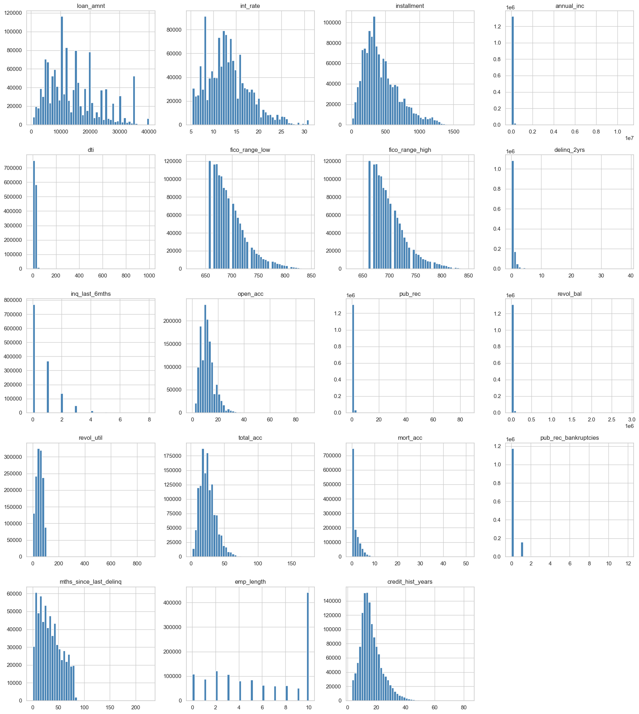
Diagramas de caja (boxplots) para ver asimetría y outliers.
fig, axes = plt.subplots(5, 4, figsize=(18, 16))
for ax, c in zip(axes.flat, num_cols):
ax.boxplot(df[c].dropna(), vert=False, widths=0.6,
flierprops=dict(marker='o', markersize=2, alpha=0.3))
ax.set_title(c)
ax.set_yticks([])
for ax in axes.flat[len(num_cols):]:
ax.axis('off')
plt.tight_layout()
plt.show()
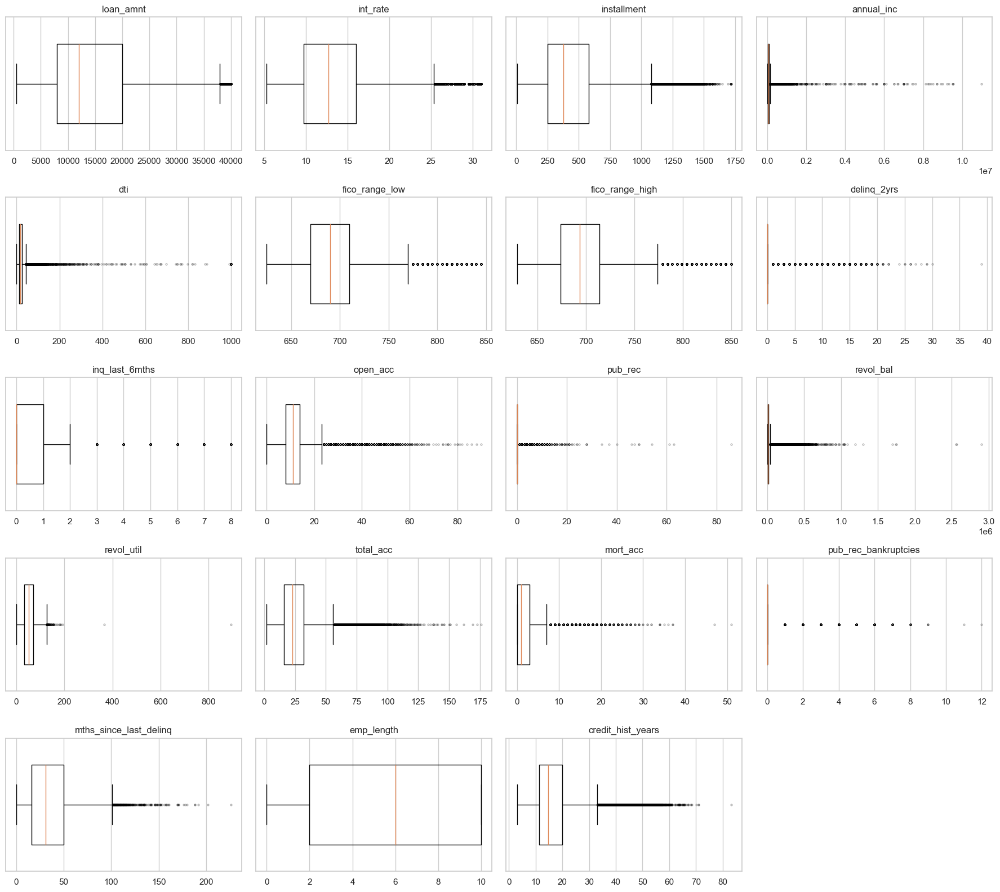
Comentario de histogramas y boxplots.
annual_inc,dti,revol_bal,pub_recydelinq_2yrsaparecen como una sola barra pegada a la izquierda. Los valores extremos estiran el eje, y el boxplot muestra una nube de puntos atípicos por encima del bigote.loan_amnttiene picos en valores redondos (10 000, 15 000, 20 000, …): los solicitantes piden montos redondos.int_ratees unimodal con ligera cola a la derecha.fico_range_*es asimétrica a la derecha y la gran mayoría de los préstamos está por encima de ≈ 660 (lo que sugiere un puntaje mínimo exigido por Lending Club). Solo unos pocos casos llegan hasta 625-629.emp_lengthtiene una gran acumulación en 10, porque la categoría original es “10+ years” y agrupa a todos los que llevan 10 años o más.mths_since_last_delinqycredit_hist_yearstienen forma aproximadamente log-normal.
Normalidad. La prueba de Shapiro-Wilk de scipy solo da p-valores confiables hasta \(n \approx 5000\). Por eso se usa la prueba de D’Agostino-Pearson (stats.normaltest), que combina asimetría y curtosis y funciona con muestras grandes. Además se sigue una regla práctica: si \(|\text{asimetría}| > 1\), la distribución es muy asimétrica y conviene considerar una transformación (log o Box-Cox).
filas = []
for c in num_cols:
s = df[c].dropna()
k2, p = stats.normaltest(s)
asim = s.skew()
if abs(asim) > 1 and s.min() >= 0:
sugerencia = 'log(1+x) / Box-Cox'
elif abs(asim) > 1:
sugerencia = 'Yeo-Johnson (tiene valores <= 0)'
else:
sugerencia = 'no necesaria'
filas.append({'variable': c, 'asimetria': asim, 'curtosis': s.kurt(),
'estadistico K2': k2, 'p-value': p, 'transformacion sugerida': sugerencia})
tabla_normalidad = pd.DataFrame(filas).set_index('variable').sort_values('asimetria', ascending=False)
tabla_normalidad.round(3)
| asimetria | curtosis | estadistico K2 | p-value | transformacion sugerida | |
|---|---|---|---|---|---|
| variable | |||||
| annual_inc | 46.318 | 4812.432 | 4130262.893 | 0.0 | log(1+x) / Box-Cox |
| dti | 27.111 | 2112.691 | 3380631.886 | 0.0 | Yeo-Johnson (tiene valores <= 0) |
| revol_bal | 13.750 | 720.854 | 2540183.330 | 0.0 | log(1+x) / Box-Cox |
| pub_rec | 11.556 | 743.521 | 2364252.368 | 0.0 | log(1+x) / Box-Cox |
| delinq_2yrs | 5.604 | 58.692 | 1493218.995 | 0.0 | log(1+x) / Box-Cox |
| pub_rec_bankruptcies | 3.441 | 20.029 | 1014035.423 | 0.0 | log(1+x) / Box-Cox |
| inq_last_6mths | 1.696 | 3.289 | 429630.794 | 0.0 | log(1+x) / Box-Cox |
| mort_acc | 1.637 | 5.193 | 447700.173 | 0.0 | log(1+x) / Box-Cox |
| open_acc | 1.296 | 3.344 | 335533.993 | 0.0 | log(1+x) / Box-Cox |
| fico_range_high | 1.286 | 1.663 | 278364.734 | 0.0 | log(1+x) / Box-Cox |
| fico_range_low | 1.286 | 1.662 | 278267.555 | 0.0 | log(1+x) / Box-Cox |
| credit_hist_years | 1.093 | 1.713 | 233502.076 | 0.0 | log(1+x) / Box-Cox |
| installment | 1.007 | 0.749 | 177767.305 | 0.0 | log(1+x) / Box-Cox |
| total_acc | 0.957 | 1.673 | 199521.118 | 0.0 | no necesaria |
| loan_amnt | 0.782 | -0.084 | 108839.427 | 0.0 | no necesaria |
| int_rate | 0.713 | 0.506 | 102398.125 | 0.0 | no necesaria |
| mths_since_last_delinq | 0.455 | -0.738 | 63139.136 | 0.0 | no necesaria |
| revol_util | -0.036 | 0.244 | 2950.300 | 0.0 | no necesaria |
| emp_length | -0.217 | -1.499 | 7630784.531 | 0.0 | no necesaria |
Efecto de la transformación log(1+x) sobre las variables más asimétricas:
asimetricas = tabla_normalidad[tabla_normalidad['transformacion sugerida'] == 'log(1+x) / Box-Cox'].index[:8]
fig, axes = plt.subplots(2, len(asimetricas), figsize=(3.2 * len(asimetricas), 6))
for j, c in enumerate(asimetricas):
s = df[c].dropna()
axes[0, j].hist(s, bins=50, color='steelblue')
axes[0, j].set_title(f'{c}\nasim={s.skew():.1f}')
axes[1, j].hist(np.log1p(s), bins=50, color='darkorange')
axes[1, j].set_title(f'log1p({c})\nasim={np.log1p(s).skew():.1f}')
plt.tight_layout()
plt.show()
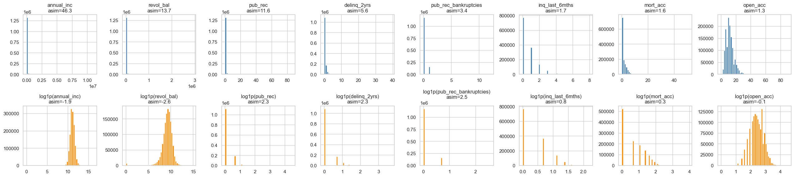
Comentario sobre normalidad y transformaciones.
La prueba de D’Agostino-Pearson rechaza la normalidad en todas las variables (p ≈ 0). Con 1.3 millones de datos era de esperarse: la prueba detecta hasta la mínima desviación, así que se usa la asimetría como criterio práctico.
Transformación recomendada (log(1+x) o Box-Cox):
annual_inc,revol_bal,installment,mort_acc,open_acc,inq_last_6mthsycredit_hist_years. La figura lo confirma: la asimetría deannual_incpasa de 46 a valores cercanos a 0 conlog1p, yrevol_balqueda casi simétrica.dtitiene valores ≤ 0 (−1), así quelogno aplica directamente. Primero hay que corregir los valores inválidos (−1 y 999) y luego aplicarlog1po Yeo-Johnson.En
pub_rec,delinq_2yrsypub_rec_bankruptciesel log no arregla nada, porque la mayoría de los valores son 0. Se recomienda binarizarlas (tiene_registro = valor > 0).Para
fico_range_*la asimetría (1.29) se debe al límite inferior de la política de crédito. Basta con estandarizar (StandardScaler).Estas transformaciones importan sobre todo para los modelos lineales (
LogisticRegression,LinearSVC) y paraNaiveBayesgaussiano. Los árboles (DecisionTree,RandomForest,GBT) son invariantes a transformaciones monótonas.
Tasa de faltantes por variable numérica y umbral de decisión. Se toma un umbral del 30 %: por encima de él la variable es candidata a eliminarse o a un tratamiento especial.
faltantes_num = (100 * df[num_cols].isna().mean()).sort_values(ascending=False).round(3)
print(faltantes_num[faltantes_num > 0])
print('\nVariables numéricas con más de 30 % de faltantes:', list(faltantes_num[faltantes_num > 30].index))
mths_since_last_delinq 50.453
emp_length 5.836
mort_acc 3.515
revol_util 0.064
pub_rec_bankruptcies 0.052
dti 0.028
dtype: float64
Variables numéricas con más de 30 % de faltantes: ['mths_since_last_delinq']
Comentario. Solo mths_since_last_delinq supera el umbral del 30 % (50.5 %). Sin embargo, su faltante no es un error: el campo está vacío cuando el solicitante nunca ha tenido una morosidad, así que el nulo contiene información. En lugar de eliminarla se recomienda crear un indicador nunca_moroso = mths_since_last_delinq.isna() y luego imputar el valor numérico (ver 9.10.4.1.4). Las demás variables tienen menos de 6 % de faltantes y se pueden imputar con la mediana.
Variables categóricas#
Para cada variable se reporta la frecuencia absoluta y relativa de cada categoría. Se marcan las categorías con menos del 1 % de los datos, que podrían agruparse en "Otros".
for c in cat_cols:
frec = df[c].value_counts(dropna=False)
tabla = pd.DataFrame({'frecuencia': frec, '% relativo': (100 * frec / len(df)).round(3)})
tabla['< 1 %'] = np.where(tabla['% relativo'] < 1, 'sí', '')
print(f'===== {c} ({df[c].nunique()} categorías, faltantes: {df[c].isna().sum()}) =====')
with pd.option_context('display.max_rows', 100):
display(tabla)
===== term (2 categorías, faltantes: 0) =====
| frecuencia | % relativo | < 1 % | |
|---|---|---|---|
| term | |||
| 36 months | 1020743 | 75.874 | |
| 60 months | 324567 | 24.126 |
===== grade (7 categorías, faltantes: 0) =====
| frecuencia | % relativo | < 1 % | |
|---|---|---|---|
| grade | |||
| B | 392741 | 29.193 | |
| C | 381686 | 28.372 | |
| A | 235090 | 17.475 | |
| D | 200953 | 14.937 | |
| E | 93650 | 6.961 | |
| F | 32058 | 2.383 | |
| G | 9132 | 0.679 | sí |
===== sub_grade (35 categorías, faltantes: 0) =====
| frecuencia | % relativo | < 1 % | |
|---|---|---|---|
| sub_grade | |||
| C1 | 85494 | 6.355 | |
| B4 | 83199 | 6.184 | |
| B5 | 82538 | 6.135 | |
| B3 | 81827 | 6.082 | |
| C2 | 79213 | 5.888 | |
| C3 | 74998 | 5.575 | |
| C4 | 74421 | 5.532 | |
| B2 | 74024 | 5.502 | |
| B1 | 71153 | 5.289 | |
| C5 | 67560 | 5.022 | |
| A5 | 64003 | 4.757 | |
| A4 | 52235 | 3.883 | |
| D1 | 51321 | 3.815 | |
| D2 | 44848 | 3.334 | |
| A1 | 43678 | 3.247 | |
| D3 | 39317 | 2.923 | |
| A3 | 37996 | 2.824 | |
| A2 | 37178 | 2.764 | |
| D4 | 35566 | 2.644 | |
| D5 | 29901 | 2.223 | |
| E1 | 23749 | 1.765 | |
| E2 | 21377 | 1.589 | |
| E3 | 18387 | 1.367 | |
| E4 | 15720 | 1.169 | |
| E5 | 14417 | 1.072 | |
| F1 | 9970 | 0.741 | sí |
| F2 | 7198 | 0.535 | sí |
| F3 | 6088 | 0.453 | sí |
| F4 | 4859 | 0.361 | sí |
| F5 | 3943 | 0.293 | sí |
| G1 | 2997 | 0.223 | sí |
| G2 | 2131 | 0.158 | sí |
| G3 | 1614 | 0.120 | sí |
| G4 | 1280 | 0.095 | sí |
| G5 | 1110 | 0.083 | sí |
===== home_ownership (6 categorías, faltantes: 0) =====
| frecuencia | % relativo | < 1 % | |
|---|---|---|---|
| home_ownership | |||
| MORTGAGE | 665579 | 49.474 | |
| RENT | 534421 | 39.725 | |
| OWN | 144832 | 10.766 | |
| ANY | 286 | 0.021 | sí |
| OTHER | 144 | 0.011 | sí |
| NONE | 48 | 0.004 | sí |
===== verification_status (3 categorías, faltantes: 0) =====
| frecuencia | % relativo | < 1 % | |
|---|---|---|---|
| verification_status | |||
| Source Verified | 521273 | 38.747 | |
| Verified | 418336 | 31.096 | |
| Not Verified | 405701 | 30.157 |
===== purpose (14 categorías, faltantes: 0) =====
| frecuencia | % relativo | < 1 % | |
|---|---|---|---|
| purpose | |||
| debt_consolidation | 780321 | 58.003 | |
| credit_card | 295279 | 21.949 | |
| home_improvement | 87504 | 6.504 | |
| other | 77875 | 5.789 | |
| major_purchase | 29425 | 2.187 | |
| medical | 15554 | 1.156 | |
| small_business | 15416 | 1.146 | |
| car | 14585 | 1.084 | |
| moving | 9480 | 0.705 | sí |
| vacation | 9065 | 0.674 | sí |
| house | 7253 | 0.539 | sí |
| wedding | 2294 | 0.171 | sí |
| renewable_energy | 933 | 0.069 | sí |
| educational | 326 | 0.024 | sí |
===== addr_state (51 categorías, faltantes: 0) =====
| frecuencia | % relativo | < 1 % | |
|---|---|---|---|
| addr_state | |||
| CA | 196528 | 14.608 | |
| TX | 110169 | 8.189 | |
| NY | 109842 | 8.165 | |
| FL | 95606 | 7.107 | |
| IL | 51720 | 3.844 | |
| NJ | 48449 | 3.601 | |
| PA | 45522 | 3.384 | |
| OH | 43842 | 3.259 | |
| GA | 43376 | 3.224 | |
| VA | 38040 | 2.828 | |
| NC | 37784 | 2.809 | |
| MI | 35234 | 2.619 | |
| AZ | 32695 | 2.430 | |
| MD | 31227 | 2.321 | |
| MA | 30977 | 2.303 | |
| CO | 29671 | 2.206 | |
| WA | 29188 | 2.170 | |
| MN | 23968 | 1.782 | |
| IN | 21716 | 1.614 | |
| MO | 21260 | 1.580 | |
| TN | 20385 | 1.515 | |
| NV | 20267 | 1.506 | |
| CT | 19728 | 1.466 | |
| WI | 17732 | 1.318 | |
| AL | 16613 | 1.235 | |
| OR | 16406 | 1.219 | |
| SC | 15992 | 1.189 | |
| LA | 15499 | 1.152 | |
| KY | 12839 | 0.954 | sí |
| OK | 12281 | 0.913 | sí |
| KS | 11240 | 0.835 | sí |
| AR | 10047 | 0.747 | sí |
| UT | 10036 | 0.746 | sí |
| NM | 7362 | 0.547 | sí |
| HI | 6757 | 0.502 | sí |
| MS | 6588 | 0.490 | sí |
| NH | 6449 | 0.479 | sí |
| RI | 5871 | 0.436 | sí |
| WV | 4878 | 0.363 | sí |
| MT | 3823 | 0.284 | sí |
| DE | 3783 | 0.281 | sí |
| NE | 3586 | 0.267 | sí |
| DC | 3475 | 0.258 | sí |
| AK | 3190 | 0.237 | sí |
| WY | 2922 | 0.217 | sí |
| SD | 2767 | 0.206 | sí |
| VT | 2652 | 0.197 | sí |
| ME | 2030 | 0.151 | sí |
| ID | 1689 | 0.126 | sí |
| ND | 1602 | 0.119 | sí |
| IA | 7 | 0.001 | sí |
===== application_type (2 categorías, faltantes: 0) =====
| frecuencia | % relativo | < 1 % | |
|---|---|---|---|
| application_type | |||
| Individual | 1319510 | 98.082 | |
| Joint App | 25800 | 1.918 |
===== initial_list_status (2 categorías, faltantes: 0) =====
| frecuencia | % relativo | < 1 % | |
|---|---|---|---|
| initial_list_status | |||
| w | 784010 | 58.277 | |
| f | 561300 | 41.723 |
resumen_cat = pd.DataFrame({
'n_categorias': [df[c].nunique() for c in cat_cols],
'categorias < 1 %': [int((df[c].value_counts(normalize=True) < 0.01).sum()) for c in cat_cols],
'% faltantes': [100 * df[c].isna().mean() for c in cat_cols]}, index=cat_cols)
resumen_cat
| n_categorias | categorias < 1 % | % faltantes | |
|---|---|---|---|
| term | 2 | 0 | 0.0 |
| grade | 7 | 1 | 0.0 |
| sub_grade | 35 | 10 | 0.0 |
| home_ownership | 6 | 3 | 0.0 |
| verification_status | 3 | 0 | 0.0 |
| purpose | 14 | 6 | 0.0 |
| addr_state | 51 | 23 | 0.0 |
| application_type | 2 | 0 | 0.0 |
| initial_list_status | 2 | 0 | 0.0 |
Gráficos de barras de las variables categóricas.
pocas = ['term', 'grade', 'home_ownership', 'verification_status',
'application_type', 'initial_list_status', 'purpose']
fig, axes = plt.subplots(2, 4, figsize=(20, 9))
for ax, c in zip(axes.flat, pocas):
frec = df[c].value_counts(normalize=True).sort_values() * 100
ax.barh(frec.index.astype(str), frec.values, color='steelblue')
ax.axvline(1, color='red', ls='--', lw=1)
ax.set_title(c)
ax.set_xlabel('% de préstamos')
axes.flat[-1].axis('off')
plt.tight_layout()
plt.show()
for c in ['sub_grade', 'addr_state']:
frec = df[c].value_counts(normalize=True) * 100
if c == 'sub_grade':
frec = frec.sort_index()
plt.figure(figsize=(18, 4))
plt.bar(frec.index.astype(str), frec.values, color='steelblue')
plt.axhline(1, color='red', ls='--', lw=1, label='1 %')
plt.title(c)
plt.ylabel('% de préstamos')
plt.xticks(rotation=90)
plt.legend()
plt.show()
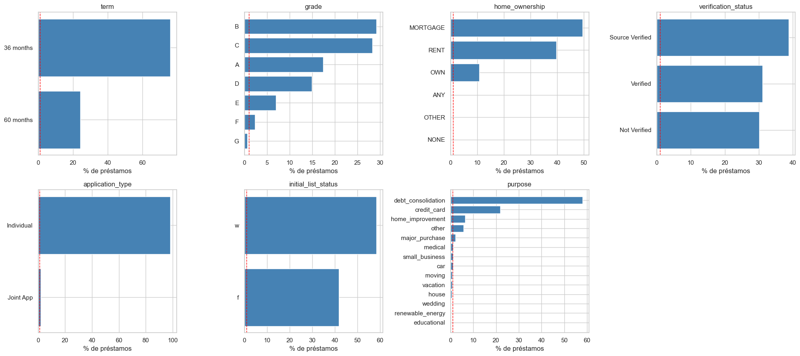
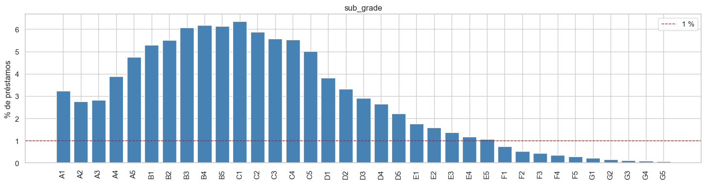
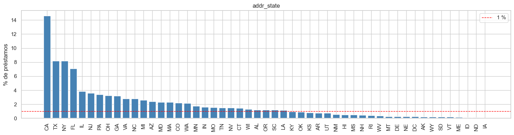
Comentario sobre las variables categóricas.
Faltantes: ninguna variable categórica del EDA tiene valores nulos, así que no se necesita moda ni categoría “Desconocido”.
Categorías de baja frecuencia (< 1 %):
home_ownership:ANY(286),OTHER(144) yNONE(48) suman solo el 0.04 %. Se recomienda agruparlas enOTHER, porque las tres significan “ni hipoteca, ni renta, ni propia”.purpose:moving,vacation,house,wedding,renewable_energyyeducational(< 1 % cada una) pueden unirse enother, que ya existe (5.8 %).addr_state: 23 estados tienen < 1 %; IA solo tiene 7 préstamos. En lugar de 51 dummies se puede agrupar en “Otros” o por región.gradeG (0.68 %) y las subcategorías F1-G5 son poco frecuentes, pero no deben agruparse con otras, porque tienen las tasas de default más altas (ver análisis bidimensional).
Redundancias:
sub_gradees una subdivisión degrade(A1-A5 ⊂ A, …). Contienen la misma información y conviene usar solo una.En
verification_status, “Verified” y “Source Verified” indican que el ingreso fue verificado (la segunda verifica la fuente). Podrían unificarse en “Verificado” si se busca simplificar.
Distribuciones dominantes:
debt_consolidationes el 58 % de los préstamos y, junto concredit_card, el 80 %. El 76 % son a 36 meses, el 98 % sonIndividualy California concentra el 14.6 %.
Variable objetivo (default)#
conteo = df['default'].value_counts().sort_index()
tabla_default = pd.DataFrame({'clase': ['0 = Fully Paid', '1 = Charged Off'],
'n': conteo.values,
'%': (100 * conteo / conteo.sum()).round(2).values})
display(tabla_default)
print(f'Razón de desbalance (0:1) = {conteo[0] / conteo[1]:.2f} : 1')
fig, axes = plt.subplots(1, 2, figsize=(12, 4.5))
axes[0].bar(tabla_default['clase'], tabla_default['n'], color=['steelblue', 'indianred'])
for i, v in enumerate(tabla_default['n']):
axes[0].text(i, v, f'{v:,}', ha='center', va='bottom')
axes[0].set_title('Distribución de la variable default')
axes[0].set_ylabel('número de préstamos')
axes[1].pie(tabla_default['n'], labels=tabla_default['clase'], autopct='%1.1f%%',
colors=['steelblue', 'indianred'], startangle=90)
axes[1].set_title('Proporción de clases')
plt.tight_layout()
plt.show()
| clase | n | % | |
|---|---|---|---|
| 0 | 0 = Fully Paid | 1076751 | 80.04 |
| 1 | 1 = Charged Off | 268559 | 19.96 |
Razón de desbalance (0:1) = 4.01 : 1
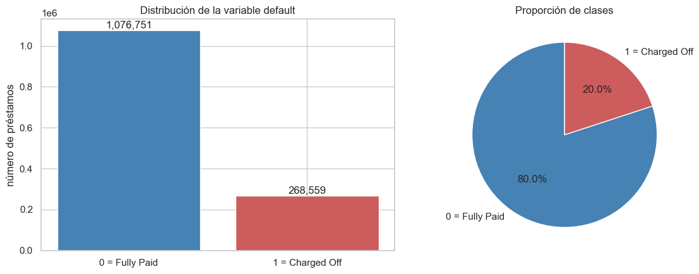
Comentario sobre la variable objetivo. Hay 1 076 751 (80.04 %) préstamos pagados y 268 559 (19.96 %) en default, una razón aproximada de 4 : 1. Es un desbalance moderado, no extremo, con impacto directo en el modelado:
Un modelo trivial que siempre prediga “0” tendría 80 % de accuracy. Por eso la exactitud no sirve como métrica principal; hay que usar AUC-ROC (que además es la métrica de la prueba de DeLong), precision, recall, F1 de la clase 1 o balanced accuracy.
La partición train/test debe ser estratificada por
default(lo exige 9.10.4.2.1), para que ambos conjuntos mantengan el 20 %.Se puede compensar con
class_weight='balanced'(scikit-learn) o una columna de pesos (weightColen PySpark). Estas opciones no alteran el número de filas, a diferencia de un submuestreo, que el enunciado prohíbe.El umbral de decisión 0.5 probablemente no sea el óptimo. Conviene ajustarlo con la curva precision-recall.
9.10.4.1.3. Análisis bidimensional (relaciones entre variables)#
Variables numéricas vs default#
Boxplots comparativos por clase (todos los datos):
fig, axes = plt.subplots(5, 4, figsize=(18, 22))
for ax, c in zip(axes.flat, num_cols):
sns.boxplot(data=df, x='default', y=c, ax=ax, palette=['steelblue', 'indianred'],
flierprops=dict(marker='o', markersize=2, alpha=0.3))
ax.set_title(c)
for ax in axes.flat[len(num_cols):]:
ax.axis('off')
plt.tight_layout()
plt.show()
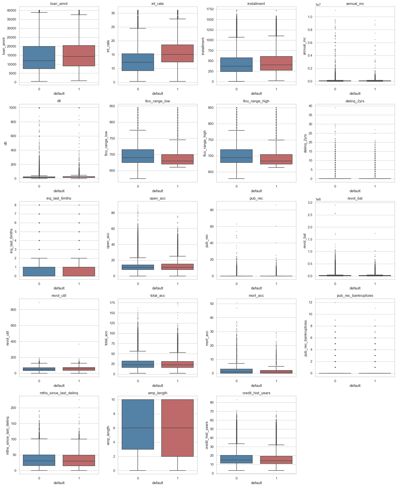
Violin plots de las variables más relevantes. Para que la forma de la densidad sea legible, el gráfico se recorta entre los percentiles 1 y 99 de cada variable. El recorte es solo visual: los cálculos usan todos los datos.
clave = ['int_rate', 'fico_range_high', 'annual_inc', 'dti',
'loan_amnt', 'revol_util', 'emp_length', 'credit_hist_years']
fig, axes = plt.subplots(2, 4, figsize=(20, 9))
for ax, c in zip(axes.flat, clave):
p1, p99 = df[c].quantile([0.01, 0.99])
sub = df.loc[df[c].between(p1, p99), [c, 'default']]
sns.violinplot(data=sub, x='default', y=c, ax=ax, cut=0,
palette=['steelblue', 'indianred'])
ax.set_title(c)
plt.tight_layout()
plt.show()
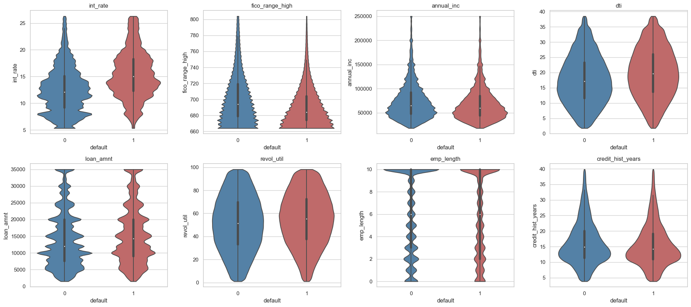
Comentario de boxplots y violin plots por clase.
int_ratees la variable con mayor separación: la mediana pasa de 12.2 % (pagados) a 15.1 % (default), y toda la caja del grupo 1 está desplazada hacia arriba. Tiene sentido: la tasa ya refleja el riesgo que Lending Club asignó al solicitante.fico_range_high: los que caen en default tienen puntajes más bajos (mediana 684 vs 694) y menos dispersión hacia arriba. El violin muestra más densidad en la zona de 660-700.dti,revol_utilyloan_amntson ligeramente mayores en el grupo de default.annual_inc,mort_accycredit_hist_years, en cambio, son ligeramente menores.emp_length,total_acc,open_accymths_since_last_delinqtienen cajas prácticamente idénticas en ambas clases, así que por sí solas aportan poca información.Los outliers aparecen en ambas clases con patrones parecidos. No son exclusivos de los morosos, lo que refuerza que se deben transformar o recortar (winsorizar) y no eliminar.
Pruebas de diferencia entre clases. Para cada variable numérica se calculan:
La diferencia de medias entre
default = 1ydefault = 0.La prueba t de Student en su versión de Welch (
equal_var=False), que no supone varianzas iguales.La prueba de Mann-Whitney U, que no supone normalidad. Es la adecuada aquí, porque ninguna variable es normal.
La correlación punto-biserial \(r_{pb}\) entre la variable y
default.
Con \(n > 1.3\) millones casi cualquier diferencia sale “estadísticamente significativa”. Por eso, para juzgar la relevancia práctica se usan la magnitud de \(r_{pb}\) y la diferencia de medianas, y no solo el p-value.
filas = []
for c in num_cols:
datos = df[[c, 'default']].dropna()
g0 = datos.loc[datos['default'] == 0, c]
g1 = datos.loc[datos['default'] == 1, c]
t, p_t = stats.ttest_ind(g1, g0, equal_var=False)
u, p_u = stats.mannwhitneyu(g1, g0, alternative='two-sided')
r, p_r = stats.pointbiserialr(datos['default'], datos[c])
filas.append({'variable': c, 'media_0': g0.mean(), 'media_1': g1.mean(),
'dif_medias': g1.mean() - g0.mean(),
'mediana_0': g0.median(), 'mediana_1': g1.median(),
't (Welch)': t, 'p t': p_t, 'p Mann-Whitney': p_u,
'r punto-biserial': r, 'p r': p_r,
'significativa (p<0.05)': 'sí' if p_u < 0.05 else 'no'})
tabla_pruebas = pd.DataFrame(filas).set_index('variable')
tabla_pruebas = tabla_pruebas.reindex(tabla_pruebas['r punto-biserial'].abs().sort_values(ascending=False).index)
tabla_pruebas.round(4)
| media_0 | media_1 | dif_medias | mediana_0 | mediana_1 | t (Welch) | p t | p Mann-Whitney | r punto-biserial | p r | significativa (p<0.05) | |
|---|---|---|---|---|---|---|---|---|---|---|---|
| variable | |||||||||||
| int_rate | 12.6233 | 15.7107 | 3.0874 | 12.2300 | 15.0500 | 295.9698 | 0.0 | 0.0 | 0.2588 | 0.0 | sí |
| fico_range_low | 698.2639 | 687.8501 | -10.4138 | 690.0000 | 680.0000 | -175.8143 | 0.0 | 0.0 | -0.1307 | 0.0 | sí |
| fico_range_high | 702.2641 | 691.8502 | -10.4139 | 694.0000 | 684.0000 | -175.8135 | 0.0 | 0.0 | -0.1307 | 0.0 | sí |
| dti | 17.8116 | 20.1712 | 2.3596 | 17.1100 | 19.7600 | 93.8212 | 0.0 | 0.0 | 0.0845 | 0.0 | sí |
| mort_acc | 1.7465 | 1.3710 | -0.3754 | 1.0000 | 1.0000 | -91.7823 | 0.0 | 0.0 | -0.0753 | 0.0 | sí |
| loan_amnt | 14134.3698 | 15565.0554 | 1430.6856 | 12000.0000 | 14350.0000 | 75.4978 | 0.0 | 0.0 | 0.0656 | 0.0 | sí |
| inq_last_6mths | 0.6244 | 0.7780 | 0.1536 | 0.0000 | 0.0000 | 71.6239 | 0.0 | 0.0 | 0.0655 | 0.0 | sí |
| revol_util | 51.0747 | 54.7584 | 3.6838 | 51.3000 | 55.5000 | 71.0796 | 0.0 | 0.0 | 0.0600 | 0.0 | sí |
| installment | 431.3232 | 465.1480 | 33.8248 | 368.2600 | 402.8300 | 59.7698 | 0.0 | 0.0 | 0.0517 | 0.0 | sí |
| annual_inc | 77705.9455 | 70400.7433 | -7305.2022 | 65000.0000 | 60000.0000 | -50.9015 | 0.0 | 0.0 | -0.0418 | 0.0 | sí |
| credit_hist_years | 16.3846 | 15.7570 | -0.6275 | 14.9131 | 14.2478 | -38.8703 | 0.0 | 0.0 | -0.0334 | 0.0 | sí |
| open_acc | 11.5168 | 11.9013 | 0.3845 | 11.0000 | 11.0000 | 31.8507 | 0.0 | 0.0 | 0.0281 | 0.0 | sí |
| pub_rec | 0.2074 | 0.2468 | 0.0394 | 0.0000 | 0.0000 | 28.4187 | 0.0 | 0.0 | 0.0262 | 0.0 | sí |
| pub_rec_bankruptcies | 0.1297 | 0.1536 | 0.0239 | 0.0000 | 0.0000 | 27.8630 | 0.0 | 0.0 | 0.0253 | 0.0 | sí |
| revol_bal | 16471.2460 | 15353.5006 | -1117.7455 | 11150.0000 | 11072.0000 | -26.1087 | 0.0 | 0.0 | -0.0200 | 0.0 | sí |
| delinq_2yrs | 0.3093 | 0.3519 | 0.0426 | 0.0000 | 0.0000 | 21.3730 | 0.0 | 0.0 | 0.0194 | 0.0 | sí |
| emp_length | 5.9918 | 5.8592 | -0.1325 | 6.0000 | 6.0000 | -15.9916 | 0.0 | 0.0 | -0.0142 | 0.0 | sí |
| mths_since_last_delinq | 34.4500 | 33.7829 | -0.6671 | 31.0000 | 30.0000 | -10.0470 | 0.0 | 0.0 | -0.0123 | 0.0 | sí |
| total_acc | 25.0486 | 24.7094 | -0.3392 | 23.0000 | 23.0000 | -13.0099 | 0.0 | 0.0 | -0.0113 | 0.0 | sí |
r_pb = tabla_pruebas['r punto-biserial'].sort_values()
plt.figure(figsize=(8, 7))
plt.barh(r_pb.index, r_pb.values, color=np.where(r_pb.values > 0, 'indianred', 'steelblue'))
plt.axvline(0, color='black', lw=0.8)
plt.title('Correlación punto-biserial con default')
plt.xlabel('r_pb')
plt.show()
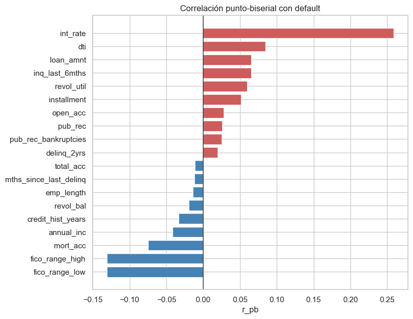
Comentario de las pruebas.
Todas las diferencias son estadísticamente significativas (p ≈ 0 en t de Welch y en Mann-Whitney), incluso en variables cuyas medianas son idénticas (
emp_length,total_acc). Con n = 1.3 M el p-value deja de discriminar: hasta una diferencia de 0.1 años sale significativa.Por eso la relevancia se juzga con \(r_{pb}\):
Mayor asociación:
int_rate(r = 0.259),fico_range_low/high(r = −0.131),dti(0.085),mort_acc(−0.075),loan_amnt(0.066),inq_last_6mths(0.066) yrevol_util(0.060).Asociación casi nula (|r| < 0.03):
total_acc,mths_since_last_delinq,emp_length,delinq_2yrs,revol_bal,pub_rec,pub_rec_bankruptciesyopen_acc.
Todas las correlaciones son débiles (|r| < 0.3). Ninguna variable predice el default por sí sola, así que los modelos tendrán que combinar muchas variables y posiblemente relaciones no lineales. Es razonable esperar un AUC moderado, no cercano a 1.
Signos: a mayor tasa, deuda relativa, monto y consultas de crédito recientes, mayor riesgo. A mayor FICO, ingreso, número de hipotecas y antigüedad crediticia, menor riesgo. Todos los signos son coherentes con la intuición financiera.
Variables categóricas vs default#
Tablas de contingencia con la tasa de default (% de Charged Off) de cada categoría:
tasa_global = 100 * df['default'].mean()
print(f'Tasa global de default: {tasa_global:.2f} %\n')
tablas_ct = {}
for c in cat_cols:
ct = pd.crosstab(df[c], df['default'])
ct.columns = ['n_fully_paid', 'n_charged_off']
ct['n_total'] = ct.sum(axis=1)
ct['tasa_default_%'] = (100 * ct['n_charged_off'] / ct['n_total']).round(2)
tablas_ct[c] = ct
print(f'===== {c} =====')
with pd.option_context('display.max_rows', 100):
display(ct.sort_values('tasa_default_%', ascending=False))
Tasa global de default: 19.96 %
===== term =====
| n_fully_paid | n_charged_off | n_total | tasa_default_% | |
|---|---|---|---|---|
| term | ||||
| 60 months | 219260 | 105307 | 324567 | 32.45 |
| 36 months | 857491 | 163252 | 1020743 | 15.99 |
===== grade =====
| n_fully_paid | n_charged_off | n_total | tasa_default_% | |
|---|---|---|---|---|
| grade | ||||
| G | 4572 | 4560 | 9132 | 49.93 |
| F | 17567 | 14491 | 32058 | 45.20 |
| E | 57615 | 36035 | 93650 | 38.48 |
| D | 139899 | 61054 | 200953 | 30.38 |
| C | 296037 | 85649 | 381686 | 22.44 |
| B | 340172 | 52569 | 392741 | 13.39 |
| A | 220889 | 14201 | 235090 | 6.04 |
===== sub_grade =====
| n_fully_paid | n_charged_off | n_total | tasa_default_% | |
|---|---|---|---|---|
| sub_grade | ||||
| G5 | 515 | 595 | 1110 | 53.60 |
| G3 | 785 | 829 | 1614 | 51.36 |
| G4 | 625 | 655 | 1280 | 51.17 |
| F5 | 2004 | 1939 | 3943 | 49.18 |
| G2 | 1084 | 1047 | 2131 | 49.13 |
| F4 | 2532 | 2327 | 4859 | 47.89 |
| G1 | 1563 | 1434 | 2997 | 47.85 |
| F2 | 3934 | 3264 | 7198 | 45.35 |
| F3 | 3344 | 2744 | 6088 | 45.07 |
| F1 | 5753 | 4217 | 9970 | 42.30 |
| E5 | 8395 | 6022 | 14417 | 41.77 |
| E4 | 9416 | 6304 | 15720 | 40.10 |
| E3 | 11269 | 7118 | 18387 | 38.71 |
| E2 | 13351 | 8026 | 21377 | 37.55 |
| E1 | 15184 | 8565 | 23749 | 36.06 |
| D5 | 19906 | 9995 | 29901 | 33.43 |
| D4 | 24054 | 11512 | 35566 | 32.37 |
| D3 | 27309 | 12008 | 39317 | 30.54 |
| D2 | 31579 | 13269 | 44848 | 29.59 |
| D1 | 37051 | 14270 | 51321 | 27.81 |
| C5 | 49991 | 17569 | 67560 | 26.01 |
| C4 | 55875 | 18546 | 74421 | 24.92 |
| C3 | 58106 | 16892 | 74998 | 22.52 |
| C2 | 62801 | 16412 | 79213 | 20.72 |
| C1 | 69264 | 16230 | 85494 | 18.98 |
| B5 | 68753 | 13785 | 82538 | 16.70 |
| B4 | 70863 | 12336 | 83199 | 14.83 |
| B3 | 71203 | 10624 | 81827 | 12.98 |
| B2 | 65615 | 8409 | 74024 | 11.36 |
| B1 | 63738 | 7415 | 71153 | 10.42 |
| A5 | 58624 | 5379 | 64003 | 8.40 |
| A4 | 48648 | 3587 | 52235 | 6.87 |
| A3 | 35903 | 2093 | 37996 | 5.51 |
| A2 | 35444 | 1734 | 37178 | 4.66 |
| A1 | 42270 | 1408 | 43678 | 3.22 |
===== home_ownership =====
| n_fully_paid | n_charged_off | n_total | tasa_default_% | |
|---|---|---|---|---|
| home_ownership | ||||
| RENT | 410347 | 124074 | 534421 | 23.22 |
| OWN | 114968 | 29864 | 144832 | 20.62 |
| ANY | 230 | 56 | 286 | 19.58 |
| OTHER | 117 | 27 | 144 | 18.75 |
| MORTGAGE | 551048 | 114531 | 665579 | 17.21 |
| NONE | 41 | 7 | 48 | 14.58 |
===== verification_status =====
| n_fully_paid | n_charged_off | n_total | tasa_default_% | |
|---|---|---|---|---|
| verification_status | ||||
| Verified | 318544 | 99792 | 418336 | 23.85 |
| Source Verified | 412041 | 109232 | 521273 | 20.95 |
| Not Verified | 346166 | 59535 | 405701 | 14.67 |
===== purpose =====
| n_fully_paid | n_charged_off | n_total | tasa_default_% | |
|---|---|---|---|---|
| purpose | ||||
| small_business | 10836 | 4580 | 15416 | 29.71 |
| renewable_energy | 712 | 221 | 933 | 23.69 |
| moving | 7266 | 2214 | 9480 | 23.35 |
| house | 5666 | 1587 | 7253 | 21.88 |
| medical | 12167 | 3387 | 15554 | 21.78 |
| debt_consolidation | 615307 | 165014 | 780321 | 21.15 |
| other | 61490 | 16385 | 77875 | 21.04 |
| vacation | 7327 | 1738 | 9065 | 19.17 |
| major_purchase | 23952 | 5473 | 29425 | 18.60 |
| home_improvement | 72002 | 15502 | 87504 | 17.72 |
| educational | 270 | 56 | 326 | 17.18 |
| credit_card | 245297 | 49982 | 295279 | 16.93 |
| car | 12444 | 2141 | 14585 | 14.68 |
| wedding | 2015 | 279 | 2294 | 12.16 |
===== addr_state =====
| n_fully_paid | n_charged_off | n_total | tasa_default_% | |
|---|---|---|---|---|
| addr_state | ||||
| MS | 4870 | 1718 | 6588 | 26.08 |
| NE | 2683 | 903 | 3586 | 25.18 |
| AR | 7627 | 2420 | 10047 | 24.09 |
| AL | 12687 | 3926 | 16613 | 23.63 |
| OK | 9398 | 2883 | 12281 | 23.48 |
| LA | 11906 | 3593 | 15499 | 23.18 |
| NY | 85629 | 24213 | 109842 | 22.04 |
| NV | 15824 | 4443 | 20267 | 21.92 |
| FL | 75075 | 20531 | 95606 | 21.47 |
| TN | 16021 | 4364 | 20385 | 21.41 |
| IN | 17067 | 4649 | 21716 | 21.41 |
| NM | 5789 | 1573 | 7362 | 21.37 |
| SD | 2177 | 590 | 2767 | 21.32 |
| MD | 24573 | 6654 | 31227 | 21.31 |
| MO | 16733 | 4527 | 21260 | 21.29 |
| NJ | 38216 | 10233 | 48449 | 21.12 |
| KY | 10145 | 2694 | 12839 | 20.98 |
| PA | 36057 | 9465 | 45522 | 20.79 |
| NC | 29931 | 7853 | 37784 | 20.78 |
| OH | 34842 | 9000 | 43842 | 20.53 |
| ND | 1274 | 328 | 1602 | 20.47 |
| MI | 28083 | 7151 | 35234 | 20.30 |
| HI | 5392 | 1365 | 6757 | 20.20 |
| VA | 30454 | 7586 | 38040 | 19.94 |
| TX | 88331 | 21838 | 110169 | 19.82 |
| DE | 3036 | 747 | 3783 | 19.75 |
| MN | 19236 | 4732 | 23968 | 19.74 |
| AK | 2563 | 627 | 3190 | 19.66 |
| AZ | 26277 | 6418 | 32695 | 19.63 |
| CA | 157988 | 38540 | 196528 | 19.61 |
| MA | 25075 | 5902 | 30977 | 19.05 |
| ID | 1371 | 318 | 1689 | 18.83 |
| GA | 35398 | 7978 | 43376 | 18.39 |
| WI | 14478 | 3254 | 17732 | 18.35 |
| IL | 42360 | 9360 | 51720 | 18.10 |
| RI | 4822 | 1049 | 5871 | 17.87 |
| CT | 16300 | 3428 | 19728 | 17.38 |
| UT | 8324 | 1712 | 10036 | 17.06 |
| MT | 3178 | 645 | 3823 | 16.87 |
| WY | 2432 | 490 | 2922 | 16.77 |
| KS | 9358 | 1882 | 11240 | 16.74 |
| SC | 13389 | 2603 | 15992 | 16.28 |
| WA | 24589 | 4599 | 29188 | 15.76 |
| CO | 25064 | 4607 | 29671 | 15.53 |
| WV | 4121 | 757 | 4878 | 15.52 |
| NH | 5509 | 940 | 6449 | 14.58 |
| OR | 14046 | 2360 | 16406 | 14.38 |
| IA | 6 | 1 | 7 | 14.29 |
| VT | 2282 | 370 | 2652 | 13.95 |
| ME | 1749 | 281 | 2030 | 13.84 |
| DC | 3016 | 459 | 3475 | 13.21 |
===== application_type =====
| n_fully_paid | n_charged_off | n_total | tasa_default_% | |
|---|---|---|---|---|
| application_type | ||||
| Joint App | 19456 | 6344 | 25800 | 24.59 |
| Individual | 1057295 | 262215 | 1319510 | 19.87 |
===== initial_list_status =====
| n_fully_paid | n_charged_off | n_total | tasa_default_% | |
|---|---|---|---|---|
| initial_list_status | ||||
| w | 625570 | 158440 | 784010 | 20.21 |
| f | 451181 | 110119 | 561300 | 19.62 |
Barras apiladas con la proporción de cada clase por categoría. Las categorías están ordenadas por tasa de default, y la línea punteada marca la tasa global.
fig, axes = plt.subplots(2, 4, figsize=(22, 10))
for ax, c in zip(axes.flat, pocas):
prop = pd.crosstab(df[c], df['default'], normalize='index').sort_values(1)
ax.barh(prop.index.astype(str), prop[0], color='steelblue', label='0 = Fully Paid')
ax.barh(prop.index.astype(str), prop[1], left=prop[0], color='indianred', label='1 = Charged Off')
ax.axvline(1 - tasa_global / 100, color='black', ls='--', lw=1)
ax.set_title(c)
ax.set_xlim(0, 1)
axes.flat[0].legend(loc='lower left')
axes.flat[-1].axis('off')
plt.tight_layout()
plt.show()
for c in ['sub_grade', 'addr_state']:
prop = pd.crosstab(df[c], df['default'], normalize='index')
prop = prop.sort_index() if c == 'sub_grade' else prop.sort_values(1, ascending=False)
plt.figure(figsize=(18, 4))
plt.bar(prop.index.astype(str), prop[1], color='indianred', label='1 = Charged Off')
plt.bar(prop.index.astype(str), prop[0], bottom=prop[1], color='steelblue', label='0 = Fully Paid')
plt.axhline(tasa_global / 100, color='black', ls='--', lw=1, label='tasa global')
plt.title(f'Proporción de default por {c}')
plt.xticks(rotation=90)
plt.legend(loc='upper right')
plt.show()
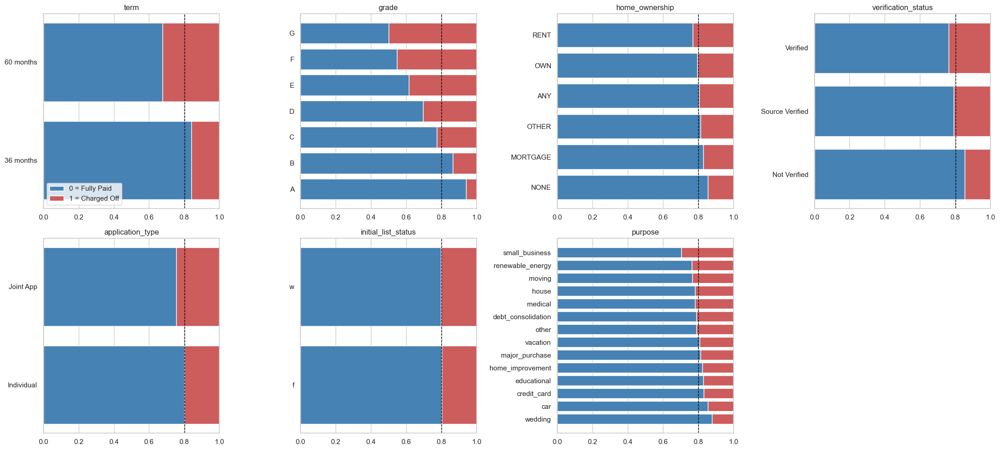
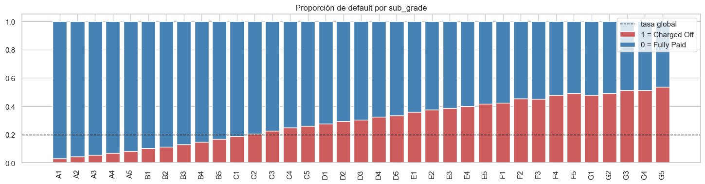
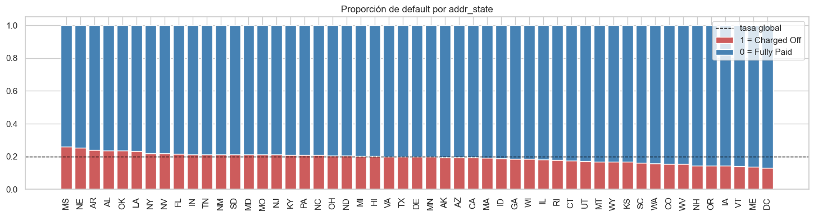
Prueba chi-cuadrado de independencia entre cada variable categórica y default. Como con \(n\) tan grande el p-value será casi siempre ≈ 0, se reporta también la V de Cramér, que mide la fuerza de la asociación en una escala de 0 a 1:
def v_cramer(x, y):
ct = pd.crosstab(x, y)
chi2, p, dof, _ = stats.chi2_contingency(ct)
n = ct.values.sum()
return chi2, p, dof, np.sqrt((chi2 / n) / (min(ct.shape) - 1))
filas = []
for c in cat_cols:
chi2, p, dof, v = v_cramer(df[c], df['default'])
filas.append({'variable': c, 'chi2': chi2, 'gl': dof, 'p-value': p, 'V de Cramer': v,
'independiente (p>=0.05)': 'sí' if p >= 0.05 else 'no'})
tabla_chi2 = pd.DataFrame(filas).set_index('variable').sort_values('V de Cramer', ascending=False)
tabla_chi2.round(4)
| chi2 | gl | p-value | V de Cramer | independiente (p>=0.05) | |
|---|---|---|---|---|---|
| variable | |||||
| sub_grade | 96525.3877 | 34 | 0.0 | 0.2679 | no |
| grade | 92284.2511 | 6 | 0.0 | 0.2619 | no |
| term | 41716.8301 | 1 | 0.0 | 0.1761 | no |
| verification_status | 11387.4390 | 2 | 0.0 | 0.0920 | no |
| home_ownership | 6743.1900 | 5 | 0.0 | 0.0708 | no |
| purpose | 4144.1960 | 13 | 0.0 | 0.0555 | no |
| addr_state | 3403.5833 | 50 | 0.0 | 0.0503 | no |
| application_type | 352.1009 | 1 | 0.0 | 0.0162 | no |
| initial_list_status | 71.3174 | 1 | 0.0 | 0.0073 | no |
Categorías con mayor tasa de default (solo categorías con al menos 1 000 préstamos, para que la tasa sea estable):
filas = []
for c, ct in tablas_ct.items():
for cat, fila in ct.iterrows():
filas.append({'variable': c, 'categoria': cat, 'n_total': fila['n_total'],
'tasa_default_%': fila['tasa_default_%']})
top_cat = pd.DataFrame(filas)
top_cat = top_cat[top_cat['n_total'] >= 1000].sort_values('tasa_default_%', ascending=False)
top_cat['veces la tasa global'] = (top_cat['tasa_default_%'] / tasa_global).round(2)
top_cat.head(15)
| variable | categoria | n_total | tasa_default_% | veces la tasa global | |
|---|---|---|---|---|---|
| 43 | sub_grade | G5 | 1110.0 | 53.60 | 2.69 |
| 41 | sub_grade | G3 | 1614.0 | 51.36 | 2.57 |
| 42 | sub_grade | G4 | 1280.0 | 51.17 | 2.56 |
| 8 | grade | G | 9132.0 | 49.93 | 2.50 |
| 38 | sub_grade | F5 | 3943.0 | 49.18 | 2.46 |
| 40 | sub_grade | G2 | 2131.0 | 49.13 | 2.46 |
| 37 | sub_grade | F4 | 4859.0 | 47.89 | 2.40 |
| 39 | sub_grade | G1 | 2997.0 | 47.85 | 2.40 |
| 35 | sub_grade | F2 | 7198.0 | 45.35 | 2.27 |
| 7 | grade | F | 32058.0 | 45.20 | 2.26 |
| 36 | sub_grade | F3 | 6088.0 | 45.07 | 2.26 |
| 34 | sub_grade | F1 | 9970.0 | 42.30 | 2.12 |
| 33 | sub_grade | E5 | 14417.0 | 41.77 | 2.09 |
| 32 | sub_grade | E4 | 15720.0 | 40.10 | 2.01 |
| 31 | sub_grade | E3 | 18387.0 | 38.71 | 1.94 |
Comentario de las variables categóricas vs default.
La prueba chi-cuadrado rechaza la independencia para todas las variables (p ≈ 0). Igual que con las numéricas, la fuerza de la asociación se mide con la V de Cramér:
grade/sub_grade(V ≈ 0.26-0.27): la tasa de default crece de forma casi monótona con el grado, desde 6.0 % en A hasta 49.9 % en G. En las subcategorías G3-G5 más de la mitad de los préstamos cae en default (2.6 veces la tasa global).term(V = 0.18): los préstamos a 60 meses tienen un default de 32.5 %, el doble que los de 36 meses (16.0 %).verification_status(V = 0.09): paradójicamente, los ingresos verificados tienen más default (23.9 %) que los no verificados (14.7 %). Lending Club verifica con más frecuencia a los solicitantes que considera más riesgosos, así que esta variable actúa como un indicador indirecto de riesgo.home_ownership(V = 0.07): RENT 23.2 % vs MORTGAGE 17.2 %.purpose(V = 0.06):small_business(29.7 %) es claramente el propósito más riesgoso;wedding(12.2 %) ycar(14.7 %) son los menos riesgosos.addr_state(V = 0.05): diferencias moderadas. MS, NE, AR, AL y OK superan el 23 %.
initial_list_status(V = 0.007) yapplication_type(V = 0.016) tienen asociación prácticamente nula con el default.Predictores categóricos más relevantes:
sub_grade/grade,term,verification_status,home_ownershipypurpose.
Relaciones entre variables independientes (multicolinealidad)#
Matriz de correlación de Pearson entre todas las variables numéricas:
corr = df[num_cols].corr(method='pearson')
plt.figure(figsize=(15, 12))
mascara = np.triu(np.ones_like(corr, dtype=bool))
sns.heatmap(corr, mask=mascara, annot=True, fmt='.2f', cmap='coolwarm', center=0,
vmin=-1, vmax=1, annot_kws={'size': 8}, linewidths=0.5)
plt.title('Matriz de correlación de Pearson (variables numéricas)')
plt.show()
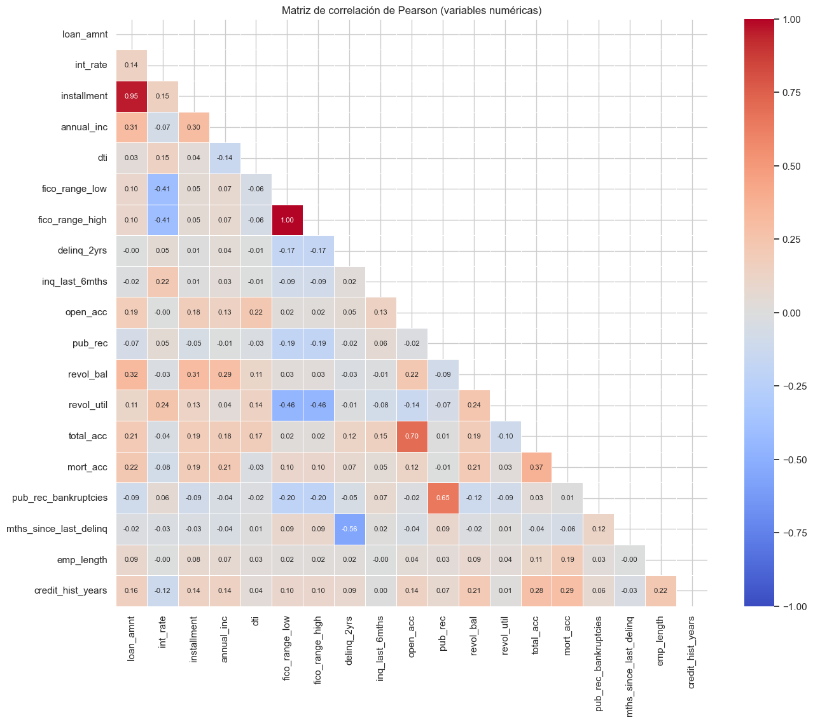
pares = []
for i in range(len(num_cols)):
for j in range(i + 1, len(num_cols)):
pares.append({'var_1': num_cols[i], 'var_2': num_cols[j], 'r': corr.iloc[i, j]})
pares = pd.DataFrame(pares)
pares['|r|'] = pares['r'].abs()
pares = pares.sort_values('|r|', ascending=False)
print('Pares con |r| > 0.7 (posible multicolinealidad):')
display(pares[pares['|r|'] > 0.7].round(3))
print('Siguientes pares más correlacionados:')
display(pares[pares['|r|'] <= 0.7].head(8).round(3))
print(f"Correlación fico_range_high vs int_rate: {corr.loc['fico_range_high', 'int_rate']:.3f}")
Pares con |r| > 0.7 (posible multicolinealidad):
| var_1 | var_2 | r | |r| | |
|---|---|---|---|---|
| 80 | fico_range_low | fico_range_high | 1.000 | 1.000 |
| 1 | loan_amnt | installment | 0.953 | 0.953 |
| 129 | open_acc | total_acc | 0.701 | 0.701 |
Siguientes pares más correlacionados:
| var_1 | var_2 | r | |r| | |
|---|---|---|---|---|
| 139 | pub_rec | pub_rec_bankruptcies | 0.650 | 0.650 |
| 113 | delinq_2yrs | mths_since_last_delinq | -0.556 | 0.556 |
| 86 | fico_range_low | revol_util | -0.460 | 0.460 |
| 98 | fico_range_high | revol_util | -0.460 | 0.460 |
| 21 | int_rate | fico_range_low | -0.405 | 0.405 |
| 22 | int_rate | fico_range_high | -0.405 | 0.405 |
| 156 | total_acc | mort_acc | 0.368 | 0.368 |
| 10 | loan_amnt | revol_bal | 0.318 | 0.318 |
Correlación fico_range_high vs int_rate: -0.405
V de Cramér entre pares de variables categóricas:
cramer = pd.DataFrame(np.eye(len(cat_cols)), index=cat_cols, columns=cat_cols)
for i in range(len(cat_cols)):
for j in range(i + 1, len(cat_cols)):
v = v_cramer(df[cat_cols[i]], df[cat_cols[j]])[3]
cramer.iloc[i, j] = cramer.iloc[j, i] = v
plt.figure(figsize=(10, 8))
sns.heatmap(cramer, annot=True, fmt='.2f', cmap='Reds', vmin=0, vmax=1, linewidths=0.5)
plt.title('V de Cramér entre variables categóricas')
plt.show()
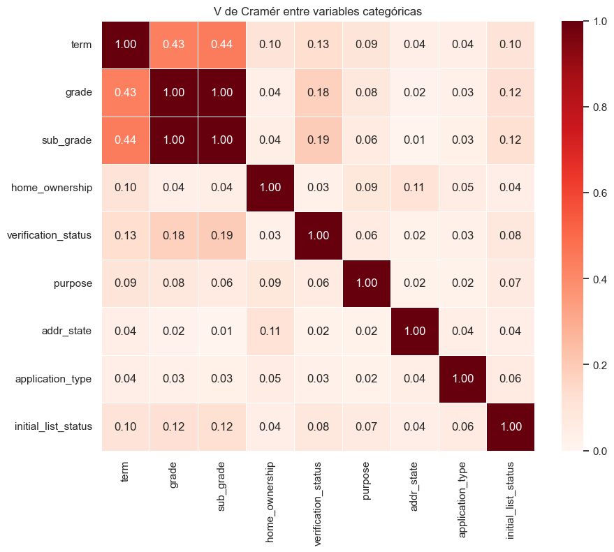
Redundancia entre grade / sub_grade e int_rate. Lending Club asigna la tasa de interés según el grado del préstamo. Para medir qué parte de la variación de int_rate explica grade se usa la razón de correlación \(\eta^2\) (varianza entre grupos / varianza total):
def eta_cuadrado(cat, y):
media_grupo = y.groupby(cat, observed=True).transform('mean')
return ((media_grupo - y.mean()) ** 2).sum() / ((y - y.mean()) ** 2).sum()
print(f"eta^2 int_rate ~ grade: {eta_cuadrado(df['grade'], df['int_rate']):.3f}")
print(f"eta^2 int_rate ~ sub_grade: {eta_cuadrado(df['sub_grade'], df['int_rate']):.3f}")
plt.figure(figsize=(10, 4.5))
sns.boxplot(data=df, x='grade', y='int_rate', color='steelblue', showfliers=False)
plt.title('int_rate por grade')
plt.show()
eta^2 int_rate ~ grade: 0.909
eta^2 int_rate ~ sub_grade: 0.955
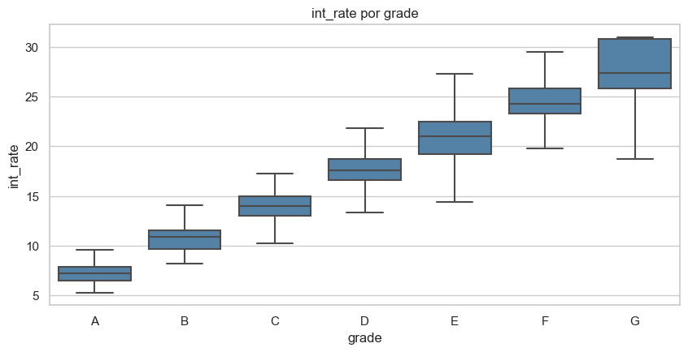
Comentario sobre multicolinealidad.
Pares con |r| > 0.7:
fico_range_lowyfico_range_high(r = 1.000): redundancia total, porque son los dos extremos del mismo rango de 4 puntos. Se conserva solofico_range_high(o su promedio).loan_amnteinstallment(r = 0.953): la cuota se calcula a partir del monto, la tasa y el plazo. Mantener ambas afectaría a la regresión logística y a LinearSVC, así que se recomienda eliminarinstallment.open_accytotal_acc(r = 0.701): justo en el límite. Se puede conservartotal_acc, eliminaropen_acco reemplazarlas por su razón.Correlaciones moderadas:
pub_recypub_rec_bankruptcies(0.65), porque las bancarrotas son un tipo de registro público; ydelinq_2yrsymths_since_last_delinq(−0.56).
fico_range_highvsint_rate: r = −0.405, correlación moderada y no redundante. Ambas aportan información propia.int_ratevsgrade/sub_grade: esta sí es una redundancia fuerte. El grado explica el 91 % de la varianza de la tasa (η² = 0.909) y el sub-grado el 95.5 % (η² = 0.955). En el boxplot las cajas por grado casi no se solapan, porque Lending Club fija la tasa según el sub-grado. Incluirint_rateysub_gradejuntos es casi repetir la misma variable. Se recomienda conservarint_rate, que es numérica, tiene la mayor correlación con el default y no genera 35 dummies, o biengradecon un tratamiento cuidadoso.Entre categóricas (V de Cramér):
gradeysub_gradetienen V = 1.00 (una se deduce de la otra).termse asocia moderadamente con el grado (V ≈ 0.43), porque los préstamos a 60 meses suelen tener grados peores. El resto de pares tiene V < 0.2, asociación débil.
Visualizaciones avanzadas#
Gráficos de densidad (KDE) por clase para las variables más relevantes (todos los datos). Cada curva está normalizada dentro de su clase (common_norm=False), de modo que se comparan las formas y no los tamaños de las clases.
fig, axes = plt.subplots(2, 3, figsize=(18, 9))
for ax, c in zip(axes.flat, ['int_rate', 'fico_range_high', 'dti', 'annual_inc', 'revol_util', 'loan_amnt']):
p1, p99 = df[c].quantile([0.01, 0.99])
sns.kdeplot(data=df, x=c, hue='default', common_norm=False, fill=True, alpha=0.3,
clip=(p1, p99), palette=['steelblue', 'indianred'], ax=ax)
ax.set_title(c)
plt.tight_layout()
plt.show()
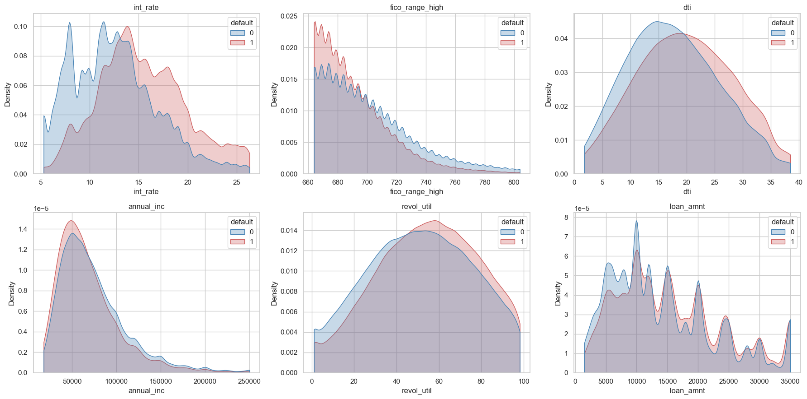
Pairplot y scatter matrix. Un pairplot con 1.3 millones de puntos por panel es ilegible y muy costoso de dibujar. El enunciado permite usar una muestra representativa para esta visualización, así que se toma una muestra estratificada por default de 5 000 préstamos (random_state=42), que conserva la proporción de clases. La muestra se usa solo para estos dos gráficos.
muestra = df.groupby('default').sample(frac=5000 / len(df), random_state=42)
print('Tamaño de la muestra:', len(muestra))
print('Proporción de default en la muestra:', round(muestra['default'].mean(), 4),
'| en el total:', round(df['default'].mean(), 4))
vars_pair = ['int_rate', 'fico_range_high', 'dti', 'annual_inc', 'loan_amnt']
g = sns.pairplot(muestra[vars_pair + ['default']], hue='default', corner=True,
palette=['steelblue', 'indianred'], plot_kws={'s': 8, 'alpha': 0.5})
g.fig.suptitle('Pairplot (muestra estratificada de 5 000 préstamos)', y=1.02)
plt.show()
Tamaño de la muestra: 5000
Proporción de default en la muestra: 0.1996 | en el total: 0.1996
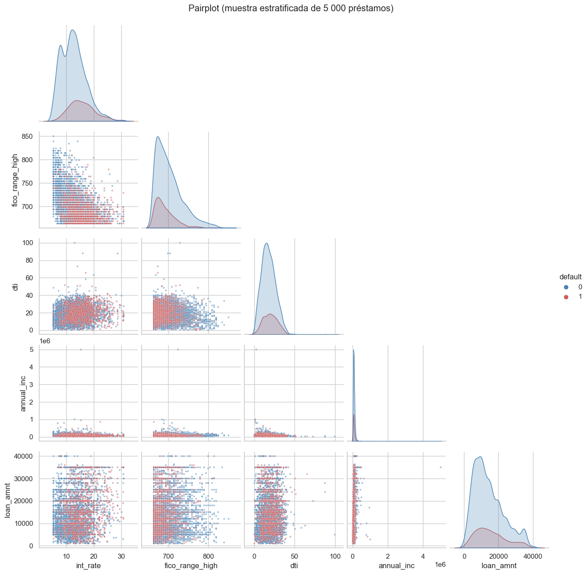
vars_sm = ['int_rate', 'fico_range_high', 'dti', 'revol_util', 'credit_hist_years']
sm = muestra[vars_sm + ['default']].dropna() # scatter_matrix no admite nulos al colorear
colores = sm['default'].map({0: 'steelblue', 1: 'indianred'})
pd.plotting.scatter_matrix(sm[vars_sm], c=colores, figsize=(13, 13), alpha=0.4, s=8, diagonal='hist')
plt.suptitle('Scatter matrix (rojo = default)', y=0.92)
plt.show()
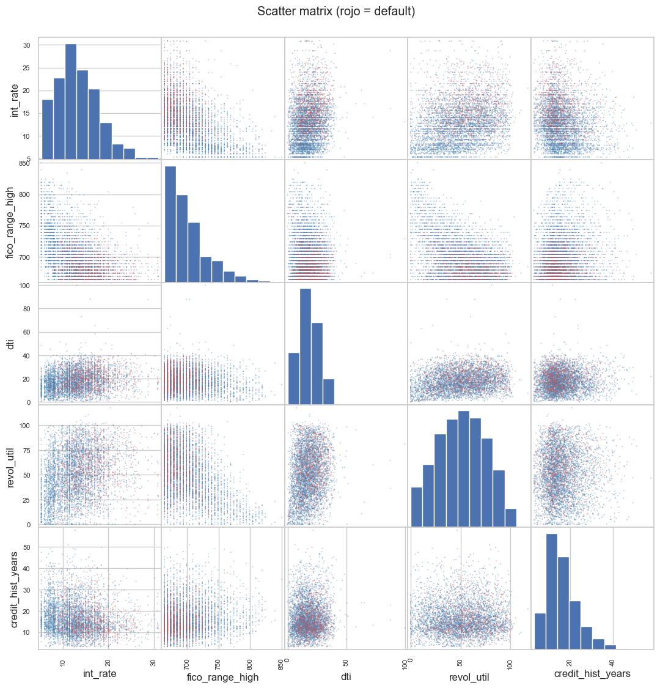
Comentario de las visualizaciones avanzadas.
KDE por clase:
La curva de
int_ratepara default está claramente desplazada a la derecha y la defico_range_higha la izquierda. Son las dos variables con mayor poder discriminante.En
dtiyrevol_utilel desplazamiento es leve.En
annual_incyloan_amntlas curvas casi se superponen.En ninguna variable se separan las dos distribuciones: el solapamiento es grande, lo que confirma que el problema es difícil de clasificar.
Pairplot y scatter matrix (muestra estratificada de 5 000):
Los puntos rojos (default) y azules están mezclados en todos los pares de variables; no hay regiones claramente separables.
La estructura más visible es la relación negativa entre
int_rateyfico_range_high: los FICO altos solo aparecen con tasas bajas. Las bandas horizontales se deben a que el FICO toma valores discretos (saltos de 5 puntos), y los préstamos en default (rojo) se concentran en la zona de FICO bajo y tasa alta.annual_incsigue dominada por pocos valores extremos, lo que refuerza la necesidad de la transformación logarítmica.No se observan patrones no lineales fuertes. Aun así, los modelos de árboles podrían capturar interacciones que estos gráficos 2D no muestran.
9.10.4.1.4. Valores faltantes (análisis detallado)#
Número y porcentaje de nulos por columna en los 1.3 millones de préstamos finalizados, para las 151 columnas del archivo (conteos acumulados durante la lectura por bloques):
tabla_nulos = info_completo[['nulos', '% nulos']].sort_values('% nulos', ascending=False)
tabla_nulos['rango'] = pd.cut(tabla_nulos['% nulos'], [-0.01, 0, 5, 30, 70, 100],
labels=['0 %', '(0, 5] %', '(5, 30] %', '(30, 70] %', '> 70 %'])
print(tabla_nulos['rango'].value_counts().sort_index())
with pd.option_context('display.max_rows', 200):
display(tabla_nulos)
rango
0 % 52
(0, 5] % 15
(5, 30] % 26
(30, 70] % 16
> 70 % 42
Name: count, dtype: int64
| nulos | % nulos | rango | |
|---|---|---|---|
| next_pymnt_d | 1345310 | 100.00 | > 70 % |
| member_id | 1345310 | 100.00 | > 70 % |
| orig_projected_additional_accrued_interest | 1341551 | 99.72 | > 70 % |
| hardship_start_date | 1339556 | 99.57 | > 70 % |
| hardship_length | 1339556 | 99.57 | > 70 % |
| hardship_type | 1339556 | 99.57 | > 70 % |
| hardship_reason | 1339556 | 99.57 | > 70 % |
| hardship_status | 1339556 | 99.57 | > 70 % |
| deferral_term | 1339556 | 99.57 | > 70 % |
| hardship_amount | 1339556 | 99.57 | > 70 % |
| hardship_end_date | 1339556 | 99.57 | > 70 % |
| payment_plan_start_date | 1339556 | 99.57 | > 70 % |
| hardship_dpd | 1339556 | 99.57 | > 70 % |
| hardship_loan_status | 1339556 | 99.57 | > 70 % |
| hardship_payoff_balance_amount | 1339556 | 99.57 | > 70 % |
| hardship_last_payment_amount | 1339556 | 99.57 | > 70 % |
| sec_app_mths_since_last_major_derog | 1338665 | 99.51 | > 70 % |
| sec_app_revol_util | 1327008 | 98.64 | > 70 % |
| sec_app_collections_12_mths_ex_med | 1326680 | 98.62 | > 70 % |
| sec_app_num_rev_accts | 1326680 | 98.62 | > 70 % |
| sec_app_open_act_il | 1326680 | 98.62 | > 70 % |
| sec_app_chargeoff_within_12_mths | 1326680 | 98.62 | > 70 % |
| sec_app_earliest_cr_line | 1326680 | 98.62 | > 70 % |
| sec_app_open_acc | 1326680 | 98.62 | > 70 % |
| sec_app_fico_range_high | 1326680 | 98.62 | > 70 % |
| sec_app_inq_last_6mths | 1326680 | 98.62 | > 70 % |
| sec_app_fico_range_low | 1326680 | 98.62 | > 70 % |
| revol_bal_joint | 1326681 | 98.62 | > 70 % |
| sec_app_mort_acc | 1326680 | 98.62 | > 70 % |
| verification_status_joint | 1319715 | 98.10 | > 70 % |
| dti_joint | 1319513 | 98.08 | > 70 % |
| annual_inc_joint | 1319510 | 98.08 | > 70 % |
| settlement_term | 1312034 | 97.53 | > 70 % |
| settlement_date | 1312034 | 97.53 | > 70 % |
| debt_settlement_flag_date | 1312034 | 97.53 | > 70 % |
| settlement_status | 1312034 | 97.53 | > 70 % |
| settlement_percentage | 1312034 | 97.53 | > 70 % |
| settlement_amount | 1312034 | 97.53 | > 70 % |
| desc | 1221780 | 90.82 | > 70 % |
| mths_since_last_record | 1116755 | 83.01 | > 70 % |
| mths_since_recent_bc_dlq | 1026290 | 76.29 | > 70 % |
| mths_since_last_major_derog | 991560 | 73.70 | > 70 % |
| mths_since_recent_revol_delinq | 895348 | 66.55 | (30, 70] % |
| il_util | 880294 | 65.43 | (30, 70] % |
| mths_since_rcnt_il | 821928 | 61.10 | (30, 70] % |
| total_cu_tl | 807713 | 60.04 | (30, 70] % |
| all_util | 807765 | 60.04 | (30, 70] % |
| max_bal_bc | 807712 | 60.04 | (30, 70] % |
| inq_last_12m | 807713 | 60.04 | (30, 70] % |
| open_rv_12m | 807712 | 60.04 | (30, 70] % |
| total_bal_il | 807712 | 60.04 | (30, 70] % |
| open_il_24m | 807712 | 60.04 | (30, 70] % |
| open_il_12m | 807712 | 60.04 | (30, 70] % |
| open_act_il | 807712 | 60.04 | (30, 70] % |
| open_acc_6m | 807713 | 60.04 | (30, 70] % |
| open_rv_24m | 807712 | 60.04 | (30, 70] % |
| inq_fi | 807712 | 60.04 | (30, 70] % |
| mths_since_last_delinq | 678743 | 50.45 | (30, 70] % |
| mths_since_recent_inq | 174071 | 12.94 | (5, 30] % |
| num_tl_120dpd_2m | 117401 | 8.73 | (5, 30] % |
| mo_sin_old_il_acct | 105575 | 7.85 | (5, 30] % |
| emp_title | 85785 | 6.38 | (5, 30] % |
| emp_length | 78511 | 5.84 | (5, 30] % |
| pct_tl_nvr_dlq | 67681 | 5.03 | (5, 30] % |
| mo_sin_old_rev_tl_op | 67528 | 5.02 | (5, 30] % |
| num_accts_ever_120_pd | 67527 | 5.02 | (5, 30] % |
| avg_cur_bal | 67549 | 5.02 | (5, 30] % |
| num_actv_bc_tl | 67527 | 5.02 | (5, 30] % |
| num_actv_rev_tl | 67527 | 5.02 | (5, 30] % |
| num_bc_tl | 67527 | 5.02 | (5, 30] % |
| num_il_tl | 67527 | 5.02 | (5, 30] % |
| total_rev_hi_lim | 67527 | 5.02 | (5, 30] % |
| num_tl_30dpd | 67527 | 5.02 | (5, 30] % |
| mo_sin_rcnt_tl | 67527 | 5.02 | (5, 30] % |
| num_op_rev_tl | 67527 | 5.02 | (5, 30] % |
| num_rev_accts | 67528 | 5.02 | (5, 30] % |
| num_rev_tl_bal_gt_0 | 67527 | 5.02 | (5, 30] % |
| num_tl_90g_dpd_24m | 67527 | 5.02 | (5, 30] % |
| num_tl_op_past_12m | 67527 | 5.02 | (5, 30] % |
| tot_hi_cred_lim | 67527 | 5.02 | (5, 30] % |
| tot_cur_bal | 67527 | 5.02 | (5, 30] % |
| tot_coll_amt | 67527 | 5.02 | (5, 30] % |
| total_il_high_credit_limit | 67527 | 5.02 | (5, 30] % |
| mo_sin_rcnt_rev_tl_op | 67528 | 5.02 | (5, 30] % |
| bc_util | 61912 | 4.60 | (0, 5] % |
| percent_bc_gt_75 | 61555 | 4.58 | (0, 5] % |
| bc_open_to_buy | 61143 | 4.54 | (0, 5] % |
| mths_since_recent_bc | 60221 | 4.48 | (0, 5] % |
| num_bc_sats | 55841 | 4.15 | (0, 5] % |
| num_sats | 55841 | 4.15 | (0, 5] % |
| mort_acc | 47281 | 3.51 | (0, 5] % |
| total_bc_limit | 47281 | 3.51 | (0, 5] % |
| total_bal_ex_mort | 47281 | 3.51 | (0, 5] % |
| acc_open_past_24mths | 47281 | 3.51 | (0, 5] % |
| title | 16660 | 1.24 | (0, 5] % |
| last_pymnt_d | 2313 | 0.17 | (0, 5] % |
| revol_util | 857 | 0.06 | (0, 5] % |
| pub_rec_bankruptcies | 697 | 0.05 | (0, 5] % |
| dti | 374 | 0.03 | (0, 5] % |
| annual_inc | 0 | 0.00 | 0 % |
| loan_amnt | 0 | 0.00 | 0 % |
| addr_state | 0 | 0.00 | 0 % |
| zip_code | 1 | 0.00 | 0 % |
| hardship_flag | 0 | 0.00 | 0 % |
| funded_amnt | 0 | 0.00 | 0 % |
| pymnt_plan | 0 | 0.00 | 0 % |
| loan_status | 0 | 0.00 | 0 % |
| funded_amnt_inv | 0 | 0.00 | 0 % |
| url | 0 | 0.00 | 0 % |
| verification_status | 0 | 0.00 | 0 % |
| term | 0 | 0.00 | 0 % |
| int_rate | 0 | 0.00 | 0 % |
| debt_settlement_flag | 0 | 0.00 | 0 % |
| earliest_cr_line | 0 | 0.00 | 0 % |
| purpose | 0 | 0.00 | 0 % |
| disbursement_method | 0 | 0.00 | 0 % |
| issue_d | 0 | 0.00 | 0 % |
| installment | 0 | 0.00 | 0 % |
| grade | 0 | 0.00 | 0 % |
| sub_grade | 0 | 0.00 | 0 % |
| home_ownership | 0 | 0.00 | 0 % |
| delinq_2yrs | 0 | 0.00 | 0 % |
| application_type | 0 | 0.00 | 0 % |
| fico_range_low | 0 | 0.00 | 0 % |
| fico_range_high | 0 | 0.00 | 0 % |
| collections_12_mths_ex_med | 56 | 0.00 | 0 % |
| acc_now_delinq | 0 | 0.00 | 0 % |
| last_fico_range_low | 0 | 0.00 | 0 % |
| last_fico_range_high | 0 | 0.00 | 0 % |
| last_credit_pull_d | 55 | 0.00 | 0 % |
| last_pymnt_amnt | 0 | 0.00 | 0 % |
| collection_recovery_fee | 0 | 0.00 | 0 % |
| recoveries | 0 | 0.00 | 0 % |
| total_rec_late_fee | 0 | 0.00 | 0 % |
| total_rec_int | 0 | 0.00 | 0 % |
| total_rec_prncp | 0 | 0.00 | 0 % |
| total_pymnt_inv | 0 | 0.00 | 0 % |
| total_pymnt | 0 | 0.00 | 0 % |
| out_prncp_inv | 0 | 0.00 | 0 % |
| out_prncp | 0 | 0.00 | 0 % |
| chargeoff_within_12_mths | 56 | 0.00 | 0 % |
| delinq_amnt | 0 | 0.00 | 0 % |
| initial_list_status | 0 | 0.00 | 0 % |
| total_acc | 0 | 0.00 | 0 % |
| policy_code | 0 | 0.00 | 0 % |
| tax_liens | 39 | 0.00 | 0 % |
| revol_bal | 0 | 0.00 | 0 % |
| pub_rec | 0 | 0.00 | 0 % |
| open_acc | 0 | 0.00 | 0 % |
| inq_last_6mths | 1 | 0.00 | 0 % |
| id | 0 | 0.00 | 0 % |
con_nulos = tabla_nulos[tabla_nulos['nulos'] > 0]['% nulos'].sort_values()
plt.figure(figsize=(10, 22))
plt.barh(con_nulos.index, con_nulos.values,
color=np.where(con_nulos.values > 70, 'indianred',
np.where(con_nulos.values > 30, 'orange', 'steelblue')))
plt.axvline(30, color='orange', ls='--', label='30 %')
plt.axvline(70, color='red', ls='--', label='70 %')
plt.xlabel('% de nulos')
plt.title('Porcentaje de nulos por columna (préstamos finalizados)')
plt.legend()
plt.margins(y=0.005)
plt.show()
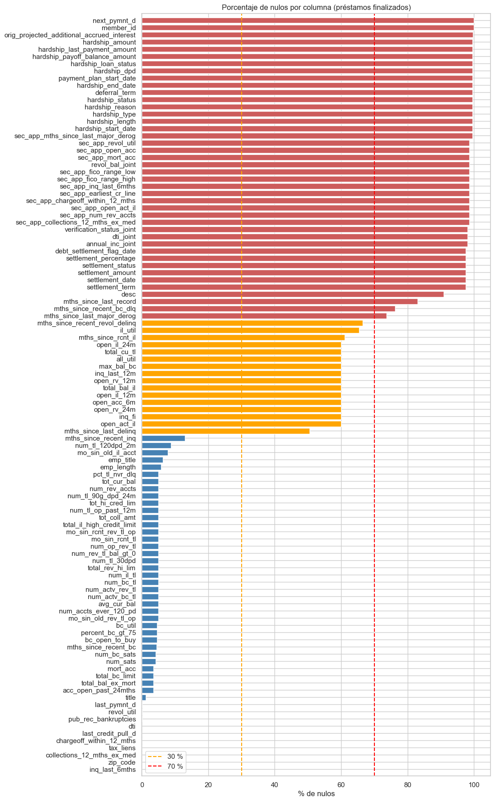
Mapa de calor de nulos por año de emisión. Muestra el % de nulos de cada columna (filas del mapa) en cada año (columnas del mapa). Así se ve si los faltantes son sistemáticos, por ejemplo variables que Lending Club empezó a registrar en cierto año.
pct_anio = (100 * nulos_anio.div(filas_anio, axis=0)).T
pct_anio = pct_anio.loc[con_nulos.index[::-1]]
plt.figure(figsize=(12, 24))
sns.heatmap(pct_anio, cmap='viridis_r', vmin=0, vmax=100, cbar_kws={'label': '% nulos'})
plt.title('% de nulos por columna y año de emisión')
plt.xlabel('año de emisión')
plt.show()
print('Préstamos finalizados por año:')
print(filas_anio.to_string())
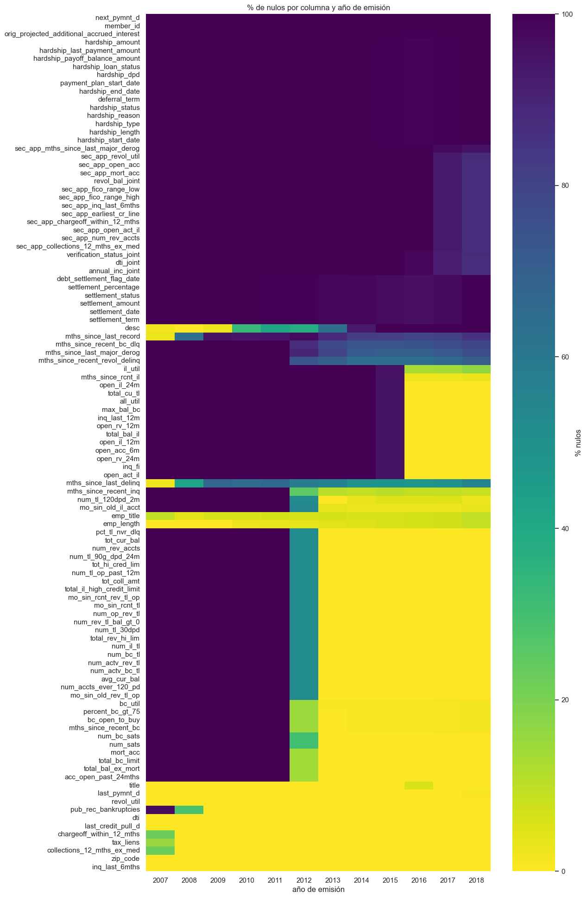
Préstamos finalizados por año:
issue_d
2007 251
2008 1562
2009 4716
2010 11536
2011 21721
2012 53367
2013 134804
2014 223102
2015 375545
2016 293095
2017 169300
2018 56311
¿Se concentran los nulos en ciertas filas? Distribución del número de columnas nulas por fila, primero sobre las 151 columnas y luego sobre las variables del EDA:
fig, axes = plt.subplots(1, 2, figsize=(18, 4.5))
npf = nulos_por_fila.sort_index()
axes[0].bar(npf.index, npf.values, color='steelblue')
axes[0].set_title('Nulos por fila (151 columnas)')
axes[0].set_xlabel('número de columnas nulas en la fila')
axes[0].set_ylabel('número de filas')
nulos_fila_eda = df[num_cols + cat_cols].isna().sum(axis=1).value_counts().sort_index()
axes[1].bar(nulos_fila_eda.index.astype(str), nulos_fila_eda.values, color='darkorange')
axes[1].set_title('Nulos por fila (variables del EDA)')
axes[1].set_xlabel('número de columnas nulas en la fila')
plt.tight_layout()
plt.show()
print('Filas según número de nulos (variables del EDA):')
print(pd.DataFrame({'filas': nulos_fila_eda, '%': (100 * nulos_fila_eda / len(df)).round(3)}))
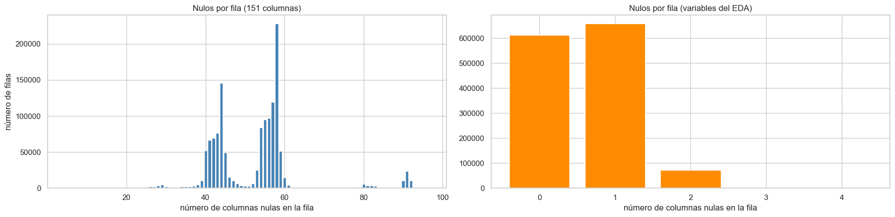
Filas según número de nulos (variables del EDA):
filas %
0 613054 45.570
1 659256 49.004
2 71796 5.337
3 1200 0.089
4 4 0.000
Relación de los faltantes con default (¿MCAR?). Si los faltantes fueran completamente al azar (MCAR), la tasa de default debería ser la misma en las filas donde la variable falta y en las filas donde no falta. Para cada columna con nulos se construye la tabla 2×2 (nulo / no nulo × default) y se aplica la prueba chi-cuadrado:
\(H_0\): el hecho de que falte el dato es independiente de
default, lo que es consistente con MCAR.p < 0.05: se rechaza \(H_0\). El faltante no es MCAR y el hecho de que falte ya es informativo.
Se calcula para todas las columnas con nulos del archivo, usando los conteos acumulados en la lectura.
n_def = df['default'].sum()
filas = []
for c in con_nulos.index:
if nulos_fin[c] == n_fin: # 100 % nulos: no hay nada que comparar
continue
nulo_def = nulos_fin_default[c]
nulo_nodef = nulos_fin[c] - nulo_def
tabla = np.array([[nulo_nodef, nulo_def],
[(n_fin - n_def) - nulo_nodef, n_def - nulo_def]])
chi2, p, _, _ = stats.chi2_contingency(tabla)
filas.append({'variable': c, '% nulos': 100 * nulos_fin[c] / n_fin,
'tasa_default si nulo %': 100 * nulo_def / nulos_fin[c],
'tasa_default si no nulo %': 100 * (n_def - nulo_def) / (n_fin - nulos_fin[c]),
'chi2': chi2, 'p-value': p})
tabla_mcar = pd.DataFrame(filas).set_index('variable')
tabla_mcar['dif (pp)'] = tabla_mcar['tasa_default si nulo %'] - tabla_mcar['tasa_default si no nulo %']
tabla_mcar['compatible con MCAR'] = np.where(tabla_mcar['p-value'] >= 0.05, 'sí', 'no')
print(tabla_mcar['compatible con MCAR'].value_counts())
with pd.option_context('display.max_rows', 200):
display(tabla_mcar.round(4))
compatible con MCAR
no 95
sí 8
Name: count, dtype: int64
| % nulos | tasa_default si nulo % | tasa_default si no nulo % | chi2 | p-value | dif (pp) | compatible con MCAR | |
|---|---|---|---|---|---|---|---|
| variable | |||||||
| inq_last_6mths | 0.0001 | 0.0000 | 19.9626 | 0.0000 | 1.0000 | -19.9626 | sí |
| zip_code | 0.0001 | 0.0000 | 19.9626 | 0.0000 | 1.0000 | -19.9626 | sí |
| collections_12_mths_ex_med | 0.0042 | 10.7143 | 19.9630 | 2.4470 | 0.1177 | -9.2487 | sí |
| tax_liens | 0.0029 | 2.5641 | 19.9631 | 6.3402 | 0.0118 | -17.3990 | no |
| chargeoff_within_12_mths | 0.0042 | 10.7143 | 19.9630 | 2.4470 | 0.1177 | -9.2487 | sí |
| last_credit_pull_d | 0.0041 | 18.1818 | 19.9627 | 0.0262 | 0.8715 | -1.7809 | sí |
| dti | 0.0278 | 18.9840 | 19.9629 | 0.1672 | 0.6826 | -0.9789 | sí |
| pub_rec_bankruptcies | 0.0518 | 16.9297 | 19.9642 | 3.8272 | 0.0504 | -3.0345 | sí |
| revol_util | 0.0637 | 21.0035 | 19.9619 | 0.5181 | 0.4716 | 1.0416 | sí |
| last_pymnt_d | 0.1719 | 100.0000 | 19.8248 | 9284.6152 | 0.0000 | 80.1752 | no |
| title | 1.2384 | 29.0096 | 19.8492 | 863.5686 | 0.0000 | 9.1604 | no |
| acc_open_past_24mths | 3.5145 | 14.5640 | 20.1593 | 893.5316 | 0.0000 | -5.5953 | no |
| total_bal_ex_mort | 3.5145 | 14.5640 | 20.1593 | 893.5316 | 0.0000 | -5.5953 | no |
| total_bc_limit | 3.5145 | 14.5640 | 20.1593 | 893.5316 | 0.0000 | -5.5953 | no |
| mort_acc | 3.5145 | 14.5640 | 20.1593 | 893.5316 | 0.0000 | -5.5953 | no |
| num_sats | 4.1508 | 14.7992 | 20.1862 | 971.8149 | 0.0000 | -5.3871 | no |
| num_bc_sats | 4.1508 | 14.7992 | 20.1862 | 971.8149 | 0.0000 | -5.3871 | no |
| mths_since_recent_bc | 4.4764 | 15.9878 | 20.1489 | 623.1363 | 0.0000 | -4.1611 | no |
| bc_open_to_buy | 4.5449 | 16.0771 | 20.1476 | 605.0044 | 0.0000 | -4.0705 | no |
| percent_bc_gt_75 | 4.5755 | 16.0962 | 20.1480 | 603.2990 | 0.0000 | -4.0518 | no |
| bc_util | 4.6021 | 16.1471 | 20.1467 | 591.0774 | 0.0000 | -3.9996 | no |
| mo_sin_old_rev_tl_op | 5.0195 | 15.2811 | 20.2100 | 974.9442 | 0.0000 | -4.9290 | no |
| num_accts_ever_120_pd | 5.0194 | 15.2798 | 20.2101 | 975.4517 | 0.0000 | -4.9303 | no |
| avg_cur_bal | 5.0211 | 15.2852 | 20.2099 | 973.5425 | 0.0000 | -4.9247 | no |
| num_actv_bc_tl | 5.0194 | 15.2798 | 20.2101 | 975.4517 | 0.0000 | -4.9303 | no |
| num_actv_rev_tl | 5.0194 | 15.2798 | 20.2101 | 975.4517 | 0.0000 | -4.9303 | no |
| num_bc_tl | 5.0194 | 15.2798 | 20.2101 | 975.4517 | 0.0000 | -4.9303 | no |
| num_il_tl | 5.0194 | 15.2798 | 20.2101 | 975.4517 | 0.0000 | -4.9303 | no |
| total_rev_hi_lim | 5.0194 | 15.2798 | 20.2101 | 975.4517 | 0.0000 | -4.9303 | no |
| num_tl_30dpd | 5.0194 | 15.2798 | 20.2101 | 975.4517 | 0.0000 | -4.9303 | no |
| num_rev_tl_bal_gt_0 | 5.0194 | 15.2798 | 20.2101 | 975.4517 | 0.0000 | -4.9303 | no |
| num_op_rev_tl | 5.0194 | 15.2798 | 20.2101 | 975.4517 | 0.0000 | -4.9303 | no |
| mo_sin_rcnt_tl | 5.0194 | 15.2798 | 20.2101 | 975.4517 | 0.0000 | -4.9303 | no |
| mo_sin_rcnt_rev_tl_op | 5.0195 | 15.2811 | 20.2100 | 974.9442 | 0.0000 | -4.9290 | no |
| total_il_high_credit_limit | 5.0194 | 15.2798 | 20.2101 | 975.4517 | 0.0000 | -4.9303 | no |
| tot_coll_amt | 5.0194 | 15.2798 | 20.2101 | 975.4517 | 0.0000 | -4.9303 | no |
| num_tl_op_past_12m | 5.0194 | 15.2798 | 20.2101 | 975.4517 | 0.0000 | -4.9303 | no |
| tot_hi_cred_lim | 5.0194 | 15.2798 | 20.2101 | 975.4517 | 0.0000 | -4.9303 | no |
| num_tl_90g_dpd_24m | 5.0194 | 15.2798 | 20.2101 | 975.4517 | 0.0000 | -4.9303 | no |
| num_rev_accts | 5.0195 | 15.2796 | 20.2101 | 975.5612 | 0.0000 | -4.9305 | no |
| tot_cur_bal | 5.0194 | 15.2798 | 20.2101 | 975.4517 | 0.0000 | -4.9303 | no |
| pct_tl_nvr_dlq | 5.0309 | 15.2776 | 20.2108 | 978.7398 | 0.0000 | -4.9332 | no |
| emp_length | 5.8359 | 26.9134 | 19.5318 | 2520.7329 | 0.0000 | 7.3816 | no |
| emp_title | 6.3766 | 26.1829 | 19.5390 | 2218.4840 | 0.0000 | 6.6439 | no |
| mo_sin_old_il_acct | 7.8476 | 17.5487 | 20.1682 | 417.6669 | 0.0000 | -2.6195 | no |
| num_tl_120dpd_2m | 8.7267 | 20.3763 | 19.9231 | 13.7501 | 0.0002 | 0.4533 | no |
| mths_since_recent_inq | 12.9391 | 14.8790 | 20.7181 | 3233.6343 | 0.0000 | -5.8392 | no |
| mths_since_last_delinq | 50.4525 | 19.2624 | 20.6756 | 420.3151 | 0.0000 | -1.4133 | no |
| open_act_il | 60.0391 | 18.3804 | 22.3397 | 3166.5409 | 0.0000 | -3.9593 | no |
| inq_fi | 60.0391 | 18.3804 | 22.3397 | 3166.5409 | 0.0000 | -3.9593 | no |
| open_rv_24m | 60.0391 | 18.3804 | 22.3397 | 3166.5409 | 0.0000 | -3.9593 | no |
| open_acc_6m | 60.0392 | 18.3804 | 22.3398 | 3166.6418 | 0.0000 | -3.9594 | no |
| open_il_12m | 60.0391 | 18.3804 | 22.3397 | 3166.5409 | 0.0000 | -3.9593 | no |
| total_bal_il | 60.0391 | 18.3804 | 22.3397 | 3166.5409 | 0.0000 | -3.9593 | no |
| open_rv_12m | 60.0391 | 18.3804 | 22.3397 | 3166.5409 | 0.0000 | -3.9593 | no |
| inq_last_12m | 60.0392 | 18.3804 | 22.3398 | 3166.6418 | 0.0000 | -3.9594 | no |
| max_bal_bc | 60.0391 | 18.3804 | 22.3397 | 3166.5409 | 0.0000 | -3.9593 | no |
| all_util | 60.0430 | 18.3803 | 22.3403 | 3167.4286 | 0.0000 | -3.9599 | no |
| total_cu_tl | 60.0392 | 18.3804 | 22.3398 | 3166.6418 | 0.0000 | -3.9594 | no |
| open_il_24m | 60.0391 | 18.3804 | 22.3397 | 3166.5409 | 0.0000 | -3.9593 | no |
| mths_since_rcnt_il | 61.0958 | 18.5225 | 22.2241 | 2741.9146 | 0.0000 | -3.7016 | no |
| il_util | 65.4343 | 18.5915 | 22.5581 | 2996.2012 | 0.0000 | -3.9666 | no |
| mths_since_recent_revol_delinq | 66.5533 | 19.6031 | 20.6780 | 216.4748 | 0.0000 | -1.0749 | no |
| mths_since_last_major_derog | 73.7049 | 19.2567 | 21.9412 | 1175.8160 | 0.0000 | -2.6845 | no |
| mths_since_recent_bc_dlq | 76.2865 | 19.6452 | 20.9836 | 272.7725 | 0.0000 | -1.3384 | no |
| mths_since_last_record | 83.0110 | 19.3949 | 22.7363 | 1325.5582 | 0.0000 | -3.3414 | no |
| desc | 90.8177 | 20.4312 | 15.3283 | 1828.0726 | 0.0000 | 5.1029 | no |
| settlement_term | 97.5265 | 17.9331 | 99.9850 | 136742.8349 | 0.0000 | -82.0519 | no |
| settlement_date | 97.5265 | 17.9331 | 99.9850 | 136742.8349 | 0.0000 | -82.0519 | no |
| settlement_amount | 97.5265 | 17.9331 | 99.9850 | 136742.8349 | 0.0000 | -82.0519 | no |
| settlement_status | 97.5265 | 17.9331 | 99.9850 | 136742.8349 | 0.0000 | -82.0519 | no |
| settlement_percentage | 97.5265 | 17.9331 | 99.9850 | 136742.8349 | 0.0000 | -82.0519 | no |
| debt_settlement_flag_date | 97.5265 | 17.9331 | 99.9850 | 136742.8349 | 0.0000 | -82.0519 | no |
| annual_inc_joint | 98.0822 | 19.8721 | 24.5891 | 352.1009 | 0.0000 | -4.7170 | no |
| dti_joint | 98.0824 | 19.8721 | 24.5920 | 352.4947 | 0.0000 | -4.7199 | no |
| verification_status_joint | 98.0975 | 19.8710 | 24.6845 | 363.7985 | 0.0000 | -4.8135 | no |
| sec_app_collections_12_mths_ex_med | 98.6152 | 19.8951 | 24.7719 | 273.1687 | 0.0000 | -4.8768 | no |
| sec_app_num_rev_accts | 98.6152 | 19.8951 | 24.7719 | 273.1687 | 0.0000 | -4.8768 | no |
| sec_app_open_act_il | 98.6152 | 19.8951 | 24.7719 | 273.1687 | 0.0000 | -4.8768 | no |
| sec_app_chargeoff_within_12_mths | 98.6152 | 19.8951 | 24.7719 | 273.1687 | 0.0000 | -4.8768 | no |
| sec_app_earliest_cr_line | 98.6152 | 19.8951 | 24.7719 | 273.1687 | 0.0000 | -4.8768 | no |
| sec_app_inq_last_6mths | 98.6152 | 19.8951 | 24.7719 | 273.1687 | 0.0000 | -4.8768 | no |
| sec_app_fico_range_high | 98.6152 | 19.8951 | 24.7719 | 273.1687 | 0.0000 | -4.8768 | no |
| sec_app_fico_range_low | 98.6152 | 19.8951 | 24.7719 | 273.1687 | 0.0000 | -4.8768 | no |
| revol_bal_joint | 98.6153 | 19.8951 | 24.7732 | 273.3049 | 0.0000 | -4.8781 | no |
| sec_app_mort_acc | 98.6152 | 19.8951 | 24.7719 | 273.1687 | 0.0000 | -4.8768 | no |
| sec_app_open_acc | 98.6152 | 19.8951 | 24.7719 | 273.1687 | 0.0000 | -4.8768 | no |
| sec_app_revol_util | 98.6396 | 19.9007 | 24.4509 | 233.6501 | 0.0000 | -4.5502 | no |
| sec_app_mths_since_last_major_derog | 99.5061 | 19.9111 | 30.3386 | 449.3287 | 0.0000 | -10.4275 | no |
| hardship_start_date | 99.5723 | 19.7453 | 70.5596 | 9255.9595 | 0.0000 | -50.8143 | no |
| hardship_length | 99.5723 | 19.7453 | 70.5596 | 9255.9595 | 0.0000 | -50.8143 | no |
| hardship_type | 99.5723 | 19.7453 | 70.5596 | 9255.9595 | 0.0000 | -50.8143 | no |
| hardship_reason | 99.5723 | 19.7453 | 70.5596 | 9255.9595 | 0.0000 | -50.8143 | no |
| hardship_status | 99.5723 | 19.7453 | 70.5596 | 9255.9595 | 0.0000 | -50.8143 | no |
| deferral_term | 99.5723 | 19.7453 | 70.5596 | 9255.9595 | 0.0000 | -50.8143 | no |
| hardship_end_date | 99.5723 | 19.7453 | 70.5596 | 9255.9595 | 0.0000 | -50.8143 | no |
| payment_plan_start_date | 99.5723 | 19.7453 | 70.5596 | 9255.9595 | 0.0000 | -50.8143 | no |
| hardship_dpd | 99.5723 | 19.7453 | 70.5596 | 9255.9595 | 0.0000 | -50.8143 | no |
| hardship_loan_status | 99.5723 | 19.7453 | 70.5596 | 9255.9595 | 0.0000 | -50.8143 | no |
| hardship_payoff_balance_amount | 99.5723 | 19.7453 | 70.5596 | 9255.9595 | 0.0000 | -50.8143 | no |
| hardship_last_payment_amount | 99.5723 | 19.7453 | 70.5596 | 9255.9595 | 0.0000 | -50.8143 | no |
| hardship_amount | 99.5723 | 19.7453 | 70.5596 | 9255.9595 | 0.0000 | -50.8143 | no |
| orig_projected_additional_accrued_interest | 99.7206 | 19.8578 | 57.3823 | 3301.1738 | 0.0000 | -37.5245 | no |
Detalle para las variables del EDA que tienen nulos:
eda_con_nulos = [c for c in num_cols + cat_cols if df[c].isna().any()]
filas = []
for c in eda_con_nulos:
falta = df[c].isna()
ct = pd.crosstab(falta, df['default'])
chi2, p, _, _ = stats.chi2_contingency(ct)
filas.append({'variable': c, 'n nulos': falta.sum(), '% nulos': 100 * falta.mean(),
'tasa_default si nulo %': 100 * df.loc[falta, 'default'].mean(),
'tasa_default si no nulo %': 100 * df.loc[~falta, 'default'].mean(),
'p-value chi2': p})
tabla_mcar_eda = pd.DataFrame(filas).set_index('variable').sort_values('% nulos', ascending=False)
display(tabla_mcar_eda.round(4))
print('% de nulos por año de emisión (variables del EDA con nulos):')
display((100 * df[eda_con_nulos].isna().groupby(df['issue_year']).mean()).round(2).T)
| n nulos | % nulos | tasa_default si nulo % | tasa_default si no nulo % | p-value chi2 | |
|---|---|---|---|---|---|
| variable | |||||
| mths_since_last_delinq | 678743 | 50.4525 | 19.2624 | 20.6756 | 0.0000 |
| emp_length | 78511 | 5.8359 | 26.9134 | 19.5318 | 0.0000 |
| mort_acc | 47281 | 3.5145 | 14.5640 | 20.1593 | 0.0000 |
| revol_util | 857 | 0.0637 | 21.0035 | 19.9619 | 0.4716 |
| pub_rec_bankruptcies | 697 | 0.0518 | 16.9297 | 19.9642 | 0.0504 |
| dti | 374 | 0.0278 | 18.9840 | 19.9629 | 0.6826 |
| inq_last_6mths | 1 | 0.0001 | 0.0000 | 19.9626 | 1.0000 |
% de nulos por año de emisión (variables del EDA con nulos):
| issue_year | 2007 | 2008 | 2009 | 2010 | 2011 | 2012 | 2013 | 2014 | 2015 | 2016 | 2017 | 2018 |
|---|---|---|---|---|---|---|---|---|---|---|---|---|
| dti | 0.00 | 0.00 | 0.00 | 0.00 | 0.00 | 0.00 | 0.00 | 0.00 | 0.00 | 0.01 | 0.11 | 0.27 |
| inq_last_6mths | 0.00 | 0.00 | 0.00 | 0.00 | 0.00 | 0.00 | 0.00 | 0.00 | 0.00 | 0.00 | 0.00 | 0.00 |
| revol_util | 0.00 | 0.51 | 0.30 | 0.16 | 0.04 | 0.09 | 0.06 | 0.05 | 0.04 | 0.06 | 0.09 | 0.13 |
| mort_acc | 100.00 | 100.00 | 100.00 | 100.00 | 100.00 | 14.04 | 0.00 | 0.00 | 0.00 | 0.00 | 0.00 | 0.00 |
| pub_rec_bankruptcies | 97.21 | 28.81 | 0.06 | 0.00 | 0.00 | 0.00 | 0.00 | 0.00 | 0.00 | 0.00 | 0.00 | 0.00 |
| mths_since_last_delinq | 2.39 | 41.93 | 67.24 | 65.14 | 66.21 | 58.84 | 56.50 | 49.15 | 48.29 | 47.41 | 49.84 | 55.25 |
| emp_length | 0.00 | 0.00 | 0.00 | 2.77 | 3.49 | 3.61 | 4.42 | 5.18 | 5.87 | 6.44 | 7.16 | 8.76 |
Comentario del análisis de faltantes.
Por columnas (151 columnas del archivo, préstamos finalizados): 52 columnas están completas, 15 tienen ≤ 5 % de nulos, 26 entre 5 % y 30 %, 16 entre 30 % y 70 % y 42 superan el 70 %. Las de más de 70 % son:
member_idynext_pymnt_d(100 % vacías).Las variables del codeudor (
sec_app_*,*_joint, ≈ 98.6 %), que solo existen en solicitudes conjuntas (2 % de los préstamos).Las variables
hardship_*ysettlement_*(≈ 97-99.6 %), que solo existen para préstamos con planes de alivio o acuerdos de pago. Además son información posterior al préstamo (leakage).
Patrón sistemático en el tiempo: el mapa de calor por año muestra que la mayoría de los faltantes no son al azar, sino estructurales. Hay bloques enteros de variables 100 % vacías hasta cierto año, porque Lending Club empezó a registrarlas después:
Unas 30 variables del buró de crédito (
tot_cur_bal,mort_acc,num_*,bc_util,total_rev_hi_lim, …) están vacías entre 2007 y 2011 y empiezan a llenarse desde 2012.Las variables
open_acc_6m,il_util,inq_fi,all_util, etc. solo existen desde finales de 2015 / 2016.desc(descripción libre) dejó de usarse en 2014.pub_rec_bankruptciesfalta casi solo en 2007-2008.
Por filas: en las variables del EDA, el 45.6 % de las filas está completa, el 49 % tiene 1 nulo (casi siempre
mths_since_last_delinq) y solo el 0.09 % tiene 3 o más. Los nulos no se concentran en unas pocas filas problemáticas, así que no se justifica eliminar filas.Relación con
default(MCAR): de 103 columnas con nulos, 95 rechazan MCAR (p < 0.05). La tasa de default cambia según si el dato falta o no:emp_lengthfaltante → 26.9 % de default vs 19.5 % cuando está presente. No reportar antigüedad laboral (desempleados o trabajadores independientes) es una señal de riesgo.emp_titlefaltante: 26.2 % vs 19.5 %.mort_accfaltante → 14.6 % vs 20.2 %. Estos nulos son préstamos de 2007-2012, un periodo con otra composición de riesgo.mths_since_last_delinqfaltante (nunca moroso) → 19.3 % vs 20.7 %.Solo
dti(p = 0.68),revol_util(p = 0.47) ypub_rec_bankruptcies(p = 0.05) son compatibles con MCAR. Además son las que tienen menos nulos (< 0.07 %).
Conclusión: en la mayoría de las variables el faltante es MAR/MNAR (depende del año o del perfil del cliente). Imputar sin más perdería esa información, así que para las variables relevantes conviene añadir indicadores de faltante.
Plan de tratamiento de faltantes, diferenciado por variable. Todos los parámetros de imputación (medianas, modas) se calcularán solo con el conjunto de entrenamiento (ver 9.10.4.2.1).
Variable / grupo |
% nulos |
Tratamiento propuesto |
Justificación |
|---|---|---|---|
|
> 70 % |
Eliminar |
Demasiado vacías; varias además son posteriores al préstamo (leakage) o solo aplican a solicitudes conjuntas |
|
60-65 % |
Eliminar |
Faltan de forma sistemática en todos los préstamos anteriores a 2016; imputarlas sería inventar el 60 % de los valores |
|
50.5 % |
Indicador |
El nulo significa “sin morosidad previa”, es informativo |
|
5.8 % |
Indicador |
No es MCAR: faltante → 26.9 % de default |
|
3.5 % |
Imputar con la mediana (1) + indicador opcional |
Faltante estructural (préstamos 2007-2012) |
|
< 0.07 % |
Imputar con la mediana |
Compatibles con MCAR, muy pocos casos |
|
1 fila |
Imputar con la mediana (0) |
Caso aislado |
Variables categóricas del EDA |
0 % |
Nada |
Sin faltantes |
|
0-6 % |
Eliminar |
Texto libre o de altísima cardinalidad; fuera del alcance del modelo |
Valores inválidos |
< 0.5 % |
Convertir en |
No son valores posibles |
9.10.4.1.5. Resumen ejecutivo del EDA#
Aspecto |
Hallazgos |
Decisión preliminar para el preprocesamiento |
|---|---|---|
Datos y población |
2 260 701 filas × 151 columnas. Se usan los 1 345 310 préstamos finalizados (Fully Paid / Charged Off), sin muestreo. Las 2 últimas filas del CSV son totales, no préstamos |
Filtrar por |
Calidad de los datos |
42 columnas con > 70 % de nulos y muchas variables post-préstamo (pagos, recuperaciones, hardship, settlement) que causarían leakage. Valores imposibles en |
Eliminar las columnas con leakage y con > 70 % de nulos; corregir o recortar los valores inválidos |
Desbalance |
80.04 % pagados vs 19.96 % default (4 : 1) |
Partición estratificada, |
Outliers y asimetría |
|
|
Variables más prometedoras |
|
Núcleo de variables para scikit-learn y PySpark: |
Variables poco útiles |
|
Candidatas a eliminarse o a quedar en segundo plano |
Multicolinealidad |
|
Quitar |
Faltantes |
Mayormente estructurales/sistemáticos (dependen del año de emisión) y no MCAR (95 de 103 columnas). En las variables del EDA: |
Indicadores de faltante + imputación con mediana (ajustada solo en train); eliminar las variables > 60-70 % que no tienen interpretación |
Categorías raras |
|
Agrupar en |
Conclusión general. Los datos son abundantes y, en las variables disponibles al momento del préstamo, de buena calidad. Aun así, ninguna variable separa las clases por sí sola: todas las asociaciones individuales son débiles (|r| ≤ 0.26, V ≤ 0.27) y las distribuciones se solapan mucho. El desempeño de los modelos dependerá de combinar varias variables, manejar el desbalance 4 : 1 y evitar la fuga de información de las variables posteriores al préstamo.
9.10.4.2. Preprocesamiento#
En esta sección se prepara el DataFrame del EDA (df, 1 345 310 préstamos finalizados) para el modelado. Todo se hace con el dataset completo, sin muestreo.
9.10.4.2.1. Partición común de los datos#
La prueba de DeLong compara AUC calculados sobre las mismas observaciones. Por eso scikit-learn y PySpark deben usar exactamente la misma partición de entrenamiento y prueba. La partición se hace así:
Se define una sola vez: 80 % entrenamiento / 20 % prueba, estratificada por
defaulty con semilla fijarandom_state=42.Se conserva el identificador único de cada préstamo (
id) y se guarda la asignación (id,split) en el archivoresultados/particion_train_test.csv.Tanto scikit-learn (este cuaderno) como PySpark leen ese mismo archivo para separar los conjuntos.
El archivo se guarda en CSV y no en Parquet, porque escribir Parquet con pandas requiere instalar una librería adicional (pyarrow). PySpark lee CSV directamente (spark.read.csv(..., header=True)), así que el resultado es el mismo.
import os
import gc
from sklearn.model_selection import train_test_split
os.makedirs('resultados', exist_ok=True)
t0_prep_sklearn = time.time() # inicio del preprocesamiento (scikit-learn)
df['id'] = pd.to_numeric(df['id']).astype('int64')
print('¿id es único?', df['id'].is_unique)
idx_train, idx_test = train_test_split(df.index, test_size=0.2, stratify=df['default'],
random_state=42)
particion = pd.DataFrame({'id': df['id'], 'split': 'train'})
particion.loc[idx_test, 'split'] = 'test'
particion.to_csv('resultados/particion_train_test.csv', index=False)
print('Partición guardada en resultados/particion_train_test.csv')
¿id es único? True
Partición guardada en resultados/particion_train_test.csv
Ahora se lee la asignación desde el disco, como lo hará PySpark, y se une a df por id. Así se garantiza que el modelado usa exactamente lo que quedó guardado en el archivo.
particion = pd.read_csv('resultados/particion_train_test.csv')
df = df.merge(particion, on='id', how='left', validate='one_to_one')
es_train = df['split'] == 'train'
es_test = df['split'] == 'test'
resumen_particion = df.groupby('split')['default'].agg(n='size', n_default='sum', tasa_default='mean')
resumen_particion['%_filas'] = 100 * resumen_particion['n'] / len(df)
resumen_particion['tasa_default'] = (100 * resumen_particion['tasa_default']).round(3)
resumen_particion
| n | n_default | tasa_default | %_filas | |
|---|---|---|---|---|
| split | ||||
| test | 269062 | 53712 | 19.963 | 20.0 |
| train | 1076248 | 214847 | 19.963 | 80.0 |
Comentario. La partición quedó en 1 076 248 préstamos de entrenamiento (80 %) y 269 062 de prueba (20 %). Gracias a la estratificación, la tasa de default es idéntica en ambos conjuntos (19.963 %): 214 847 defaults en train y 53 712 en test. El id es único, así que el archivo resultados/particion_train_test.csv (columnas id, split) identifica sin ambigüedad cada préstamo, y PySpark puede reproducir exactamente la misma separación.
9.10.4.2.2. scikit-learn#
Selección de variables. Se parte de las conclusiones del EDA (9.10.4.1.5). Solo se usan variables conocidas al momento de otorgar el préstamo:
Variable del modelo |
Origen |
Transformación |
Motivo (EDA) |
|---|---|---|---|
|
numéricas |
ninguna (solo imputación y escalado) |
asociadas con |
|
numérica |
valores fuera de [0, 100] → |
había valores imposibles (−1, 999) |
|
numérica |
recorte a un máximo de 100 |
había valores de hasta 892 % |
|
|
|
asimetría extrema (46 y 14) |
|
|
indicador |
conteos concentrados en 0 |
|
|
indicador de nulo |
el nulo significa “sin morosidad previa” (50 %) |
|
|
indicador de nulo |
faltante no MCAR (26.9 % de default) |
|
categóricas |
One-Hot |
asociadas con |
Variables excluidas y el motivo:
fico_range_low: r = 1 confico_range_high.installment: r = 0.95 conloan_amnt.open_acc: r = 0.70 contotal_acc.gradeysub_grade: explican más del 90 % de la varianza deint_rate. Se conservaint_rate, que es numérica y tiene la mayor correlación condefault.pub_rec_bankruptcies: correlacionada conpub_rec(0.65).application_typeeinitial_list_status: asociación prácticamente nula condefault.Todas las variables posteriores al préstamo (leakage).
Categorías raras.
En
home_ownership,ANYyNONEse unen aOTHER.En
purposeyaddr_state, las categorías con menos del 1 % de los préstamos del conjunto de entrenamiento se agrupan enother/OTROS.
Regla principal: todo lo que aprende de los datos se ajusta solo con el conjunto de entrenamiento y después se aplica al de prueba:
la lista de categorías raras;
las medianas del
SimpleImputer;las medias y desviaciones del
StandardScaler;las categorías del
OneHotEncoder.
Las transformaciones fila a fila (log1p, indicadores, recortes con valores fijos) no aprenden nada de los datos, así que se pueden aplicar a todo el DataFrame.
X = pd.DataFrame(index=df.index)
for c in ['loan_amnt', 'int_rate', 'fico_range_high', 'emp_length', 'inq_last_6mths',
'mort_acc', 'total_acc', 'credit_hist_years']:
X[c] = df[c]
X['dti'] = df['dti'].where(df['dti'].between(0, 100)) # fuera de [0, 100] -> NaN
X['revol_util'] = df['revol_util'].clip(upper=100)
X['log_annual_inc'] = np.log1p(df['annual_inc'])
X['log_revol_bal'] = np.log1p(df['revol_bal'])
X['tiene_delinq'] = (df['delinq_2yrs'] > 0).astype(float)
X['tiene_pub_rec'] = (df['pub_rec'] > 0).astype(float)
X['nunca_moroso'] = df['mths_since_last_delinq'].isna().astype(float)
X['emp_length_faltante'] = df['emp_length'].isna().astype(float)
vars_num = list(X.columns)
X['term'] = df['term'].astype(str)
X['verification_status'] = df['verification_status'].astype(str)
X['home_ownership'] = df['home_ownership'].astype(str).replace({'ANY': 'OTHER', 'NONE': 'OTHER'})
for c, nombre_otros in [('purpose', 'other'), ('addr_state', 'OTROS')]:
frec_train = df.loc[es_train, c].value_counts(normalize=True) # solo entrenamiento
raras = list(frec_train[frec_train < 0.01].index)
X[c] = df[c].astype(str).where(~df[c].isin(raras), nombre_otros)
print(f'{c}: {len(raras)} categorías raras agrupadas en "{nombre_otros}" -> {raras}')
vars_cat = ['term', 'verification_status', 'home_ownership', 'purpose', 'addr_state']
print(f'\n{len(vars_num)} variables numéricas: {vars_num}')
print(f'{len(vars_cat)} variables categóricas: {vars_cat}')
purpose: 6 categorías raras agrupadas en "other" -> ['moving', 'vacation', 'house', 'wedding', 'renewable_energy', 'educational']
addr_state: 23 categorías raras agrupadas en "OTROS" -> ['KY', 'OK', 'KS', 'AR', 'UT', 'NM', 'HI', 'MS', 'NH', 'RI', 'WV', 'MT', 'DE', 'NE', 'DC', 'AK', 'WY', 'SD', 'VT', 'ME', 'ID', 'ND', 'IA']
16 variables numéricas: ['loan_amnt', 'int_rate', 'fico_range_high', 'emp_length', 'inq_last_6mths', 'mort_acc', 'total_acc', 'credit_hist_years', 'dti', 'revol_util', 'log_annual_inc', 'log_revol_bal', 'tiene_delinq', 'tiene_pub_rec', 'nunca_moroso', 'emp_length_faltante']
5 variables categóricas: ['term', 'verification_status', 'home_ownership', 'purpose', 'addr_state']
Imputación, escalado y codificación.
Las variables numéricas se imputan con la mediana y luego se estandarizan con
StandardScaler, que es necesario paraLogisticRegressionyLinearSVC.Las categóricas se codifican con
OneHotEncoder(handle_unknown='ignore': si en prueba apareciera una categoría no vista, simplemente queda con todas las columnas en 0).
Se usa una única matriz escalada para los seis modelos. Los árboles son invariantes a transformaciones monótonas como el escalado, así que el resultado es el mismo y se evita tener dos copias de los datos en memoria. Además, la matriz se guarda en float32, que ocupa la mitad de memoria que float64.
from sklearn.impute import SimpleImputer
from sklearn.preprocessing import StandardScaler, OneHotEncoder
X_train_df, X_test_df = X.loc[es_train], X.loc[es_test]
y_train = df.loc[es_train, 'default'].values
y_test = df.loc[es_test, 'default'].values
id_test = df.loc[es_test, 'id'].values
imputador = SimpleImputer(strategy='median').fit(X_train_df[vars_num]) # solo train
escalador = StandardScaler().fit(imputador.transform(X_train_df[vars_num])) # solo train
codificador = OneHotEncoder(handle_unknown='ignore', sparse_output=False,
dtype=np.float32).fit(X_train_df[vars_cat]) # solo train
def transformar(datos):
num = escalador.transform(imputador.transform(datos[vars_num])).astype(np.float32)
cat = codificador.transform(datos[vars_cat])
return np.hstack([num, cat])
X_train = transformar(X_train_df)
X_test = transformar(X_test_df)
nombres_variables = vars_num + list(codificador.get_feature_names_out(vars_cat))
del X, X_train_df, X_test_df
gc.collect()
t_prep_sklearn = time.time() - t0_prep_sklearn
print(f'Tiempo de preprocesamiento (partición + variables + transformadores): {t_prep_sklearn:.1f} s')
print('X_train:', X_train.shape, f'({X_train.nbytes / 2**20:.0f} MB)')
print('X_test: ', X_test.shape, f'({X_test.nbytes / 2**20:.0f} MB)')
print('Tasa de default train: %.4f | test: %.4f' % (y_train.mean(), y_test.mean()))
print('Medianas usadas en la imputación:')
print(pd.Series(imputador.statistics_, index=vars_num).round(3).to_string())
Tiempo de preprocesamiento (partición + variables + transformadores): 11.3 s
X_train: (1076248, 62) (255 MB)
X_test: (269062, 62) (64 MB)
Tasa de default train: 0.1996 | test: 0.1996
Medianas usadas en la imputación:
loan_amnt 12000.000
int_rate 12.740
fico_range_high 694.000
emp_length 6.000
inq_last_6mths 0.000
mort_acc 1.000
total_acc 23.000
credit_hist_years 14.749
dti 17.610
revol_util 52.200
log_annual_inc 11.082
log_revol_bal 9.318
tiene_delinq 0.000
tiene_pub_rec 0.000
nunca_moroso 1.000
emp_length_faltante 0.000
Comentario.
Con las frecuencias del conjunto de entrenamiento se agruparon:
6 propósitos raros (
moving,vacation,house,wedding,renewable_energy,educational) enother;23 estados con menos del 1 % de los préstamos en
OTROS. En vez de 51 columnas paraaddr_statequedan 29.
La matriz final tiene 62 columnas: 16 numéricas (incluidos los 4 indicadores binarios) y 46 dummies de las 5 variables categóricas. Ocupa 255 MB en entrenamiento y 64 MB en prueba, en
float32.Las medianas de imputación se calcularon solo con el conjunto de entrenamiento. Coinciden con las del EDA (p. ej.
emp_length= 6,mort_acc= 1,dti= 17.61), lo esperable con una partición estratificada tan grande.Estas son las variables y transformaciones que debe replicar la parte de PySpark.
Nota sobre 9.10.4.2.3 (PySpark). La implementación con PySpark se presenta más abajo, después del modelado con scikit-learn (sección 9.10.4.2.3 y 9.10.4.5). Se ejecuta en ese orden para que ambos entornos no compitan por la memoria del equipo (7.7 GB): primero se entrena todo en scikit-learn, se libera la memoria y luego se inicia Spark. PySpark lee el mismo archivo resultados/particion_train_test.csv y construye las mismas variables descritas en 9.10.4.2.2.
9.10.4.3. Modelos y espacios de búsqueda#
Se implementan los seis modelos con los espacios de búsqueda del enunciado y el mismo criterio de selección (AUC ROC) que en PySpark:
Modelo |
scikit-learn |
PySpark |
Espacio de búsqueda |
|---|---|---|---|
Regresión logística |
|
|
|
Árbol de decisión |
|
|
|
Bosque aleatorio |
|
|
|
Gradient boosting |
|
|
|
SVM lineal |
|
|
los mismos valores de \(C\) que la regresión logística |
Naive Bayes |
|
|
sin búsqueda (configuración por defecto) |
Consideraciones de equivalencia (lado scikit-learn):
Regularización L2 en la regresión logística y en LinearSVC (
penalty='l2', que es el valor por defecto).\(C = 1/(\text{regParam} \times n)\). La relación es aproximada: en scikit-learn, \(C\) multiplica la suma de las pérdidas, mientras que en PySpark
regParammultiplica el término de regularización frente al promedio de las pérdidas. Además, dentro de la validación cruzada cada modelo se entrena con 2/3 de \(n\), así que la equivalencia exacta solo se da en el ajuste final.LinearSVC(loss="hinge"): el valor por defecto de scikit-learn essquared_hinge, pero PySpark minimiza la pérdida hinge, así que se fijaloss="hinge". Con esta pérdida liblinear exigedual=True.Árboles: scikit-learn evalúa todos los cortes exactos de cada variable continua, mientras que PySpark discretiza cada variable en
maxBinsintervalos (32 por defecto). Con pocos intervalos, los árboles de PySpark pueden encontrar cortes algo peores, pero entrenan más rápido.Naive Bayes gaussiano en ambos entornos, porque las variables estandarizadas tienen valores negativos que el NB multinomial o de Bernoulli no admiten.
Gradient boosting: se usa el
GradientBoostingClassifierexacto que pide la tabla (noHistGradientBoostingClassifier).Sin pesos de clase, para que ambos entornos entrenen exactamente el mismo problema. El desbalance (20 % de default) se maneja con la estratificación y con el AUC como criterio de selección, que no depende del umbral.
from sklearn.linear_model import LogisticRegression
from sklearn.svm import LinearSVC
from sklearn.tree import DecisionTreeClassifier
from sklearn.ensemble import RandomForestClassifier, GradientBoostingClassifier
from sklearn.naive_bayes import GaussianNB
n = X_train.shape[0]
reg_params = [1e-6, 1e-5, 1e-4]
valores_C = [1 / (r * n) for r in reg_params]
print(f'n = {n:,}')
for r, c in zip(reg_params, valores_C):
print(f'regParam = {r:.0e} -> C = {c:.6f}')
modelos = {
'LogisticRegression': (LogisticRegression(penalty='l2', max_iter=1000),
{'C': valores_C}),
'DecisionTree': (DecisionTreeClassifier(random_state=42),
{'max_depth': [5, 10, 15]}),
'RandomForest': (RandomForestClassifier(random_state=42),
{'n_estimators': [10, 50, 100], 'max_depth': [5, 10, 15]}),
'GradientBoosting': (GradientBoostingClassifier(learning_rate=0.1, random_state=42),
{'n_estimators': [50, 100], 'max_depth': [3, 5]}),
'LinearSVC': (LinearSVC(loss='hinge', penalty='l2', dual=True, max_iter=1000, random_state=42),
{'C': valores_C}),
'GaussianNB': (GaussianNB(), None),
}
n = 1,076,248
regParam = 1e-06 -> C = 0.929154
regParam = 1e-05 -> C = 0.092915
regParam = 1e-04 -> C = 0.009292
9.10.4.4. Modelado con scikit-learn#
Hardware utilizado. Los tiempos solo se pueden interpretar sabiendo en qué equipo se midieron:
import platform
import psutil
import sklearn
print('Sistema operativo:', platform.platform())
print('Procesador: ', platform.processor())
print('Núcleos lógicos: ', os.cpu_count())
print('Núcleos físicos: ', psutil.cpu_count(logical=False))
print(f'Memoria RAM: {psutil.virtual_memory().total / 2**30:.1f} GB')
print('Python:', platform.python_version(), '| scikit-learn:', sklearn.__version__)
N_JOBS = 4 # trabajadores en paralelo para GridSearchCV (ver explicación abajo)
Sistema operativo: Windows-10-10.0.26200-SP0
Procesador: Intel64 Family 6 Model 186 Stepping 2, GenuineIntel
Núcleos lógicos: 12
Núcleos físicos: 8
Memoria RAM: 7.7 GB
Python: 3.9.25 | scikit-learn: 1.3.0
Procedimiento para cada modelo:
GridSearchCVsinPipeline(los datos ya están transformados), concv=3(el mismo número de pliegues que en PySpark) yscoring='roc_auc'.Sobre
n_jobs: el enunciado indican_jobs=-1(usar los 12 núcleos lógicos), pero se usan_jobs=4. Cada trabajador en paralelo hace su propia copia del pliegue de entrenamiento (~720 mil filas). Además,LogisticRegression(lbfgs) yLinearSVC(liblinear) convierten los datos afloat64, así que cada copia ocupa entre 350 y 500 MB. Con 12 trabajadores eso supera los 7.7 GB de RAM del equipo. En la primera ejecución conn_jobs=-1se produjo unMemoryError. Con 4 trabajadores la búsqueda es la misma (mismos pliegues, mismos hiperparámetros, mismos resultados); solo tarda más.Con el mejor modelo (reentrenado sobre todo el conjunto de entrenamiento,
refit=True) se predice el conjunto de prueba.Se calculan Accuracy, Precision, Recall, F1 y ROC AUC, más la matriz de confusión.
Se guarda la puntuación continua de cada observación de prueba (
predict_proba(X_test)[:, 1], odecision_function(X_test)enLinearSVC), que se usará en la prueba de DeLong.Se mide con
time.time()el tiempo de entrenamiento (búsqueda completa con validación cruzada + reentrenamiento final) y el de predicción.
Las clases predichas (predict) usan el umbral por defecto: probabilidad ≥ 0.5, o decision_function ≥ 0 en LinearSVC. El ROC AUC, en cambio, no depende del umbral.
GaussianNB no tiene hiperparámetros que buscar, así que se entrena directamente. Por coherencia, igual se reporta su AUC de validación cruzada con cross_val_score (cv=3).
from sklearn.model_selection import GridSearchCV, cross_val_score
from sklearn.metrics import (accuracy_score, precision_score, recall_score, f1_score,
roc_auc_score, confusion_matrix)
resultados = {}
scores_test = pd.DataFrame({'id': id_test, 'default': y_test})
def entrenar_y_evaluar(nombre):
modelo, grid = modelos[nombre]
t0 = time.time()
if grid is not None:
busqueda = GridSearchCV(modelo, grid, cv=3, scoring='roc_auc', n_jobs=N_JOBS)
busqueda.fit(X_train, y_train)
mejor = busqueda.best_estimator_
mejores_params, auc_cv = busqueda.best_params_, busqueda.best_score_
tabla_cv = pd.DataFrame(busqueda.cv_results_)[['params', 'mean_test_score', 'std_test_score',
'mean_fit_time', 'rank_test_score']]
else:
auc_cv = cross_val_score(modelo, X_train, y_train, cv=3, scoring='roc_auc', n_jobs=N_JOBS).mean()
mejor = modelo.fit(X_train, y_train)
mejores_params, tabla_cv = {}, None
t_entrenamiento = time.time() - t0
t0 = time.time()
y_pred = mejor.predict(X_test)
if hasattr(mejor, 'predict_proba'):
score = mejor.predict_proba(X_test)[:, 1]
else:
score = mejor.decision_function(X_test)
t_prediccion = time.time() - t0
scores_test[f'score_{nombre}'] = score
resultados[nombre] = {
'mejores_params': mejores_params,
'AUC_cv': auc_cv,
'Accuracy': accuracy_score(y_test, y_pred),
'Precision': precision_score(y_test, y_pred, zero_division=0),
'Recall': recall_score(y_test, y_pred),
'F1': f1_score(y_test, y_pred),
'ROC_AUC': roc_auc_score(y_test, score),
't_entrenamiento_s': t_entrenamiento,
't_prediccion_s': t_prediccion,
'matriz_confusion': confusion_matrix(y_test, y_pred),
'modelo': mejor,
}
r = resultados[nombre]
print(f'{nombre}: mejores hiperparámetros = {mejores_params}')
print(f' AUC CV = {auc_cv:.4f} | AUC test = {r["ROC_AUC"]:.4f} | Accuracy = {r["Accuracy"]:.4f} | '
f'Precision = {r["Precision"]:.4f} | Recall = {r["Recall"]:.4f} | F1 = {r["F1"]:.4f}')
print(f' Tiempo de entrenamiento = {t_entrenamiento:.1f} s | tiempo de predicción = {t_prediccion:.2f} s')
if tabla_cv is not None:
display(tabla_cv.sort_values('rank_test_score').round(4))
Regresión logística (LogisticRegression)#
entrenar_y_evaluar('LogisticRegression')
LogisticRegression: mejores hiperparámetros = {'C': 0.009291538753149831}
AUC CV = 0.7097 | AUC test = 0.7113 | Accuracy = 0.8021 | Precision = 0.5271 | Recall = 0.0836 | F1 = 0.1444
Tiempo de entrenamiento = 65.0 s | tiempo de predicción = 0.20 s
| params | mean_test_score | std_test_score | mean_fit_time | rank_test_score | |
|---|---|---|---|---|---|
| 2 | {'C': 0.009291538753149831} | 0.7097 | 0.0140 | 13.2585 | 1 |
| 1 | {'C': 0.09291538753149832} | 0.7096 | 0.0140 | 22.7837 | 2 |
| 0 | {'C': 0.9291538753149833} | 0.7096 | 0.0141 | 15.9862 | 3 |
Árbol de decisión (DecisionTree)#
entrenar_y_evaluar('DecisionTree')
DecisionTree: mejores hiperparámetros = {'max_depth': 10}
AUC CV = 0.6967 | AUC test = 0.7028 | Accuracy = 0.8009 | Precision = 0.5104 | Recall = 0.0676 | F1 = 0.1194
Tiempo de entrenamiento = 61.2 s | tiempo de predicción = 0.09 s
| params | mean_test_score | std_test_score | mean_fit_time | rank_test_score | |
|---|---|---|---|---|---|
| 1 | {'max_depth': 10} | 0.6967 | 0.0141 | 12.7238 | 1 |
| 0 | {'max_depth': 5} | 0.6930 | 0.0180 | 7.0641 | 2 |
| 2 | {'max_depth': 15} | 0.6636 | 0.0119 | 17.6298 | 3 |
Bosque aleatorio (RandomForest)#
entrenar_y_evaluar('RandomForest')
RandomForest: mejores hiperparámetros = {'max_depth': 15, 'n_estimators': 100}
AUC CV = 0.7117 | AUC test = 0.7150 | Accuracy = 0.8027 | Precision = 0.5904 | Recall = 0.0379 | F1 = 0.0712
Tiempo de entrenamiento = 801.7 s | tiempo de predicción = 9.90 s
| params | mean_test_score | std_test_score | mean_fit_time | rank_test_score | |
|---|---|---|---|---|---|
| 8 | {'max_depth': 15, 'n_estimators': 100} | 0.7117 | 0.0160 | 168.3251 | 1 |
| 7 | {'max_depth': 15, 'n_estimators': 50} | 0.7105 | 0.0159 | 88.2464 | 2 |
| 5 | {'max_depth': 10, 'n_estimators': 100} | 0.7081 | 0.0174 | 124.2075 | 3 |
| 4 | {'max_depth': 10, 'n_estimators': 50} | 0.7077 | 0.0173 | 64.2537 | 4 |
| 3 | {'max_depth': 10, 'n_estimators': 10} | 0.7048 | 0.0173 | 13.6926 | 5 |
| 6 | {'max_depth': 15, 'n_estimators': 10} | 0.7018 | 0.0153 | 18.6231 | 6 |
| 2 | {'max_depth': 5, 'n_estimators': 100} | 0.6999 | 0.0190 | 69.9980 | 7 |
| 1 | {'max_depth': 5, 'n_estimators': 50} | 0.6997 | 0.0191 | 36.0540 | 8 |
| 0 | {'max_depth': 5, 'n_estimators': 10} | 0.6986 | 0.0191 | 7.6139 | 9 |
Gradient boosting (GradientBoosting)#
entrenar_y_evaluar('GradientBoosting')
GradientBoosting: mejores hiperparámetros = {'max_depth': 5, 'n_estimators': 100}
AUC CV = 0.7148 | AUC test = 0.7187 | Accuracy = 0.8039 | Precision = 0.5670 | Recall = 0.0740 | F1 = 0.1310
Tiempo de entrenamiento = 6239.3 s | tiempo de predicción = 2.01 s
| params | mean_test_score | std_test_score | mean_fit_time | rank_test_score | |
|---|---|---|---|---|---|
| 3 | {'max_depth': 5, 'n_estimators': 100} | 0.7148 | 0.0152 | 2480.5454 | 1 |
| 2 | {'max_depth': 5, 'n_estimators': 50} | 0.7124 | 0.0157 | 485.6996 | 2 |
| 1 | {'max_depth': 3, 'n_estimators': 100} | 0.7119 | 0.0157 | 464.0123 | 3 |
| 0 | {'max_depth': 3, 'n_estimators': 50} | 0.7084 | 0.0168 | 234.2939 | 4 |
SVM lineal (LinearSVC)#
entrenar_y_evaluar('LinearSVC')
LinearSVC: mejores hiperparámetros = {'C': 0.09291538753149832}
AUC CV = 0.5459 | AUC test = 0.4700 | Accuracy = 0.8004 | Precision = 0.0000 | Recall = 0.0000 | F1 = 0.0000
Tiempo de entrenamiento = 193.6 s | tiempo de predicción = 0.52 s
| params | mean_test_score | std_test_score | mean_fit_time | rank_test_score | |
|---|---|---|---|---|---|
| 1 | {'C': 0.09291538753149832} | 0.5459 | 0.0247 | 15.8445 | 1 |
| 0 | {'C': 0.9291538753149833} | 0.5158 | 0.0979 | 161.6153 | 2 |
| 2 | {'C': 0.009291538753149831} | 0.4956 | 0.0483 | 3.7489 | 3 |
Diagnóstico de LinearSVC. El AUC de prueba de LinearSVC (0.47) es peor que el azar, y el modelo clasifica todos los préstamos como 0. No es un error de código ni de convergencia: es una propiedad de la pérdida hinge en este problema.
La pérdida hinge es \(\max(0,\, 1 - y_i f(x_i))\) con \(y_i \in \{-1, +1\}\).
La solución trivial \(w = 0\), \(b = -1\) deja sin pérdida al 80 % de las observaciones (todos los pagados) y cuesta 2 por cada préstamo en default.
Como las clases se solapan mucho (en el EDA ninguna variable tiene \(|r| > 0.26\)), mover \(w\) en cualquier dirección aumenta la pérdida de muchos negativos más de lo que la reduce en los positivos. Por eso el óptimo colapsa a \(w \approx 0\) y las puntuaciones quedan prácticamente constantes. El pequeño \(w\) que queda es ruido numérico, así que el orden de las puntuaciones, y con él el AUC, es arbitrario.
La celda siguiente lo comprueba con tres evidencias:
Las puntuaciones de prueba son casi constantes.
El valor de la función objetivo en la solución de liblinear es prácticamente igual al de la solución trivial.
Si se da más peso a la clase minoritaria (
class_weight='balanced'), el mismo LinearSVC hinge sí aprende (AUC ≈ 0.71, igual que la regresión logística).
El modelo que se reporta y se compara es el sin pesos, porque es el que pide el enunciado y el que se entrena en PySpark. El modelo balanceado aparece aquí solo como referencia y no se incluye en las comparaciones.
svc = resultados['LinearSVC']['modelo']
ys = np.where(y_train == 1, 1, -1) # la pérdida hinge usa etiquetas -1 / +1
def objetivo_hinge(w, b, C):
# 0.5 ||w||^2 + C * suma de pérdidas hinge (liblinear además regulariza b, efecto despreciable)
return 0.5 * (w @ w) + C * np.maximum(0, 1 - ys * (X_train @ w + b)).sum()
score_svc = scores_test['score_LinearSVC']
print(f'C elegido: {svc.C:.6f}')
print(f'Puntuaciones en test: min = {score_svc.min():.4f}, max = {score_svc.max():.4f}, '
f'desviación estándar = {score_svc.std():.6f}')
print(f'Objetivo hinge en la solución de liblinear: {objetivo_hinge(svc.coef_[0], svc.intercept_[0], svc.C):,.2f}')
print(f'Objetivo hinge en la solución trivial (w = 0, b = -1): {objetivo_hinge(np.zeros(X_train.shape[1]), -1.0, svc.C):,.2f}')
t0 = time.time()
control = LinearSVC(loss='hinge', C=svc.C, class_weight='balanced', dual=True,
max_iter=1000, random_state=42).fit(X_train, y_train)
auc_control = roc_auc_score(y_test, control.decision_function(X_test))
print(f'\nReferencia: LinearSVC hinge con class_weight="balanced" -> AUC test = {auc_control:.4f} '
f'({time.time() - t0:.0f} s)')
C elegido: 0.092915
Puntuaciones en test: min = -1.0000, max = -1.0000, desviación estándar = 0.000000
Objetivo hinge en la solución de liblinear: 39,925.31
Objetivo hinge en la solución trivial (w = 0, b = -1): 39,925.18
Referencia: LinearSVC hinge con class_weight="balanced" -> AUC test = 0.7113 (65 s)
Naive Bayes gaussiano (GaussianNB)#
entrenar_y_evaluar('GaussianNB')
GaussianNB: mejores hiperparámetros = {}
AUC CV = 0.6579 | AUC test = 0.6587 | Accuracy = 0.6973 | Precision = 0.3229 | Recall = 0.4704 | F1 = 0.3829
Tiempo de entrenamiento = 6.2 s | tiempo de predicción = 1.42 s
Resumen de métricas en el conjunto de prueba#
tabla_resultados = pd.DataFrame(resultados).T.drop(columns=['matriz_confusion', 'modelo'])
tabla_resultados = tabla_resultados.sort_values('ROC_AUC', ascending=False)
for c in ['AUC_cv', 'Accuracy', 'Precision', 'Recall', 'F1', 'ROC_AUC']:
tabla_resultados[c] = tabla_resultados[c].astype(float).round(4)
for c in ['t_entrenamiento_s', 't_prediccion_s']:
tabla_resultados[c] = tabla_resultados[c].astype(float).round(2)
tabla_resultados.to_csv('resultados/metricas_sklearn.csv')
tabla_resultados
| mejores_params | AUC_cv | Accuracy | Precision | Recall | F1 | ROC_AUC | t_entrenamiento_s | t_prediccion_s | |
|---|---|---|---|---|---|---|---|---|---|
| GradientBoosting | {'max_depth': 5, 'n_estimators': 100} | 0.7148 | 0.8039 | 0.5670 | 0.0740 | 0.1310 | 0.7187 | 6239.35 | 2.01 |
| RandomForest | {'max_depth': 15, 'n_estimators': 100} | 0.7117 | 0.8027 | 0.5904 | 0.0379 | 0.0712 | 0.7150 | 801.68 | 9.90 |
| LogisticRegression | {'C': 0.009291538753149831} | 0.7097 | 0.8021 | 0.5271 | 0.0836 | 0.1444 | 0.7113 | 65.00 | 0.20 |
| DecisionTree | {'max_depth': 10} | 0.6967 | 0.8009 | 0.5104 | 0.0676 | 0.1194 | 0.7028 | 61.18 | 0.09 |
| GaussianNB | {} | 0.6579 | 0.6973 | 0.3229 | 0.4704 | 0.3829 | 0.6587 | 6.19 | 1.42 |
| LinearSVC | {'C': 0.09291538753149832} | 0.5459 | 0.8004 | 0.0000 | 0.0000 | 0.0000 | 0.4700 | 193.59 | 0.52 |
metricas = ['Accuracy', 'Precision', 'Recall', 'F1', 'ROC_AUC']
tabla_resultados[metricas].plot(kind='bar', figsize=(13, 5), width=0.8)
plt.title('Métricas en el conjunto de prueba (scikit-learn)')
plt.ylabel('valor')
plt.xticks(rotation=0)
plt.ylim(0, 1)
plt.legend(loc='upper right', ncol=5)
plt.show()
fig, axes = plt.subplots(1, 2, figsize=(14, 4.5))
tabla_resultados['t_entrenamiento_s'].astype(float).plot(kind='barh', ax=axes[0], color='steelblue')
axes[0].set_title('Tiempo de entrenamiento (búsqueda + CV + reentrenamiento), s')
tabla_resultados['t_prediccion_s'].astype(float).plot(kind='barh', ax=axes[1], color='darkorange')
axes[1].set_title('Tiempo de predicción sobre test, s')
plt.tight_layout()
plt.show()
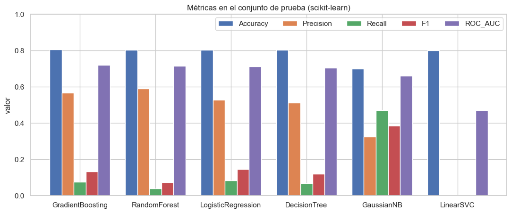
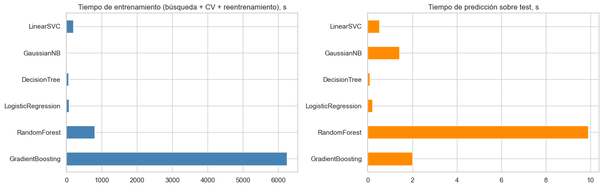
Matrices de confusión (umbral por defecto):
fig, axes = plt.subplots(2, 3, figsize=(16, 9))
for ax, (nombre, r) in zip(axes.flat, resultados.items()):
mc = r['matriz_confusion']
sns.heatmap(mc, annot=True, fmt=',d', cmap='Blues', cbar=False, ax=ax,
xticklabels=['pred 0', 'pred 1'], yticklabels=['real 0', 'real 1'])
ax.set_title(f"{nombre}\nRecall = {r['Recall']:.3f} | Precision = {r['Precision']:.3f}")
plt.tight_layout()
plt.show()
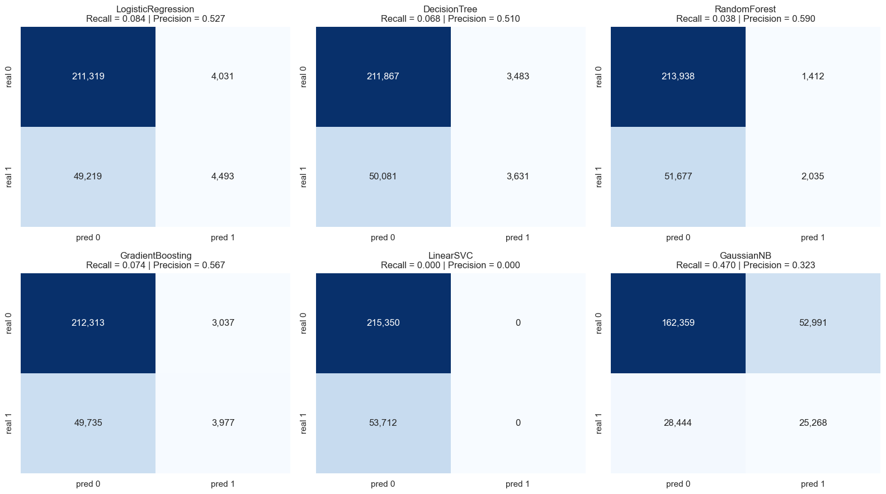
Curvas ROC de los seis modelos sobre el mismo conjunto de prueba:
from sklearn.metrics import roc_curve
plt.figure(figsize=(8, 7))
for nombre in tabla_resultados.index:
fpr, tpr, _ = roc_curve(y_test, scores_test[f'score_{nombre}'])
plt.plot(fpr, tpr, label=f"{nombre} (AUC = {resultados[nombre]['ROC_AUC']:.4f})")
plt.plot([0, 1], [0, 1], 'k--', lw=1, label='azar (AUC = 0.5)')
plt.xlabel('Tasa de falsos positivos')
plt.ylabel('Tasa de verdaderos positivos (recall)')
plt.title('Curvas ROC - scikit-learn')
plt.legend(loc='lower right')
plt.show()
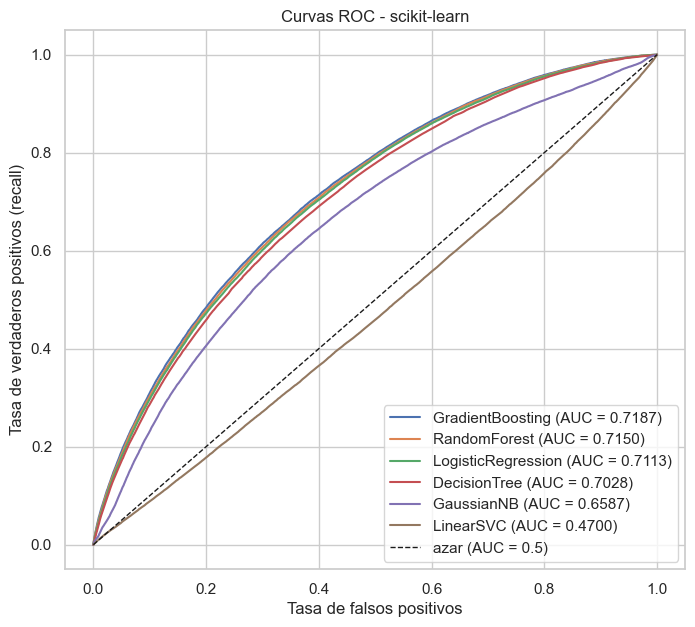
Puntuaciones del conjunto de prueba para la prueba de DeLong. Se guardan en un archivo con id, default y una columna de puntuación por modelo. PySpark generará un archivo equivalente, y ambos se pueden unir por id.
scores_test.to_csv('resultados/scores_test_sklearn.csv', index=False)
print(scores_test.shape)
scores_test.head()
(269062, 8)
| id | default | score_LogisticRegression | score_DecisionTree | score_RandomForest | score_GradientBoosting | score_LinearSVC | score_GaussianNB | |
|---|---|---|---|---|---|---|---|---|
| 0 | 68355089 | 0 | 0.179107 | 0.106372 | 0.177964 | 0.229127 | -1.0 | 1.000000 |
| 1 | 68476807 | 0 | 0.379044 | 0.355928 | 0.339843 | 0.306131 | -1.0 | 0.649466 |
| 2 | 68616873 | 0 | 0.129677 | 0.144953 | 0.126094 | 0.127847 | -1.0 | 0.023406 |
| 3 | 68577849 | 0 | 0.067389 | 0.146294 | 0.103551 | 0.085420 | -1.0 | 0.001217 |
| 4 | 67849662 | 1 | 0.173573 | 0.233482 | 0.192462 | 0.181132 | -1.0 | 0.120758 |
Comentario de los resultados.
Desempeño (ROC AUC en prueba):
Modelo |
AUC test |
|---|---|
GradientBoosting |
0.7187 |
RandomForest |
0.7150 |
LogisticRegression |
0.7113 |
DecisionTree |
0.7028 |
GaussianNB |
0.6587 |
LinearSVC |
0.4700 (colapsa a la solución trivial, ver diagnóstico) |
Los cuatro mejores modelos quedan en un rango de solo 0.016 de AUC. La regresión logística, que es lineal, queda a menos de 0.008 del mejor modelo de boosting. Esto concuerda con el EDA: ninguna variable separa las clases por sí sola, y las interacciones no lineales aportan poco. Si estas pequeñas diferencias son estadísticamente significativas y relevantes en la práctica se decidirá con la prueba de DeLong (9.10.4.6).
El AUC de validación cruzada y el de prueba coinciden (prueba incluso ligeramente mayor, con desviaciones de CV de ~0.015), así que no hay sobreajuste en los modelos elegidos.
Hiperparámetros elegidos:
En la regresión logística los tres valores de \(C\) dan prácticamente el mismo AUC (0.7096-0.7097). Con un millón de observaciones, la regularización casi no influye.
El árbol de decisión mejora hasta
max_depth=10, pero conmax_depth=15se sobreajusta (AUC CV cae a 0.664).En el bosque aleatorio y en gradient boosting gana la combinación de mayor capacidad (100 árboles, profundidad 15 y 5 respectivamente): promediar o combinar muchos árboles controla el sobreajuste que tiene un árbol profundo individual.
Métricas con umbral 0.5 (clase positiva = default):
La accuracy no sirve para comparar: LinearSVC predice todo como “pagado” y obtiene 0.8004, prácticamente lo mismo que el mejor modelo (0.8039). Ese valor es simplemente la proporción de la clase mayoritaria.
Con el umbral 0.5, los modelos basados en probabilidad detectan muy pocos defaults: recall de apenas 4-8 %, con precision de 51-59 %. Como solo el 20 % de los préstamos cae en default, casi ninguna probabilidad supera 0.5. Por eso el F1 es bajo (0.07-0.14). Es un problema del umbral, no de la capacidad de ordenamiento (el AUC es de ~0.71).
GaussianNB tiene el mejor recall (0.47) y el mejor F1 (0.38), pero no porque ordene mejor, ya que su AUC es el más bajo de los modelos funcionales. Sus probabilidades están mal calibradas y muy cargadas hacia 0 y 1, así que más observaciones superan el umbral 0.5.
Conclusión práctica: para usar estos modelos en decisiones de crédito habría que elegir un umbral menor que 0.5, calculado solo con el conjunto de entrenamiento (se hará para la prueba de McNemar en 9.10.4.6.2).
Tiempos (Intel i5-13420H, 8 núcleos físicos / 12 lógicos, 7.7 GB de RAM, n_jobs=4):
GradientBoostingClassifieres con diferencia el más costoso: 2 867 s (≈ 48 min) para la búsqueda completa, porque construye los árboles de forma secuencial y evalúa todos los cortes exactos.Le siguen RandomForest (1 018 s ≈ 17 min), LinearSVC (139 s), la regresión logística (80 s), el árbol de decisión (62 s) y GaussianNB (3 s).
En predicción, el más lento es RandomForest (10.6 s, porque recorre 100 árboles de profundidad 15). Los demás tardan menos de 2.1 s en puntuar 269 mil préstamos.
La relación costo/beneficio favorece a la regresión logística: logra un AUC a menos de 0.008 del mejor modelo en 36 veces menos tiempo.
Archivos generados en resultados/ (para la prueba de DeLong y la comparación con PySpark):
particion_train_test.csv: asignaciónid→split.scores_test_sklearn.csv:id,defaulty la puntuación continua de cada modelo en el conjunto de prueba.metricas_sklearn.csv: la tabla resumen de métricas y tiempos.
Implementación con PySpark#
9.10.4.2.3. PySpark#
Preparación: liberar memoria. Antes de iniciar Spark se guardan las puntuaciones de los modelos de scikit-learn sobre el conjunto de entrenamiento. Se usarán en 9.10.4.6.2 para elegir el umbral de clasificación sin tocar el conjunto de prueba. Después se liberan de la memoria el DataFrame del EDA y los modelos que ya no se necesitan. Solo se conserva el modelo de scikit-learn que se usará con LIME (9.10.4.7): el de mayor AUC entre los que entregan probabilidades.
scores_train_sklearn = pd.DataFrame({'default': y_train})
for nombre, r in resultados.items():
m = r['modelo']
scores_train_sklearn[f'score_{nombre}'] = (m.predict_proba(X_train)[:, 1] if hasattr(m, 'predict_proba')
else m.decision_function(X_train))
con_probabilidad = [m for m in tabla_resultados.index if hasattr(resultados[m]['modelo'], 'predict_proba')]
nombre_lime_sklearn = tabla_resultados.loc[con_probabilidad, 'ROC_AUC'].idxmax()
modelo_lime_sklearn = resultados[nombre_lime_sklearn]['modelo']
print('Modelo de scikit-learn que se conserva para LIME:', nombre_lime_sklearn)
for r in resultados.values():
r.pop('modelo')
del df, particion
gc.collect()
print(f'Memoria RAM disponible: {psutil.virtual_memory().available / 2**30:.1f} GB')
Modelo de scikit-learn que se conserva para LIME: GradientBoosting
Memoria RAM disponible: 1.6 GB
Sesión de Spark. Se usa la configuración del enunciado con tres ajustes, justificados por el hardware y por problemas encontrados al ejecutar:
spark.driver.memory = 4gen lugar de8g: el equipo tiene 7.7 GB de RAM en total. Reservar 8 GB para la JVM dejaría sin memoria al sistema operativo y a Python.Spark corre en modo local (
local[*], un solo equipo con 12 núcleos lógicos). En este modo el driver y el executor son el mismo proceso, así quespark.executor.memoryno tiene efecto. Se fija en4gsolo por coherencia.spark.memory.fraction = 0.6en lugar de0.8. Esa fracción del heap se reserva para caché y ejecución, y el resto queda para los objetos de los modelos. Los bosques aleatorios de Spark crean un objeto Java por cada nodo de cada árbol: en una prueba, un bosque de solo 10 árboles de profundidad 15 tuvo unos 168 mil nodos, y el grid llega a 100 árboles. Con 4 GB de heap y 0.8, a esos objetos les quedarían solo ~0.7 GB.spark.local.diren el discoD:. Es la carpeta donde Spark escribe los datos que no caben en memoria (MEMORY_AND_DISK). En una ejecución anterior, los temporales de Spark (casi 7 GB, que no se borraron al interrumpirse las sesiones) llenaron el discoC:, y la sesión de Spark se cayó a mitad del entrenamiento.D:tiene cientos de GB libres. SiD:no existe, se usa la carpeta temporal del sistema.
El resto (shuffle.partitions = 400, default.parallelism = 400, memory.storageFraction = 0.3) se mantiene igual al enunciado.
import sys
os.environ['PYSPARK_PYTHON'] = sys.executable
os.environ['PYSPARK_DRIVER_PYTHON'] = sys.executable
from pyspark.sql import SparkSession
from pyspark.sql import functions as F
from pyspark import StorageLevel
import tempfile
carpeta_temporal_spark = 'D:/spark_tmp' if os.path.exists('D:/') else tempfile.gettempdir()
spark = (SparkSession.builder
.appName("LendingClub_Optimized")
.master("local[*]")
.config("spark.sql.shuffle.partitions", "400")
.config("spark.default.parallelism", "400")
.config("spark.executor.memory", "4g")
.config("spark.driver.memory", "4g")
.config("spark.memory.fraction", 0.6)
.config("spark.memory.storageFraction", 0.3)
.config("spark.local.dir", carpeta_temporal_spark)
.config("spark.ui.showConsoleProgress", "false")
.getOrCreate())
spark.sparkContext.setLogLevel("ERROR")
print('Spark', spark.version, '| master:', spark.sparkContext.master,
'| paralelismo por defecto:', spark.sparkContext.defaultParallelism,
'| temporales en:', carpeta_temporal_spark)
Spark 4.0.1 | master: local[*] | paralelismo por defecto: 400 | temporales en: D:/spark_tmp
Lectura del CSV completo con Spark. Se lee el archivo original completo, sin muestreo. Hay un detalle importante: la columna desc contiene texto libre con saltos de línea dentro de las comillas. Con la lectura por defecto, Spark parte esos registros en varias filas y los campos quedan desalineados (por ejemplo, aparecen fragmentos de texto como si fueran valores de purpose). Por eso se usa multiLine=True y escape='"', que respetan los campos entre comillas. Con esa opción, Spark lee el archivo en una sola partición, porque no puede dividir un archivo con registros multilínea; más adelante se reparticiona.
No se usa inferSchema, que obliga a recorrer el archivo una vez más: todas las columnas se leen como texto y solo las necesarias se convierten a número.
t0_prep_spark = time.time()
t0 = time.time()
sdf = spark.read.csv('accepted_2007_to_2018Q4.csv', header=True, multiLine=True, escape='"')
n_filas_spark = sdf.count()
t_carga_spark = time.time() - t0
print(f'Archivo completo: {n_filas_spark:,} filas x {len(sdf.columns)} columnas | '
f'tiempo de lectura (Spark): {t_carga_spark:.1f} s')
Archivo completo: 2,260,701 filas x 151 columnas | tiempo de lectura (Spark): 16.5 s
Población, variable objetivo y partición común. Se filtran los préstamos finalizados, se crea default y se une la asignación id → split leída de resultados/particion_train_test.csv. Train y test se separan filtrando por la columna split, sin randomSplit, para que sean exactamente los mismos préstamos que en scikit-learn.
sdf = sdf.filter(F.col('loan_status').isin('Fully Paid', 'Charged Off'))
sdf = sdf.withColumn('default', F.when(F.col('loan_status') == 'Charged Off', 1).otherwise(0))
sdf = sdf.withColumn('id', F.col('id').cast('long'))
particion_spark = spark.read.csv('resultados/particion_train_test.csv', header=True, inferSchema=True)
sdf = sdf.join(particion_spark, on='id', how='inner')
(sdf.groupBy('split')
.agg(F.count('*').alias('n'), F.round(100 * F.mean('default'), 3).alias('tasa_default_%'))
.orderBy('split').show())
+-----+-------+--------------+
|split| n|tasa_default_%|
+-----+-------+--------------+
| test| 269062| 19.963|
|train|1076248| 19.963|
+-----+-------+--------------+
Variables. Se construyen exactamente las mismas variables y transformaciones fila a fila que en scikit-learn (9.10.4.2.2). Las categorías raras de purpose y addr_state (menos del 1 %) se calculan solo con el conjunto de entrenamiento. Para eso se trae al driver únicamente la lista de nombres de esas categorías, que es un resultado agregado de unas pocas filas y no el dataset.
for c in ['loan_amnt', 'int_rate', 'fico_range_high', 'inq_last_6mths', 'mort_acc', 'total_acc',
'dti', 'revol_util', 'annual_inc', 'revol_bal', 'delinq_2yrs', 'pub_rec', 'mths_since_last_delinq']:
sdf = sdf.withColumn(c, F.col(c).cast('double'))
def a_fecha(c):
return F.to_date(F.concat(F.lit('01-'), F.col(c)), 'dd-MMM-yyyy')
sdf = (sdf
.withColumn('emp_length', F.when(F.col('emp_length') == '< 1 year', 0.0)
.otherwise(F.regexp_extract('emp_length', r'(\d+)', 1).cast('double')))
.withColumn('credit_hist_years', F.datediff(a_fecha('issue_d'), a_fecha('earliest_cr_line')) / 365.25)
.withColumn('dti', F.when(F.col('dti').between(0, 100), F.col('dti'))) # fuera de [0, 100] -> nulo
.withColumn('revol_util', F.when(F.col('revol_util') > 100, 100.0).otherwise(F.col('revol_util')))
.withColumn('log_annual_inc', F.log1p('annual_inc'))
.withColumn('log_revol_bal', F.log1p('revol_bal'))
.withColumn('tiene_delinq', F.when(F.col('delinq_2yrs') > 0, 1.0).otherwise(0.0))
.withColumn('tiene_pub_rec', F.when(F.col('pub_rec') > 0, 1.0).otherwise(0.0))
.withColumn('nunca_moroso', F.col('mths_since_last_delinq').isNull().cast('double'))
.withColumn('emp_length_faltante', F.col('emp_length').isNull().cast('double'))
.withColumn('term', F.trim('term'))
.withColumn('home_ownership', F.when(F.col('home_ownership').isin('ANY', 'NONE'), 'OTHER')
.otherwise(F.col('home_ownership'))))
vars_num_s = vars_num # mismas 16 variables numéricas que en scikit-learn
vars_cat_s = vars_cat # mismas 5 variables categóricas
n_train_s = sdf.filter(F.col('split') == 'train').count()
for c, nombre_otros in [('purpose', 'other'), ('addr_state', 'OTROS')]:
frec = (sdf.filter(F.col('split') == 'train').groupBy(c).count()
.filter(F.col('count') / n_train_s < 0.01))
raras = sorted(r[c] for r in frec.select(c).collect()) # solo la lista de categorías raras
sdf = sdf.withColumn(c, F.when(F.col(c).isin(raras), nombre_otros).otherwise(F.col(c)))
print(f'{c}: {len(raras)} categorías raras agrupadas en "{nombre_otros}" -> {raras}')
purpose: 6 categorías raras agrupadas en "other" -> ['educational', 'house', 'moving', 'renewable_energy', 'vacation', 'wedding']
addr_state: 23 categorías raras agrupadas en "OTROS" -> ['AK', 'AR', 'DC', 'DE', 'HI', 'IA', 'ID', 'KS', 'KY', 'ME', 'MS', 'MT', 'ND', 'NE', 'NH', 'NM', 'OK', 'RI', 'SD', 'UT', 'VT', 'WV', 'WY']
Reparticionado. Tras la lectura multiLine y el join (que Spark resuelve con broadcast porque la tabla de partición es pequeña), todos los datos quedan en una sola partición, es decir, en un solo núcleo. Por eso se reparticionan explícitamente.
Se usan 48 particiones (4 por núcleo lógico) en lugar de las 400 de spark.default.parallelism. En una prueba previa con los mismos datos, entrenar con 400 particiones fue de 3 a 6 veces más lento: por ejemplo, LogisticRegression tardó 29 s contra 9 s, y un árbol de profundidad 10 tardó 62 s contra 12 s. Con ~1 millón de filas, 400 particiones dejan solo ~2 700 filas por tarea, y el costo de coordinar tantas tareas en cada iteración supera el cálculo útil. La configuración shuffle.partitions = 400 se mantiene para las operaciones de shuffle (joins, agregaciones).
Transformadores (ajustados solo con train) en un Pipeline de Spark:
Imputer(mediana) para las variables numéricas.StringIndexer(handleInvalid='keep') +OneHotEncoder(dropLast=True) para las categóricas. Con esta combinación, el índice extra de “categoría no vista” es justo la columna que se descarta. Así, las categorías reales conservan todas su columna (igual que en scikit-learn) y una categoría desconocida queda con todo en 0, equivalente ahandle_unknown='ignore'. El vector final tiene las mismas 62 columnas.VectorAssemblerde las numéricas →StandardScaler(withMean=True,withStd=True), aplicado solo a las numéricas, como en scikit-learn.VectorAssemblerfinal (numéricas escaladas + dummies) → columnafeatures.
El resultado se cachea obligatoriamente con .persist(StorageLevel.MEMORY_AND_DISK) antes de entrenar, y se materializa con count().
from pyspark.ml import Pipeline
from pyspark.ml.feature import (Imputer, StringIndexer, OneHotEncoder, VectorAssembler,
StandardScaler as StandardScalerSpark)
from pyspark.ml.feature import StandardScalerModel, StringIndexerModel, ImputerModel
N_PARTICIONES = 48
sdf = sdf.select(['id', 'default', 'split'] + vars_num_s + vars_cat_s).repartition(N_PARTICIONES)
train_s = sdf.filter(F.col('split') == 'train')
test_s = sdf.filter(F.col('split') == 'test')
etapas = ([Imputer(inputCols=vars_num_s, outputCols=[c + '_imp' for c in vars_num_s], strategy='median')]
+ [StringIndexer(inputCol=c, outputCol=c + '_idx', handleInvalid='keep') for c in vars_cat_s]
+ [OneHotEncoder(inputCols=[c + '_idx' for c in vars_cat_s],
outputCols=[c + '_ohe' for c in vars_cat_s], dropLast=True),
VectorAssembler(inputCols=[c + '_imp' for c in vars_num_s], outputCol='num_vec'),
StandardScalerSpark(inputCol='num_vec', outputCol='num_esc', withMean=True, withStd=True),
VectorAssembler(inputCols=['num_esc'] + [c + '_ohe' for c in vars_cat_s], outputCol='features')])
prep_spark = Pipeline(stages=etapas).fit(train_s) # solo train
train_final = prep_spark.transform(train_s).select('id', 'default', 'features')
test_final = prep_spark.transform(test_s).select('id', 'default', 'features')
train_final = train_final.persist(StorageLevel.MEMORY_AND_DISK) # caché obligatorio
test_final = test_final.persist(StorageLevel.MEMORY_AND_DISK)
n_train_final, n_test_final = train_final.count(), test_final.count()
t_prep_spark = time.time() - t0_prep_spark
escalador_spark = next(s for s in prep_spark.stages if isinstance(s, StandardScalerModel))
indexadores_spark = [s for s in prep_spark.stages if isinstance(s, StringIndexerModel)]
imputador_spark = next(s for s in prep_spark.stages if isinstance(s, ImputerModel))
nombres_variables_spark = vars_num_s + [f'{c}_{etiqueta}' for c, ind in zip(vars_cat_s, indexadores_spark)
for etiqueta in ind.labelsArray[0]]
print(f'train: {n_train_final:,} filas | test: {n_test_final:,} filas | particiones: {train_final.rdd.getNumPartitions()}')
print(f'Dimensión del vector de variables: {len(nombres_variables_spark)}')
print(f'Tiempo de preprocesamiento en Spark (lectura + variables + transformadores + caché): {t_prep_spark:.1f} s')
print('Medianas usadas en la imputación (Spark):')
print(imputador_spark.surrogateDF.toPandas().T.round(3).rename(columns={0: 'mediana'}).to_string())
train: 1,076,248 filas | test: 269,062 filas | particiones: 48
Dimensión del vector de variables: 62
Tiempo de preprocesamiento en Spark (lectura + variables + transformadores + caché): 239.9 s
Medianas usadas en la imputación (Spark):
mediana
loan_amnt 12000.000
int_rate 12.740
fico_range_high 694.000
emp_length 6.000
inq_last_6mths 0.000
mort_acc 1.000
total_acc 23.000
credit_hist_years 14.749
dti 17.600
revol_util 52.100
log_annual_inc 11.082
log_revol_bal 9.317
tiene_delinq 0.000
tiene_pub_rec 0.000
nunca_moroso 1.000
emp_length_faltante 0.000
train_final.show(3, truncate=110)
+--------+-------+--------------------------------------------------------------------------------------------------------------+
| id|default| features|
+--------+-------+--------------------------------------------------------------------------------------------------------------+
| 2377795| 1|(62,[0,1,2,3,4,5,6,7,8,9,10,11,12,13,14,15,16,19,21,29,33],[2.36020817237167,-0.4405415745876188,1.06070498...|
|68942474| 0|(62,[0,1,2,3,4,5,6,7,8,9,10,11,12,13,14,15,17,20,21,26,58],[-0.48983410054050397,0.7017842368896205,-0.9787...|
| 960175| 1|(62,[0,1,2,3,4,5,6,7,8,9,10,11,12,13,14,15,16,20,21,25,44],[-0.9801331233453145,-1.3879383943815864,1.21758...|
+--------+-------+--------------------------------------------------------------------------------------------------------------+
only showing top 3 rows
Comentario del preprocesamiento en PySpark.
Misma población y misma partición: 1 076 248 préstamos de entrenamiento y 269 062 de prueba, con 19.963 % de default en ambos. Son exactamente los de scikit-learn, porque se leen del mismo archivo de partición.
Mismas variables: se agruparon las mismas 6 categorías de
purposey los mismos 23 estados, y el vector final tiene las mismas 62 columnas.Medianas: coinciden con las de scikit-learn salvo diferencias mínimas en
dti(17.60 frente a 17.61) yrevol_util(52.1 frente a 52.2). ElImputerde Spark calcula la mediana de forma aproximada (approxQuantile, error relativo 0.001), mientras que scikit-learn la calcula exacta.Tiempos:
La lectura del CSV completo fue más rápida en Spark (16.5 s) que en pandas (44.2 s; en este cuaderno, la lectura de pandas además cuenta los nulos de las 151 columnas para el EDA).
En cambio, el preprocesamiento completo tomó 240 s en Spark frente a 56 s en scikit-learn. Spark debe:
leer el archivo en una sola partición (
multiLine);unirlo con la partición común y redistribuir los datos (
repartition);recorrer los datos varias veces para ajustar el
Pipeline(medianas aproximadas y unStringIndexerpor variable);materializar el caché.
Con 1.3 millones de filas, que caben holgadamente en la memoria de un solo equipo, la maquinaria distribuida de Spark agrega trabajo en lugar de ahorrarlo.
9.10.4.5. Modelado con PySpark#
Se entrenan los seis modelos de pyspark.ml.classification con los mismos espacios de búsqueda de 9.10.4.3. La búsqueda se hace exclusivamente con ParamGridBuilder + CrossValidator (numFolds=3, igual que en scikit-learn), sin bucles sobre combinaciones de hiperparámetros.
Detalles de implementación:
Criterio de selección:
BinaryClassificationEvaluator(metricName='areaUnderROC').Para los modelos que entregan probabilidades, el evaluador usa la columna
probability. En los árboles de Spark,rawPredictioncontiene los conteos de cada clase en la hoja y no probabilidades. En una prueba previa, evaluar el árbol conrawPredictiondaba AUC ≈ 0.49 (orden sin sentido) y conprobability≈ 0.70.Para LinearSVC, que no produce probabilidades, se usa
rawPrediction(el margen \(w^\top x + b\)).
Regresión logística:
elasticNetParam=0(L2 pura) yregParam∈ {1e-6, 1e-5, 1e-4}.LinearSVC: minimiza la pérdida hinge con los mismos
regParam.Árboles (DecisionTree, RandomForest, GBT):
maxBins=32(valor por defecto). Cada variable continua se discretiza en a lo sumo 32 intervalos antes de buscar los cortes. scikit-learn, en cambio, evalúa todos los cortes posibles.RandomForest:
maxMemoryInMB=32y dos combinaciones excluidas por capacidad de cómputo insuficiente.Memoria. En una primera ejecución, el bosque aleatorio agotó el heap de la JVM (
java.lang.OutOfMemoryError: Java heap space) y la sesión de Spark se cerró. En modo local se ejecutan 12 tareas a la vez. Cada tarea recibe una copia de los árboles que se están construyendo y reserva hastamaxMemoryInMB(256 MB por defecto) para los histogramas de los nodos, así que 12 tareas pueden pedir más de 3 GB de un heap de 4 GB. ConmaxMemoryInMB=32, cada pasada sobre los datos procesa menos nodos a la vez (más pasadas), sin cambiar los hiperparámetros del modelo. Con ese ajuste, un bosque de 10 árboles de profundidad 15 se entrenó sin problemas, con ~1 GB de heap.Tiempo. En este equipo, cada árbol de profundidad 15 le tomó a Spark ~60 s con todos los datos: 10 árboles, unos 168 mil nodos, tardaron 601 s. Las combinaciones 50 × 15 y 100 × 15 suman 150 árboles de profundidad 15 en cada uno de los 3 pliegues, más el reentrenamiento final. Solo ellas tomarían alrededor de 6 horas, y el grid completo de Spark entre 9 y 10 horas. scikit-learn entrenó el grid completo de RandomForest en ~15 minutos. Por eso el grid de Spark usa 7 de las 9 combinaciones:
numTrees∈ {10, 50, 100} conmaxDepth∈ {5, 10}, más 10 × 15. La exclusión se hace uniendo dos listas generadas conParamGridBuilder, sin bucles manuales.Esta restricción se debe a la capacidad de cómputo insuficiente de un solo equipo con 7.7 GB de RAM en modo local, y se retoma en las conclusiones. En un clúster, cada nodo aportaría su propia memoria y núcleos. La comparación de RandomForest entre entornos debe leerse con esta diferencia en mente: el espacio de búsqueda de Spark es más pequeño.
GBT:
stepSize=0.1, igual allearning_ratede scikit-learn.Naive Bayes:
modelType='gaussian', sin hiperparámetros. Se usa unParamGridBuilder().build()vacío, así que elCrossValidatorsolo calcula el AUC de validación cruzada.Semilla:
seed=42en todos los modelos aleatorios y en elCrossValidator. Los pliegues de Spark se generan con su propia semilla, así que no son los mismos 3 pliegues de scikit-learn. La partición train/test sí es idéntica.
Métricas y tiempos:
Se calculan las mismas métricas que en scikit-learn. La matriz de confusión se construye con un
groupBy('default', 'prediction').count(), que devuelve solo 4 filas agregadas.Una vez terminados el entrenamiento y la predicción, se transfieren al driver únicamente las columnas
id,defaulty la puntuación de la clase positiva del conjunto de prueba, extraída convector_to_array. El tiempo de esa transferencia se mide por separado.
import pyspark.ml.classification as clf_spark
from pyspark.ml.tuning import ParamGridBuilder, CrossValidator
from pyspark.ml.evaluation import BinaryClassificationEvaluator
from pyspark.ml.functions import vector_to_array
evaluador_prob = BinaryClassificationEvaluator(labelCol='default', rawPredictionCol='probability',
metricName='areaUnderROC')
evaluador_raw = BinaryClassificationEvaluator(labelCol='default', rawPredictionCol='rawPrediction',
metricName='areaUnderROC')
lr_s = clf_spark.LogisticRegression(labelCol='default', featuresCol='features', elasticNetParam=0.0)
dt_s = clf_spark.DecisionTreeClassifier(labelCol='default', featuresCol='features', seed=42)
rf_s = clf_spark.RandomForestClassifier(labelCol='default', featuresCol='features', seed=42,
maxMemoryInMB=32) # ver explicación arriba
gbt_s = clf_spark.GBTClassifier(labelCol='default', featuresCol='features', stepSize=0.1, seed=42)
svc_s = clf_spark.LinearSVC(labelCol='default', featuresCol='features')
nb_s = clf_spark.NaiveBayes(labelCol='default', featuresCol='features', modelType='gaussian')
modelos_spark = {
'LogisticRegression': (lr_s, ParamGridBuilder().addGrid(lr_s.regParam, reg_params).build(), evaluador_prob),
'DecisionTree': (dt_s, ParamGridBuilder().addGrid(dt_s.maxDepth, [5, 10, 15]).build(), evaluador_prob),
# 50 x 15 y 100 x 15 se excluyen por capacidad de cómputo insuficiente (ver explicación arriba)
'RandomForest': (rf_s, ParamGridBuilder().addGrid(rf_s.numTrees, [10, 50, 100])
.addGrid(rf_s.maxDepth, [5, 10]).build()
+ ParamGridBuilder().addGrid(rf_s.numTrees, [10])
.addGrid(rf_s.maxDepth, [15]).build(), evaluador_prob),
'GradientBoosting': (gbt_s, ParamGridBuilder().addGrid(gbt_s.maxIter, [50, 100])
.addGrid(gbt_s.maxDepth, [3, 5]).build(), evaluador_prob),
'LinearSVC': (svc_s, ParamGridBuilder().addGrid(svc_s.regParam, reg_params).build(), evaluador_raw),
'GaussianNB': (nb_s, ParamGridBuilder().build(), evaluador_prob),
}
print('maxBins usado en los árboles de Spark:', dt_s.getMaxBins(), rf_s.getMaxBins(), gbt_s.getMaxBins())
for nombre, (_, grid, _) in modelos_spark.items():
print(f'{nombre}: {len(grid)} combinaciones x 3 pliegues')
maxBins usado en los árboles de Spark: 32 32 32
LogisticRegression: 3 combinaciones x 3 pliegues
DecisionTree: 3 combinaciones x 3 pliegues
RandomForest: 7 combinaciones x 3 pliegues
GradientBoosting: 4 combinaciones x 3 pliegues
LinearSVC: 3 combinaciones x 3 pliegues
GaussianNB: 1 combinaciones x 3 pliegues
resultados_spark = {}
scores_test_spark = pd.DataFrame({'id': id_test, 'default': y_test})
def entrenar_y_evaluar_spark(nombre):
estimador, grid, evaluador = modelos_spark[nombre]
col_score = 'rawPrediction' if nombre == 'LinearSVC' else 'probability'
cv = CrossValidator(estimator=estimador, estimatorParamMaps=grid, evaluator=evaluador,
numFolds=3, seed=42)
t0 = time.time()
cv_modelo = cv.fit(train_final)
t_entrenamiento = time.time() - t0
mejor = cv_modelo.bestModel
params = [{p.name: v for p, v in g.items()} for g in grid]
tabla_cv = pd.DataFrame({'params': params, 'AUC_cv': cv_modelo.avgMetrics})
i_mejor = int(np.argmax(cv_modelo.avgMetrics))
t0 = time.time()
pred = (mejor.transform(test_final)
.withColumn('score', vector_to_array(col_score)[1])
.select('id', 'default', 'prediction', col_score, 'score')
.persist(StorageLevel.MEMORY_AND_DISK))
auc = evaluador.evaluate(pred)
conteos = pred.groupBy('default', 'prediction').count().toPandas() # 4 filas agregadas
t_prediccion = time.time() - t0
t0 = time.time()
local = pred.select('id', 'default', 'score').toPandas() # solo id, default, score de test
t_transferencia = time.time() - t0
pred.unpersist()
n = {(int(r['default']), int(r['prediction'])): int(r['count']) for _, r in conteos.iterrows()}
vn, fp, fn, vp = n.get((0, 0), 0), n.get((0, 1), 0), n.get((1, 0), 0), n.get((1, 1), 0)
precision = vp / (vp + fp) if vp + fp > 0 else 0.0
recall = vp / (vp + fn)
scores_test_spark[f'score_{nombre}'] = scores_test_spark['id'].map(local.set_index('id')['score'])
resultados_spark[nombre] = {
'mejores_params': params[i_mejor], 'AUC_cv': cv_modelo.avgMetrics[i_mejor],
'Accuracy': (vp + vn) / (vp + vn + fp + fn), 'Precision': precision, 'Recall': recall,
'F1': 2 * precision * recall / (precision + recall) if precision + recall > 0 else 0.0,
'ROC_AUC': auc, 't_entrenamiento_s': t_entrenamiento, 't_prediccion_s': t_prediccion,
't_transferencia_s': t_transferencia,
'matriz_confusion': np.array([[vn, fp], [fn, vp]]), 'modelo': mejor}
r = resultados_spark[nombre]
print(f'{nombre}: mejores hiperparámetros = {params[i_mejor]}')
print(f' AUC CV = {r["AUC_cv"]:.4f} | AUC test = {auc:.4f} | Accuracy = {r["Accuracy"]:.4f} | '
f'Precision = {precision:.4f} | Recall = {recall:.4f} | F1 = {r["F1"]:.4f}')
print(f' Tiempo de entrenamiento (CV + ajuste final) = {t_entrenamiento:.1f} s | '
f'predicción = {t_prediccion:.2f} s | transferencia al driver = {t_transferencia:.2f} s')
display(tabla_cv.sort_values('AUC_cv', ascending=False).round(4))
Regresión logística — PySpark#
entrenar_y_evaluar_spark('LogisticRegression')
LogisticRegression: mejores hiperparámetros = {'regParam': 0.0001}
AUC CV = 0.7112 | AUC test = 0.7113 | Accuracy = 0.8021 | Precision = 0.5273 | Recall = 0.0840 | F1 = 0.1449
Tiempo de entrenamiento (CV + ajuste final) = 328.1 s | predicción = 24.86 s | transferencia al driver = 1.72 s
| params | AUC_cv | |
|---|---|---|
| 2 | {'regParam': 0.0001} | 0.7112 |
| 1 | {'regParam': 1e-05} | 0.7112 |
| 0 | {'regParam': 1e-06} | 0.7112 |
Árbol de decisión — PySpark#
entrenar_y_evaluar_spark('DecisionTree')
DecisionTree: mejores hiperparámetros = {'maxDepth': 10}
AUC CV = 0.6998 | AUC test = 0.6997 | Accuracy = 0.8009 | Precision = 0.5105 | Recall = 0.0665 | F1 = 0.1177
Tiempo de entrenamiento (CV + ajuste final) = 222.8 s | predicción = 4.07 s | transferencia al driver = 1.91 s
| params | AUC_cv | |
|---|---|---|
| 1 | {'maxDepth': 10} | 0.6998 |
| 2 | {'maxDepth': 15} | 0.6733 |
| 0 | {'maxDepth': 5} | 0.6530 |
Bosque aleatorio — PySpark#
entrenar_y_evaluar_spark('RandomForest')
RandomForest: mejores hiperparámetros = {'numTrees': 100, 'maxDepth': 10}
AUC CV = 0.7065 | AUC test = 0.7051 | Accuracy = 0.8013 | Precision = 0.6550 | Recall = 0.0098 | F1 = 0.0192
Tiempo de entrenamiento (CV + ajuste final) = 2051.2 s | predicción = 39.17 s | transferencia al driver = 4.32 s
| params | AUC_cv | |
|---|---|---|
| 5 | {'numTrees': 100, 'maxDepth': 10} | 0.7065 |
| 3 | {'numTrees': 50, 'maxDepth': 10} | 0.7060 |
| 6 | {'numTrees': 10, 'maxDepth': 15} | 0.7037 |
| 1 | {'numTrees': 10, 'maxDepth': 10} | 0.7023 |
| 4 | {'numTrees': 100, 'maxDepth': 5} | 0.6864 |
| 2 | {'numTrees': 50, 'maxDepth': 5} | 0.6829 |
| 0 | {'numTrees': 10, 'maxDepth': 5} | 0.6588 |
Gradient boosting (GBTClassifier) — PySpark#
entrenar_y_evaluar_spark('GradientBoosting')
GradientBoosting: mejores hiperparámetros = {'maxIter': 100, 'maxDepth': 5}
AUC CV = 0.7173 | AUC test = 0.7181 | Accuracy = 0.8035 | Precision = 0.5533 | Recall = 0.0817 | F1 = 0.1424
Tiempo de entrenamiento (CV + ajuste final) = 10435.5 s | predicción = 28.32 s | transferencia al driver = 1.97 s
| params | AUC_cv | |
|---|---|---|
| 3 | {'maxIter': 100, 'maxDepth': 5} | 0.7173 |
| 2 | {'maxIter': 100, 'maxDepth': 3} | 0.7146 |
| 1 | {'maxIter': 50, 'maxDepth': 5} | 0.7142 |
| 0 | {'maxIter': 50, 'maxDepth': 3} | 0.7113 |
SVM lineal — PySpark#
entrenar_y_evaluar_spark('LinearSVC')
LinearSVC: mejores hiperparámetros = {'regParam': 1e-06}
AUC CV = 0.6511 | AUC test = 0.6675 | Accuracy = 0.8004 | Precision = 0.0000 | Recall = 0.0000 | F1 = 0.0000
Tiempo de entrenamiento (CV + ajuste final) = 900.6 s | predicción = 25.83 s | transferencia al driver = 1.61 s
| params | AUC_cv | |
|---|---|---|
| 0 | {'regParam': 1e-06} | 0.6511 |
| 2 | {'regParam': 0.0001} | 0.6423 |
| 1 | {'regParam': 1e-05} | 0.6292 |
Naive Bayes gaussiano — PySpark#
entrenar_y_evaluar_spark('GaussianNB')
GaussianNB: mejores hiperparámetros = {}
AUC CV = 0.6596 | AUC test = 0.6589 | Accuracy = 0.6961 | Precision = 0.3223 | Recall = 0.4738 | F1 = 0.3837
Tiempo de entrenamiento (CV + ajuste final) = 87.4 s | predicción = 24.03 s | transferencia al driver = 1.98 s
| params | AUC_cv | |
|---|---|---|
| 0 | {} | 0.6596 |
Resumen de métricas en el conjunto de prueba — PySpark#
tabla_resultados_spark = pd.DataFrame(resultados_spark).T.drop(columns=['matriz_confusion', 'modelo'])
tabla_resultados_spark = tabla_resultados_spark.sort_values('ROC_AUC', ascending=False)
for c in ['AUC_cv', 'Accuracy', 'Precision', 'Recall', 'F1', 'ROC_AUC']:
tabla_resultados_spark[c] = tabla_resultados_spark[c].astype(float).round(4)
for c in ['t_entrenamiento_s', 't_prediccion_s', 't_transferencia_s']:
tabla_resultados_spark[c] = tabla_resultados_spark[c].astype(float).round(2)
tabla_resultados_spark.to_csv('resultados/metricas_pyspark.csv')
scores_test_spark.to_csv('resultados/scores_test_pyspark.csv', index=False)
print('¿Todas las puntuaciones de test tienen su id?', not scores_test_spark.isna().any().any())
tabla_resultados_spark
¿Todas las puntuaciones de test tienen su id? True
| mejores_params | AUC_cv | Accuracy | Precision | Recall | F1 | ROC_AUC | t_entrenamiento_s | t_prediccion_s | t_transferencia_s | |
|---|---|---|---|---|---|---|---|---|---|---|
| GradientBoosting | {'maxIter': 100, 'maxDepth': 5} | 0.7173 | 0.8035 | 0.5533 | 0.0817 | 0.1424 | 0.7181 | 10435.48 | 28.32 | 1.97 |
| LogisticRegression | {'regParam': 0.0001} | 0.7112 | 0.8021 | 0.5273 | 0.0840 | 0.1449 | 0.7113 | 328.10 | 24.86 | 1.72 |
| RandomForest | {'numTrees': 100, 'maxDepth': 10} | 0.7065 | 0.8013 | 0.6550 | 0.0098 | 0.0192 | 0.7051 | 2051.15 | 39.17 | 4.32 |
| DecisionTree | {'maxDepth': 10} | 0.6998 | 0.8009 | 0.5105 | 0.0665 | 0.1177 | 0.6997 | 222.80 | 4.07 | 1.91 |
| LinearSVC | {'regParam': 1e-06} | 0.6511 | 0.8004 | 0.0000 | 0.0000 | 0.0000 | 0.6675 | 900.64 | 25.83 | 1.61 |
| GaussianNB | {} | 0.6596 | 0.6961 | 0.3223 | 0.4738 | 0.3837 | 0.6589 | 87.38 | 24.03 | 1.98 |
fig, axes = plt.subplots(2, 3, figsize=(16, 9))
for ax, (nombre, r) in zip(axes.flat, resultados_spark.items()):
sns.heatmap(r['matriz_confusion'], annot=True, fmt=',d', cmap='Oranges', cbar=False, ax=ax,
xticklabels=['pred 0', 'pred 1'], yticklabels=['real 0', 'real 1'])
ax.set_title(f"{nombre} (PySpark)\nRecall = {r['Recall']:.3f} | Precision = {r['Precision']:.3f}")
plt.tight_layout()
plt.show()
plt.figure(figsize=(8, 7))
for nombre in tabla_resultados_spark.index:
fpr, tpr, _ = roc_curve(y_test, scores_test_spark[f'score_{nombre}'])
plt.plot(fpr, tpr, label=f"{nombre} (AUC = {resultados_spark[nombre]['ROC_AUC']:.4f})")
plt.plot([0, 1], [0, 1], 'k--', lw=1, label='azar (AUC = 0.5)')
plt.xlabel('Tasa de falsos positivos')
plt.ylabel('Tasa de verdaderos positivos (recall)')
plt.title('Curvas ROC - PySpark')
plt.legend(loc='lower right')
plt.show()
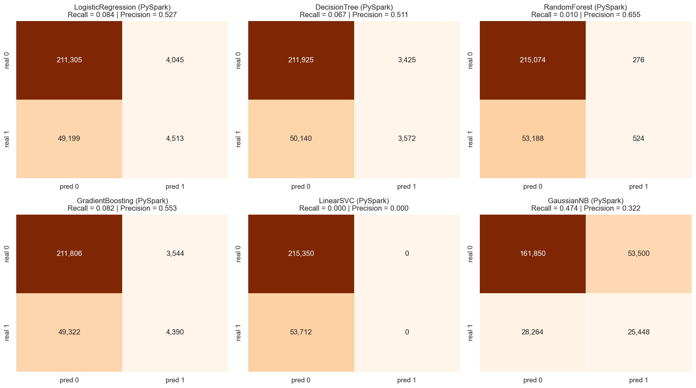
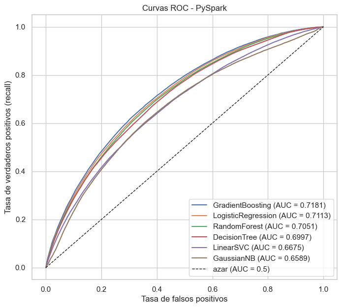
Comentario del modelado en PySpark.
Modelo |
AUC test Spark |
AUC test sklearn |
Mejores hiperparámetros (Spark / sklearn) |
|---|---|---|---|
GradientBoosting |
0.7181 |
0.7187 |
100 iter., prof. 5 / 100 árboles, prof. 5 |
LogisticRegression |
0.7113 |
0.7113 |
regParam 1e-4 / C ≈ 0.0093 (regParam 1e-4) |
RandomForest |
0.7051 |
0.7150 |
100 árboles, prof. 10 / 100 árboles, prof. 15 |
DecisionTree |
0.6997 |
0.7028 |
prof. 10 / prof. 10 |
GaussianNB |
0.6589 |
0.6587 |
— |
LinearSVC |
0.6675 |
0.4700 |
regParam 1e-6 / C ≈ 0.093 |
Regresión logística y Naive Bayes dan prácticamente el mismo resultado en ambos entornos. Es lo esperable: tienen solución única (convexa o cerrada), y la equivalencia \(C = 1/(\text{regParam} \cdot n)\) funcionó (ambos eligieron regParam = 1e-4). En los dos entornos la regularización casi no influye: los tres valores dan el mismo AUC de validación cruzada.
Gradient boosting es el mejor modelo en ambos entornos, con los mismos hiperparámetros (100 × 5) y AUC casi idénticos (0.7181 frente a 0.7187), aunque Spark discretiza las variables en 32 intervalos.
Árbol de decisión: en ambos entornos gana la profundidad 10 y la profundidad 15 se sobreajusta (AUC de CV 0.673 en Spark y 0.664 en sklearn). La pequeña ventaja de scikit-learn (0.0031) es coherente con que evalúa cortes exactos en lugar de 32 intervalos (
maxBins).Bosque aleatorio: tiene la mayor diferencia entre modelos comparables (0.7051 frente a 0.7150), por dos causas.
El grid de Spark no incluyó 50 × 15 ni 100 × 15 por capacidad de cómputo insuficiente, y justo 100 × 15 fue el mejor en scikit-learn. En Spark, 10 × 15 (0.7037) ya superó a 10 × 10 (0.7023), así que es muy probable que 100 × 15 hubiera mejorado su resultado.
La discretización con
maxBins=32.
Además, su recall con umbral 0.5 es casi nulo (0.0098). Al promediar muchos árboles, sus probabilidades se concentran cerca de la tasa base y casi nunca superan 0.5.
LinearSVC: en Spark sí aprende (AUC 0.6675), mientras que en scikit-learn colapsa a la solución trivial (0.4700). Posibles explicaciones:
Spark no regulariza el intercepto, mientras que liblinear sí (
intercept_scaling).Spark estandariza internamente las variables antes de optimizar (
standardization=True), incluidas las dummies.Spark minimiza con L-BFGS/OWL-QN y un máximo de 100 iteraciones. Esto actúa como una parada temprana: detiene la optimización antes de llegar al óptimo degenerado \(w \approx 0\).
Aun así, con umbral 0 no predice ningún default (recall 0) y su AUC queda muy por debajo del de los demás modelos. Es la diferencia de implementación más marcada del proyecto.
Tiempos: Spark fue más lento que scikit-learn en todos los modelos. Ver la comparación en 9.10.4.8.
9.10.4.6. Comparación estadística de los modelos#
9.10.4.6.1. Prueba de DeLong#
La prueba de DeLong (DeLong, DeLong y Clarke-Pearson, 1988) contrasta \(H_0: \text{AUC}_1 = \text{AUC}_2\) cuando ambos AUC se calculan sobre las mismas observaciones. Como las dos curvas ROC están correlacionadas, el error estándar de la diferencia incluye su covarianza:
Implementación. Se programa la versión rápida de Sun y Xu (2014), de complejidad \(O(n \log n)\). El AUC y las componentes estructurales de DeLong se obtienen a partir de rangos medios (scipy.stats.rankdata):
los rangos de las puntuaciones de los positivos entre sí (\(T_X\));
los de los negativos entre sí (\(T_Y\));
los de todas las puntuaciones juntas (\(T_Z\)).
Con ellos, \(V_{10} = (T_Z^{pos} - T_X)/n\) y \(V_{01} = 1 - (T_Z^{neg} - T_Y)/m\), y la covarianza de los AUC es \(S_{10}/m + S_{01}/n\). La versión directa, que compara cada positivo con cada negativo, es \(O(m \cdot n)\): con ~54 mil positivos y ~215 mil negativos serían unos 11 600 millones de comparaciones por modelo, lo que no es viable.
La implementación se valida primero con un conjunto pequeño, comparándola con la versión directa.
def delong_rapido(y, scores):
"""DeLong rápido (Sun y Xu, 2014), O(n log n).
y: etiquetas 0/1 (n,). scores: matriz (k, n) con las puntuaciones de k modelos.
Devuelve los k AUC y su matriz de covarianza (k x k)."""
scores = np.atleast_2d(scores)
pos, neg = y == 1, y == 0
m, n = int(pos.sum()), int(neg.sum()) # enteros de Python: evitan desbordamiento en m * n
k = scores.shape[0]
tx, ty, tz = np.empty((k, m)), np.empty((k, n)), np.empty((k, m + n))
for r in range(k):
x, yy = scores[r, pos], scores[r, neg]
tx[r] = stats.rankdata(x) # rangos medios entre positivos
ty[r] = stats.rankdata(yy) # rangos medios entre negativos
tz[r] = stats.rankdata(np.concatenate([x, yy])) # rangos medios en el total
aucs = (tz[:, :m].sum(axis=1) - m * (m + 1) / 2) / (m * n)
v01 = (tz[:, :m] - tx) / n # componente estructural de cada positivo
v10 = 1 - (tz[:, m:] - ty) / m # componente estructural de cada negativo
return aucs, np.atleast_2d(np.cov(v01)) / m + np.atleast_2d(np.cov(v10)) / n
def delong_directo(y, scores):
"""Versión directa O(m*n) (DeLong et al., 1988). Solo para validar con pocos datos."""
scores = np.atleast_2d(scores)
pos, neg = y == 1, y == 0
m, n = int(pos.sum()), int(neg.sum())
k = scores.shape[0]
v10, v01, aucs = np.empty((k, m)), np.empty((k, n)), np.empty(k)
for r in range(k):
x, yy = scores[r, pos][:, None], scores[r, neg][None, :]
psi = (x > yy) + 0.5 * (x == yy) # matriz m x n de comparaciones
aucs[r] = psi.mean()
v10[r], v01[r] = psi.mean(axis=1), psi.mean(axis=0)
return aucs, np.atleast_2d(np.cov(v10)) / m + np.atleast_2d(np.cov(v01)) / n
def prueba_delong(y, score_1, score_2):
"""Prueba de DeLong para dos AUC calculados sobre las mismas observaciones."""
aucs, cov = delong_rapido(y, np.vstack([score_1, score_2]))
dif = aucs[0] - aucs[1]
ee_dif = np.sqrt(cov[0, 0] + cov[1, 1] - 2 * cov[0, 1])
ee = np.sqrt(np.diag(cov))
z = dif / ee_dif
return {'AUC_1': aucs[0], 'IC95_1': (aucs[0] - 1.96 * ee[0], aucs[0] + 1.96 * ee[0]),
'AUC_2': aucs[1], 'IC95_2': (aucs[1] - 1.96 * ee[1], aucs[1] + 1.96 * ee[1]),
'dif_AUC': dif, 'IC95_dif': (dif - 1.96 * ee_dif, dif + 1.96 * ee_dif),
'z': z, 'p': 2 * stats.norm.sf(abs(z))}
def holm(p_valores):
"""Corrección de Holm para comparaciones múltiples."""
p = np.asarray(p_valores, dtype=float)
ajustados, maximo = np.empty(len(p)), 0.0
for posicion, i in enumerate(np.argsort(p)):
maximo = max(maximo, min(1.0, (len(p) - posicion) * p[i]))
ajustados[i] = maximo
return ajustados
Validación con 3 000 observaciones de prueba elegidas al azar (semilla 42) y tres modelos: la versión rápida debe coincidir con la directa.
rng = np.random.default_rng(42)
idx_val = rng.choice(len(y_test), 3000, replace=False)
S_val = np.vstack([scores_test[f'score_{m}'].values[idx_val]
for m in ['GradientBoosting', 'LogisticRegression', 'DecisionTree']])
auc_r, cov_r = delong_rapido(y_test[idx_val], S_val)
auc_d, cov_d = delong_directo(y_test[idx_val], S_val)
print('AUC (rápida): ', auc_r.round(8))
print('AUC (directa):', auc_d.round(8))
print(f'Máxima diferencia en AUC: {np.abs(auc_r - auc_d).max():.2e}')
print(f'Máxima diferencia en covarianza: {np.abs(cov_r - cov_d).max():.2e}')
print('p-value GB vs LR (rápida / directa):',
round(prueba_delong(y_test[idx_val], S_val[0], S_val[1])['p'], 6),
'/', round(2 * stats.norm.sf(abs((auc_d[0] - auc_d[1]) /
np.sqrt(cov_d[0, 0] + cov_d[1, 1] - 2 * cov_d[0, 1]))), 6))
AUC (rápida): [0.74560645 0.734879 0.72694594]
AUC (directa): [0.74560645 0.734879 0.72694594]
Máxima diferencia en AUC: 0.00e+00
Máxima diferencia en covarianza: 1.36e-20
p-value GB vs LR (rápida / directa): 0.001301 / 0.001301
Margen de relevancia práctica (definido de antemano). Con ~269 mil observaciones de prueba, el error estándar de una diferencia de AUC es del orden de 0.001, así que diferencias muy pequeñas pueden resultar estadísticamente significativas sin importar en la práctica. Se fija un margen de |ΔAUC| ≥ 0.005: una diferencia menor que medio punto de AUC no cambia de forma apreciable el orden de riesgo de los solicitantes ni las decisiones de crédito. Una diferencia se considera relevante solo si es estadísticamente significativa (p ajustado por Holm < 0.05) y supera ese margen.
Se construye un vector común de etiquetas uniendo las puntuaciones de ambos entornos por id.
MARGEN_RELEVANCIA = 0.005
ALFA = 0.05
nombres_modelos = list(modelos.keys())
comun = scores_test.merge(scores_test_spark, on='id', suffixes=('_sk', '_sp'))
assert (comun['default_sk'] == comun['default_sp']).all() and len(comun) == len(y_test)
y_comun = comun['default_sk'].values
score_sk = {m: comun[f'score_{m}_sk'].values for m in nombres_modelos}
score_sp = {m: comun[f'score_{m}_sp'].values for m in nombres_modelos}
print(f'Observaciones comunes: {len(comun):,} | positivos: {y_comun.sum():,}')
def tabla_delong(pares, familia):
filas = []
for etiqueta, s1, s2 in pares:
r = prueba_delong(y_comun, s1, s2)
filas.append({'comparación': etiqueta,
'AUC_1': r['AUC_1'], 'IC95_1': f"[{r['IC95_1'][0]:.4f}, {r['IC95_1'][1]:.4f}]",
'AUC_2': r['AUC_2'], 'IC95_2': f"[{r['IC95_2'][0]:.4f}, {r['IC95_2'][1]:.4f}]",
'dif_AUC': r['dif_AUC'], 'IC95_dif': f"[{r['IC95_dif'][0]:.4f}, {r['IC95_dif'][1]:.4f}]",
'z': r['z'], 'p': r['p']})
t = pd.DataFrame(filas).set_index('comparación')
t['p_Holm'] = holm(t['p'])
t['significativa'] = np.where(t['p_Holm'] < ALFA, 'sí', 'no')
t['relevante'] = np.where((t['p_Holm'] < ALFA) & (t['dif_AUC'].abs() >= MARGEN_RELEVANCIA), 'sí', 'no')
t.insert(0, 'familia', familia)
return t
Observaciones comunes: 269,062 | positivos: 53,712
Familia 1: entre entornos. Para cada modelo, scikit-learn (modelo 1) frente a PySpark (modelo 2). Son 6 comparaciones, corregidas con Holm dentro de la familia.
delong_entornos = tabla_delong([(m, score_sk[m], score_sp[m]) for m in nombres_modelos], 'entre entornos')
delong_entornos.round(5)
| familia | AUC_1 | IC95_1 | AUC_2 | IC95_2 | dif_AUC | IC95_dif | z | p | p_Holm | significativa | relevante | |
|---|---|---|---|---|---|---|---|---|---|---|---|---|
| comparación | ||||||||||||
| LogisticRegression | entre entornos | 0.71131 | [0.7089, 0.7137] | 0.71130 | [0.7089, 0.7137] | 0.00001 | [-0.0000, 0.0000] | 0.81869 | 0.41296 | 0.41296 | no | no |
| DecisionTree | entre entornos | 0.70281 | [0.7004, 0.7052] | 0.69965 | [0.6972, 0.7021] | 0.00316 | [0.0022, 0.0041] | 6.23916 | 0.00000 | 0.00000 | sí | no |
| RandomForest | entre entornos | 0.71495 | [0.7126, 0.7173] | 0.70510 | [0.7027, 0.7075] | 0.00986 | [0.0093, 0.0104] | 34.47984 | 0.00000 | 0.00000 | sí | sí |
| GradientBoosting | entre entornos | 0.71873 | [0.7164, 0.7211] | 0.71812 | [0.7158, 0.7205] | 0.00061 | [0.0002, 0.0010] | 2.94337 | 0.00325 | 0.00649 | sí | no |
| LinearSVC | entre entornos | 0.46996 | [0.4672, 0.4727] | 0.66753 | [0.6650, 0.6701] | -0.19757 | [-0.2018, -0.1934] | -92.59292 | 0.00000 | 0.00000 | sí | sí |
| GaussianNB | entre entornos | 0.65870 | [0.6561, 0.6613] | 0.65893 | [0.6564, 0.6615] | -0.00024 | [-0.0003, -0.0002] | -5.92823 | 0.00000 | 0.00000 | sí | no |
Familia 2: entre modelos, dentro de cada entorno. Los 15 pares de modelos de cada entorno, corregidos con Holm dentro de cada entorno.
from itertools import combinations
delong_sk = tabla_delong([(f'{a} vs {b}', score_sk[a], score_sk[b]) for a, b in combinations(nombres_modelos, 2)],
'scikit-learn')
delong_sp = tabla_delong([(f'{a} vs {b}', score_sp[a], score_sp[b]) for a, b in combinations(nombres_modelos, 2)],
'PySpark')
print('scikit-learn:')
display(delong_sk.round(5))
print('PySpark:')
display(delong_sp.round(5))
scikit-learn:
| familia | AUC_1 | IC95_1 | AUC_2 | IC95_2 | dif_AUC | IC95_dif | z | p | p_Holm | significativa | relevante | |
|---|---|---|---|---|---|---|---|---|---|---|---|---|
| comparación | ||||||||||||
| LogisticRegression vs DecisionTree | scikit-learn | 0.71131 | [0.7089, 0.7137] | 0.70281 | [0.7004, 0.7052] | 0.00850 | [0.0073, 0.0097] | 14.28358 | 0.0 | 0.0 | sí | sí |
| LogisticRegression vs RandomForest | scikit-learn | 0.71131 | [0.7089, 0.7137] | 0.71495 | [0.7126, 0.7173] | -0.00364 | [-0.0044, -0.0029] | -9.25113 | 0.0 | 0.0 | sí | no |
| LogisticRegression vs GradientBoosting | scikit-learn | 0.71131 | [0.7089, 0.7137] | 0.71873 | [0.7164, 0.7211] | -0.00742 | [-0.0081, -0.0067] | -20.30747 | 0.0 | 0.0 | sí | sí |
| LogisticRegression vs LinearSVC | scikit-learn | 0.71131 | [0.7089, 0.7137] | 0.46996 | [0.4672, 0.4727] | 0.24136 | [0.2375, 0.2452] | 123.41496 | 0.0 | 0.0 | sí | sí |
| LogisticRegression vs GaussianNB | scikit-learn | 0.71131 | [0.7089, 0.7137] | 0.65870 | [0.6561, 0.6613] | 0.05261 | [0.0507, 0.0545] | 53.52860 | 0.0 | 0.0 | sí | sí |
| DecisionTree vs RandomForest | scikit-learn | 0.70281 | [0.7004, 0.7052] | 0.71495 | [0.7126, 0.7173] | -0.01214 | [-0.0131, -0.0112] | -24.84978 | 0.0 | 0.0 | sí | sí |
| DecisionTree vs GradientBoosting | scikit-learn | 0.70281 | [0.7004, 0.7052] | 0.71873 | [0.7164, 0.7211] | -0.01592 | [-0.0169, -0.0150] | -33.23557 | 0.0 | 0.0 | sí | sí |
| DecisionTree vs LinearSVC | scikit-learn | 0.70281 | [0.7004, 0.7052] | 0.46996 | [0.4672, 0.4727] | 0.23286 | [0.2290, 0.2367] | 117.25899 | 0.0 | 0.0 | sí | sí |
| DecisionTree vs GaussianNB | scikit-learn | 0.70281 | [0.7004, 0.7052] | 0.65870 | [0.6561, 0.6613] | 0.04411 | [0.0418, 0.0465] | 36.80073 | 0.0 | 0.0 | sí | sí |
| RandomForest vs GradientBoosting | scikit-learn | 0.71495 | [0.7126, 0.7173] | 0.71873 | [0.7164, 0.7211] | -0.00378 | [-0.0044, -0.0032] | -12.67325 | 0.0 | 0.0 | sí | no |
| RandomForest vs LinearSVC | scikit-learn | 0.71495 | [0.7126, 0.7173] | 0.46996 | [0.4672, 0.4727] | 0.24500 | [0.2411, 0.2489] | 123.11113 | 0.0 | 0.0 | sí | sí |
| RandomForest vs GaussianNB | scikit-learn | 0.71495 | [0.7126, 0.7173] | 0.65870 | [0.6561, 0.6613] | 0.05625 | [0.0541, 0.0584] | 50.99226 | 0.0 | 0.0 | sí | sí |
| GradientBoosting vs LinearSVC | scikit-learn | 0.71873 | [0.7164, 0.7211] | 0.46996 | [0.4672, 0.4727] | 0.24877 | [0.2449, 0.2526] | 127.10550 | 0.0 | 0.0 | sí | sí |
| GradientBoosting vs GaussianNB | scikit-learn | 0.71873 | [0.7164, 0.7211] | 0.65870 | [0.6561, 0.6613] | 0.06003 | [0.0579, 0.0621] | 55.61649 | 0.0 | 0.0 | sí | sí |
| LinearSVC vs GaussianNB | scikit-learn | 0.46996 | [0.4672, 0.4727] | 0.65870 | [0.6561, 0.6613] | -0.18874 | [-0.1925, -0.1850] | -98.69000 | 0.0 | 0.0 | sí | sí |
PySpark:
| familia | AUC_1 | IC95_1 | AUC_2 | IC95_2 | dif_AUC | IC95_dif | z | p | p_Holm | significativa | relevante | |
|---|---|---|---|---|---|---|---|---|---|---|---|---|
| comparación | ||||||||||||
| LogisticRegression vs DecisionTree | PySpark | 0.71130 | [0.7089, 0.7137] | 0.69965 | [0.6972, 0.7021] | 0.01165 | [0.0105, 0.0128] | 19.15859 | 0.0 | 0.0 | sí | sí |
| LogisticRegression vs RandomForest | PySpark | 0.71130 | [0.7089, 0.7137] | 0.70510 | [0.7027, 0.7075] | 0.00621 | [0.0053, 0.0071] | 13.30721 | 0.0 | 0.0 | sí | sí |
| LogisticRegression vs GradientBoosting | PySpark | 0.71130 | [0.7089, 0.7137] | 0.71812 | [0.7158, 0.7205] | -0.00682 | [-0.0076, -0.0060] | -17.33299 | 0.0 | 0.0 | sí | sí |
| LogisticRegression vs LinearSVC | PySpark | 0.71130 | [0.7089, 0.7137] | 0.66753 | [0.6650, 0.6701] | 0.04378 | [0.0420, 0.0456] | 48.07403 | 0.0 | 0.0 | sí | sí |
| LogisticRegression vs GaussianNB | PySpark | 0.71130 | [0.7089, 0.7137] | 0.65893 | [0.6564, 0.6615] | 0.05237 | [0.0505, 0.0543] | 53.63354 | 0.0 | 0.0 | sí | sí |
| DecisionTree vs RandomForest | PySpark | 0.69965 | [0.6972, 0.7021] | 0.70510 | [0.7027, 0.7075] | -0.00544 | [-0.0064, -0.0045] | -10.89433 | 0.0 | 0.0 | sí | sí |
| DecisionTree vs GradientBoosting | PySpark | 0.69965 | [0.6972, 0.7021] | 0.71812 | [0.7158, 0.7205] | -0.01847 | [-0.0195, -0.0175] | -36.41569 | 0.0 | 0.0 | sí | sí |
| DecisionTree vs LinearSVC | PySpark | 0.69965 | [0.6972, 0.7021] | 0.66753 | [0.6650, 0.6701] | 0.03213 | [0.0300, 0.0343] | 29.60936 | 0.0 | 0.0 | sí | sí |
| DecisionTree vs GaussianNB | PySpark | 0.69965 | [0.6972, 0.7021] | 0.65893 | [0.6564, 0.6615] | 0.04072 | [0.0384, 0.0431] | 34.01483 | 0.0 | 0.0 | sí | sí |
| RandomForest vs GradientBoosting | PySpark | 0.70510 | [0.7027, 0.7075] | 0.71812 | [0.7158, 0.7205] | -0.01302 | [-0.0139, -0.0121] | -28.30684 | 0.0 | 0.0 | sí | sí |
| RandomForest vs LinearSVC | PySpark | 0.70510 | [0.7027, 0.7075] | 0.66753 | [0.6650, 0.6701] | 0.03757 | [0.0356, 0.0396] | 36.77262 | 0.0 | 0.0 | sí | sí |
| RandomForest vs GaussianNB | PySpark | 0.70510 | [0.7027, 0.7075] | 0.65893 | [0.6564, 0.6615] | 0.04616 | [0.0440, 0.0484] | 41.21516 | 0.0 | 0.0 | sí | sí |
| GradientBoosting vs LinearSVC | PySpark | 0.71812 | [0.7158, 0.7205] | 0.66753 | [0.6650, 0.6701] | 0.05059 | [0.0487, 0.0525] | 51.47963 | 0.0 | 0.0 | sí | sí |
| GradientBoosting vs GaussianNB | PySpark | 0.71812 | [0.7158, 0.7205] | 0.65893 | [0.6564, 0.6615] | 0.05919 | [0.0571, 0.0613] | 54.88702 | 0.0 | 0.0 | sí | sí |
| LinearSVC vs GaussianNB | PySpark | 0.66753 | [0.6650, 0.6701] | 0.65893 | [0.6564, 0.6615] | 0.00859 | [0.0062, 0.0110] | 7.08657 | 0.0 | 0.0 | sí | sí |
Mapas de calor por entorno. A la izquierda, la diferencia de AUC (fila − columna) con el AUC de cada modelo en la diagonal. A la derecha, los p-values ajustados por Holm.
def matrices_delong(tabla, aucs):
dif = pd.DataFrame(np.nan, index=nombres_modelos, columns=nombres_modelos)
p_aj = dif.copy()
for etiqueta, fila in tabla.iterrows():
a, b = etiqueta.split(' vs ')
dif.loc[a, b], dif.loc[b, a] = fila['dif_AUC'], -fila['dif_AUC']
p_aj.loc[a, b] = p_aj.loc[b, a] = fila['p_Holm']
for m in nombres_modelos:
dif.loc[m, m] = aucs[m]
return dif, p_aj
aucs_sk = {m: resultados[m]['ROC_AUC'] for m in nombres_modelos}
aucs_sp = {m: resultados_spark[m]['ROC_AUC'] for m in nombres_modelos}
fig, axes = plt.subplots(2, 2, figsize=(20, 16))
for fila, (entorno, tabla, aucs) in enumerate([('scikit-learn', delong_sk, aucs_sk),
('PySpark', delong_sp, aucs_sp)]):
dif, p_aj = matrices_delong(tabla, aucs)
anot = dif.map(lambda v: f'{v:.4f}') if hasattr(dif, 'map') else dif.applymap(lambda v: f'{v:.4f}')
fuera_diag = dif.where(~np.eye(len(dif), dtype=bool))
lim = np.nanmax(np.abs(fuera_diag.values))
sns.heatmap(fuera_diag, annot=anot, fmt='', cmap='coolwarm', center=0, vmin=-lim, vmax=lim,
ax=axes[fila, 0], cbar_kws={'label': 'ΔAUC (fila - columna)'})
axes[fila, 0].set_title(f'{entorno}: ΔAUC entre modelos (diagonal = AUC)')
sns.heatmap(p_aj, annot=True, fmt='.3g', cmap='RdYlGn_r', vmin=0, vmax=0.1, ax=axes[fila, 1],
cbar_kws={'label': 'p ajustado (Holm)'})
axes[fila, 1].set_title(f'{entorno}: p-values de DeLong ajustados por Holm')
plt.tight_layout()
plt.show()
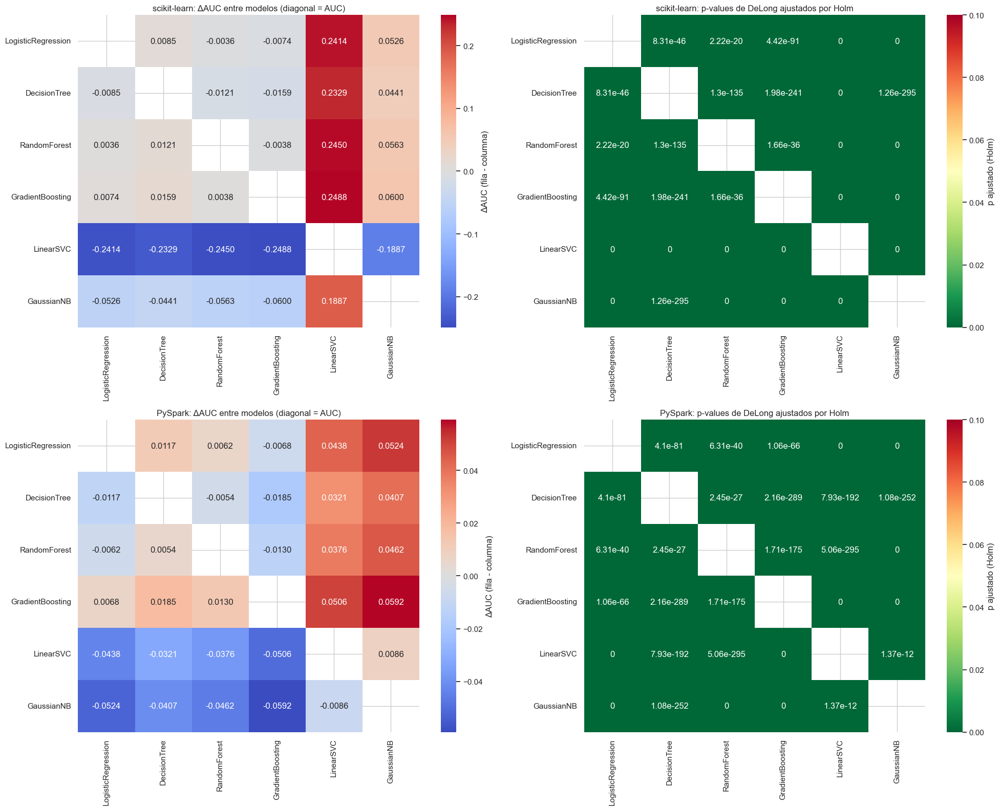
Comentario de la prueba de DeLong.
Validación: con 3 000 observaciones, la versión rápida (Sun y Xu) y la versión directa \(O(m \cdot n)\) dan exactamente los mismos AUC (diferencia 0) y la misma covarianza (diferencia del orden de \(10^{-20}\), error de redondeo), y por lo tanto el mismo p-value (0.001301). La implementación es correcta, y con los 269 mil datos cada comparación toma menos de un segundo.
Familia 1: entre entornos (Holm, α = 0.05, margen de relevancia |ΔAUC| ≥ 0.005):
LogisticRegression: ΔAUC = 0.00001, p = 0.41, no significativa. Ambos entornos producen, en la práctica, el mismo modelo.
GradientBoosting (ΔAUC = 0.0006, p ajustado = 0.006), DecisionTree (0.0032) y GaussianNB (−0.0002) tienen diferencias significativas pero no relevantes. Con 269 mil observaciones y puntuaciones muy correlacionadas entre entornos, el error estándar de la diferencia es minúsculo, así que diferencias de décimas de milésima resultan “significativas”. En la práctica los modelos son equivalentes.
RandomForest (ΔAUC = 0.0099 a favor de scikit-learn) y LinearSVC (ΔAUC = −0.198 a favor de Spark) tienen diferencias significativas y relevantes. Se explican por el grid reducido de Spark y el colapso de la pérdida hinge en liblinear, respectivamente.
Familia 2: entre modelos dentro de cada entorno. Los 15 pares son significativos en ambos entornos, pero no todos relevantes:
En scikit-learn, GradientBoosting es el mejor, pero su ventaja sobre RandomForest (0.0038) y la de RandomForest sobre LogisticRegression (0.0036) no alcanzan el margen de relevancia. Los tres modelos principales son prácticamente equivalentes: la regresión logística, mucho más simple y rápida, queda a solo 0.0074 del mejor.
En PySpark, todas las diferencias superan el margen. GradientBoosting supera a LogisticRegression por 0.0068 y a RandomForest por 0.0130. Aquí el bosque queda por debajo de la regresión logística, reflejando de nuevo su grid reducido.
Limitaciones de la prueba en este diseño:
Solo captura la variabilidad por muestreo del conjunto de prueba. No incluye la variabilidad del entrenamiento: semillas, pliegues de la validación cruzada, la aleatoriedad del bosque o las particiones de Spark. Entrenar de nuevo con otra semilla podría cambiar diferencias del orden de 0.001-0.004.
Supone observaciones independientes, pero los préstamos de un mismo periodo comparten condiciones económicas (dependencia temporal).
El AUC resume el desempeño en todos los umbrales, así que puede no reflejar el desempeño con el umbral operativo que se use para aprobar o rechazar créditos. Por eso se complementa con McNemar y bootstrap (9.10.4.6.2).
9.10.4.6.2. Pruebas complementarias: McNemar y bootstrap pareado#
Umbral de clasificación. McNemar y el F1 comparan decisiones, así que necesitan un umbral. El umbral se elige sin usar el conjunto de prueba: para cada modelo se toma el que maximiza el F1 en el conjunto de entrenamiento, con el mismo procedimiento en ambos entornos:
Se generan 199 umbrales candidatos: los cuantiles 0.5 %, 1 %, …, 99.5 % de las puntuaciones de entrenamiento del modelo.
Para cada candidato se cuentan predichos positivos y verdaderos positivos, y se calcula el F1.
Se elige el umbral con mayor F1.
Se usa F1 porque es la métrica que equilibra precision y recall de la clase minoritaria (default). El umbral 0.5 deja un recall de apenas 4-8 % (ver 9.10.4.4).
En PySpark los cuantiles se obtienen con approxQuantile (error relativo 0.001) y los conteos con una sola agregación, sin traer al driver las puntuaciones de entrenamiento. Una limitación: las puntuaciones de entrenamiento son dentro de muestra, así que en modelos que se sobreajustan (por ejemplo, un bosque con árboles de profundidad 15) el umbral puede quedar algo optimista.
NIVELES_UMBRAL = np.linspace(0.005, 0.995, 199)
def umbral_f1_sklearn(y, s):
candidatos = np.unique(np.quantile(s, NIVELES_UMBRAL))
positivos = y.sum()
mejor = (0.0, candidatos[0])
for t in candidatos:
pred = s >= t
vp = np.sum(pred & (y == 1))
f1 = 2 * vp / (pred.sum() + positivos)
mejor = max(mejor, (f1, t))
return mejor[1], mejor[0]
def umbral_f1_spark(nombre):
col_score = 'rawPrediction' if nombre == 'LinearSVC' else 'probability'
s = (resultados_spark[nombre]['modelo'].transform(train_final)
.select('default', vector_to_array(col_score)[1].alias('score'))
.persist(StorageLevel.MEMORY_AND_DISK))
candidatos = sorted(set(s.approxQuantile('score', list(NIVELES_UMBRAL), 0.001)))
expresiones = [F.sum('default').alias('positivos')]
for i, t in enumerate(candidatos):
expresiones += [F.sum(F.when(F.col('score') >= t, 1).otherwise(0)).alias(f'pp_{i}'),
F.sum(F.when((F.col('score') >= t) & (F.col('default') == 1), 1).otherwise(0)).alias(f'vp_{i}')]
fila = s.agg(*expresiones).first() # una sola fila de conteos agregados
s.unpersist()
f1s = [2 * fila[f'vp_{i}'] / (fila[f'pp_{i}'] + fila['positivos']) for i in range(len(candidatos))]
i = int(np.argmax(f1s))
return candidatos[i], f1s[i]
t0 = time.time()
filas = []
umbral_sk, umbral_sp = {}, {}
for m in nombres_modelos:
umbral_sk[m], f1_sk = umbral_f1_sklearn(y_train, scores_train_sklearn[f'score_{m}'].values)
umbral_sp[m], f1_sp = umbral_f1_spark(m)
filas.append({'modelo': m, 'umbral_sklearn': umbral_sk[m], 'F1_train_sklearn': f1_sk,
'umbral_pyspark': umbral_sp[m], 'F1_train_pyspark': f1_sp})
tabla_umbrales = pd.DataFrame(filas).set_index('modelo')
print(f'Tiempo: {time.time() - t0:.1f} s')
tabla_umbrales.round(4)
Tiempo: 107.3 s
| umbral_sklearn | F1_train_sklearn | umbral_pyspark | F1_train_pyspark | |
|---|---|---|---|---|
| modelo | ||||
| LogisticRegression | 0.2059 | 0.4294 | 0.2056 | 0.4294 |
| DecisionTree | 0.2150 | 0.4314 | 0.2145 | 0.4218 |
| RandomForest | 0.2422 | 0.5050 | 0.2049 | 0.4287 |
| GradientBoosting | 0.2197 | 0.4390 | 0.2148 | 0.4381 |
| LinearSVC | -1.0000 | 0.3317 | -1.0000 | 0.3952 |
| GaussianNB | 0.2393 | 0.3992 | 0.2370 | 0.3992 |
Comparaciones incluidas en ambas pruebas:
(i) Las 6 comparaciones entre entornos: el mismo modelo en scikit-learn y en PySpark.
(ii) En cada entorno, el par formado por los dos modelos con mayor AUC.
Se corrige con Holm dentro de cada familia, con α = 0.05.
Prueba de McNemar. Para cada par se cuentan las observaciones discordantes:
\(b\): acierta el modelo 1 y falla el modelo 2;
\(c\): falla el modelo 1 y acierta el modelo 2.
El estadístico es \(\chi^2 = (|b - c| - 1)^2 / (b + c)\), con 1 grado de libertad y corrección de continuidad. Si \(b + c < 25\) se usa la versión exacta binomial (scipy.stats.binomtest).
def mcnemar(y, pred_1, pred_2):
acierta_1, acierta_2 = pred_1 == y, pred_2 == y
b = int(np.sum(acierta_1 & ~acierta_2))
c = int(np.sum(~acierta_1 & acierta_2))
if b + c == 0:
return b, c, np.nan, 1.0, 'sin discordantes'
if b + c < 25:
return b, c, np.nan, stats.binomtest(min(b, c), b + c, 0.5).pvalue, 'exacta (binomial)'
chi2 = (abs(b - c) - 1) ** 2 / (b + c)
return b, c, chi2, stats.chi2.sf(chi2, df=1), 'chi2 con corrección'
top2_sk = list(tabla_resultados.index[:2])
top2_sp = list(tabla_resultados_spark.index[:2])
comparaciones = ([('entre entornos', f'{m}: sklearn vs PySpark', ('sk', m), ('sp', m)) for m in nombres_modelos]
+ [('top-2 dentro del entorno', f'sklearn: {top2_sk[0]} vs {top2_sk[1]}', ('sk', top2_sk[0]), ('sk', top2_sk[1])),
('top-2 dentro del entorno', f'PySpark: {top2_sp[0]} vs {top2_sp[1]}', ('sp', top2_sp[0]), ('sp', top2_sp[1]))])
def puntuacion(clave):
entorno, m = clave
return (score_sk if entorno == 'sk' else score_sp)[m]
def umbral(clave):
entorno, m = clave
return (umbral_sk if entorno == 'sk' else umbral_sp)[m]
filas = []
for familia, etiqueta, k1, k2 in comparaciones:
pred_1 = (puntuacion(k1) >= umbral(k1)).astype(int)
pred_2 = (puntuacion(k2) >= umbral(k2)).astype(int)
b, c, chi2, p, metodo = mcnemar(y_comun, pred_1, pred_2)
filas.append({'familia': familia, 'comparación': etiqueta, 'acc_1': np.mean(pred_1 == y_comun),
'acc_2': np.mean(pred_2 == y_comun), 'b': b, 'c': c, 'chi2': chi2, 'p': p, 'método': metodo})
tabla_mcnemar = pd.DataFrame(filas).set_index('comparación')
tabla_mcnemar['p_Holm'] = tabla_mcnemar.groupby('familia')['p'].transform(lambda p: holm(p.values))
tabla_mcnemar['significativa'] = np.where(tabla_mcnemar['p_Holm'] < ALFA, 'sí', 'no')
tabla_mcnemar.round(5)
| familia | acc_1 | acc_2 | b | c | chi2 | p | método | p_Holm | significativa | |
|---|---|---|---|---|---|---|---|---|---|---|
| comparación | ||||||||||
| LogisticRegression: sklearn vs PySpark | entre entornos | 0.66947 | 0.66902 | 278 | 157 | 33.10345 | 0.0 | chi2 con corrección | 0.0 | sí |
| DecisionTree: sklearn vs PySpark | entre entornos | 0.67185 | 0.63589 | 20993 | 11316 | 2897.79863 | 0.0 | chi2 con corrección | 0.0 | sí |
| RandomForest: sklearn vs PySpark | entre entornos | 0.71584 | 0.65690 | 22287 | 6429 | 8756.24909 | 0.0 | chi2 con corrección | 0.0 | sí |
| GradientBoosting: sklearn vs PySpark | entre entornos | 0.68454 | 0.67853 | 7054 | 5437 | 209.06701 | 0.0 | chi2 con corrección | 0.0 | sí |
| LinearSVC: sklearn vs PySpark | entre entornos | 0.20160 | 0.61464 | 20622 | 131757 | 81052.94008 | 0.0 | chi2 con corrección | 0.0 | sí |
| GaussianNB: sklearn vs PySpark | entre entornos | 0.62608 | 0.62274 | 1726 | 828 | 315.03876 | 0.0 | chi2 con corrección | 0.0 | sí |
| sklearn: GradientBoosting vs RandomForest | top-2 dentro del entorno | 0.68454 | 0.71584 | 7060 | 15483 | 3146.43499 | 0.0 | chi2 con corrección | 0.0 | sí |
| PySpark: GradientBoosting vs LogisticRegression | top-2 dentro del entorno | 0.67853 | 0.66902 | 12319 | 9760 | 296.36143 | 0.0 | chi2 con corrección | 0.0 | sí |
Bootstrap pareado. Se remuestrea con reemplazo el conjunto de prueba B = 2000 veces (semilla 42), usando los mismos índices para todos los modelos. En cada remuestreo se calculan AUC, AUC-PR (área bajo la curva precision-recall) y F1 (con el umbral de entrenamiento de cada modelo). Luego, para cada comparación se obtiene la diferencia media y su intervalo percentil del 95 %. Hay evidencia de diferencia cuando el intervalo no contiene el cero.
Implementación eficiente: un remuestreo con reemplazo equivale a dar a cada observación un peso igual al número de veces que fue elegida. Las puntuaciones de cada modelo se ordenan una sola vez, y en cada remuestreo solo cambian los pesos. Así, el AUC y el AUC-PR ponderados se calculan en \(O(n)\) con sumas acumuladas, en lugar de reordenar 269 mil valores 2 000 veces. Antes de usarla se verifica que, con todos los pesos iguales a 1, la implementación coincide con roc_auc_score, average_precision_score y f1_score de scikit-learn.
from sklearn.metrics import average_precision_score
class MetricasPonderadas:
"""AUC, AUC-PR y F1 con pesos de remuestreo, en O(n) por remuestreo."""
def __init__(self, y, score, umbral):
self.orden = np.argsort(-score, kind='mergesort')
s = score[self.orden]
self.y = y[self.orden].astype(float)
self.grupos = np.r_[0, np.flatnonzero(np.diff(s) != 0) + 1] # inicio de cada grupo de empates
self.pred = (s >= umbral).astype(float)
def calcular(self, w):
w = w[self.orden]
wp, wn = w * self.y, w * (1 - self.y)
P, N = np.add.reduceat(wp, self.grupos), np.add.reduceat(wn, self.grupos)
P_tot, N_tot = P.sum(), N.sum()
auc = np.sum(P * (N_tot - np.cumsum(N) + 0.5 * N)) / (P_tot * N_tot)
vp, fp = np.cumsum(P), np.cumsum(N)
precision = np.divide(vp, vp + fp, out=np.zeros_like(vp), where=(vp + fp) > 0)
auc_pr = np.sum(np.diff(np.r_[0.0, vp / P_tot]) * precision)
f1 = 2 * np.sum(wp * self.pred) / (np.sum(w * self.pred) + P_tot)
return auc, auc_pr, f1
# verificación con pesos = 1 frente a scikit-learn
m_ref = 'GradientBoosting'
calc = MetricasPonderadas(y_comun, score_sk[m_ref], umbral_sk[m_ref])
propio = calc.calcular(np.ones(len(y_comun)))
referencia = (roc_auc_score(y_comun, score_sk[m_ref]), average_precision_score(y_comun, score_sk[m_ref]),
f1_score(y_comun, score_sk[m_ref] >= umbral_sk[m_ref]))
print('Implementación propia:', np.round(propio, 10))
print('scikit-learn: ', np.round(referencia, 10))
Implementación propia: [0.7187276 0.3863651 0.43591874]
scikit-learn: [0.7187276 0.3863651 0.43591874]
B_BOOTSTRAP = 2000
claves = sorted({k for _, _, k1, k2 in comparaciones for k in (k1, k2)})
calculadoras = {k: MetricasPonderadas(y_comun, puntuacion(k), umbral(k)) for k in claves}
boot = {k: np.empty((B_BOOTSTRAP, 3)) for k in claves}
rng = np.random.default_rng(42)
n_test = len(y_comun)
t0 = time.time()
for b in range(B_BOOTSTRAP):
w = np.bincount(rng.integers(0, n_test, n_test), minlength=n_test).astype(float) # mismos índices para todos
for k, calc in calculadoras.items():
boot[k][b] = calc.calcular(w)
print(f'{B_BOOTSTRAP} remuestreos x {len(claves)} modelos en {time.time() - t0:.0f} s')
filas = []
for familia, etiqueta, k1, k2 in comparaciones:
dif = boot[k1] - boot[k2]
fila = {'familia': familia, 'comparación': etiqueta}
for j, metrica in enumerate(['AUC', 'AUC_PR', 'F1']):
li, ls = np.percentile(dif[:, j], [2.5, 97.5])
fila[f'dif_{metrica}'] = dif[:, j].mean()
fila[f'IC95_{metrica}'] = f'[{li:.4f}, {ls:.4f}]'
fila[f'evidencia_{metrica}'] = 'sí' if (li > 0 or ls < 0) else 'no'
filas.append(fila)
tabla_bootstrap = pd.DataFrame(filas).set_index('comparación')
tabla_bootstrap.round(4)
2000 remuestreos x 12 modelos en 588 s
| familia | dif_AUC | IC95_AUC | evidencia_AUC | dif_AUC_PR | IC95_AUC_PR | evidencia_AUC_PR | dif_F1 | IC95_F1 | evidencia_F1 | |
|---|---|---|---|---|---|---|---|---|---|---|
| comparación | ||||||||||
| LogisticRegression: sklearn vs PySpark | entre entornos | 0.0000 | [-0.0000, 0.0000] | no | -0.0000 | [-0.0001, -0.0000] | sí | 0.0001 | [-0.0001, 0.0003] | no |
| DecisionTree: sklearn vs PySpark | entre entornos | 0.0031 | [0.0021, 0.0041] | sí | 0.0043 | [0.0024, 0.0061] | sí | 0.0037 | [0.0019, 0.0055] | sí |
| RandomForest: sklearn vs PySpark | entre entornos | 0.0098 | [0.0093, 0.0104] | sí | 0.0116 | [0.0107, 0.0126] | sí | 0.0030 | [0.0012, 0.0049] | sí |
| GradientBoosting: sklearn vs PySpark | entre entornos | 0.0006 | [0.0002, 0.0010] | sí | 0.0018 | [0.0009, 0.0028] | sí | -0.0000 | [-0.0012, 0.0011] | no |
| LinearSVC: sklearn vs PySpark | entre entornos | -0.1976 | [-0.2017, -0.1934] | sí | -0.1399 | [-0.1436, -0.1363] | sí | -0.0629 | [-0.0653, -0.0606] | sí |
| GaussianNB: sklearn vs PySpark | entre entornos | -0.0002 | [-0.0003, -0.0002] | sí | -0.0011 | [-0.0012, -0.0010] | sí | 0.0000 | [-0.0004, 0.0005] | no |
| sklearn: GradientBoosting vs RandomForest | top-2 dentro del entorno | 0.0038 | [0.0032, 0.0044] | sí | 0.0063 | [0.0051, 0.0075] | sí | 0.0083 | [0.0066, 0.0100] | sí |
| PySpark: GradientBoosting vs LogisticRegression | top-2 dentro del entorno | 0.0068 | [0.0060, 0.0075] | sí | 0.0115 | [0.0099, 0.0132] | sí | 0.0067 | [0.0052, 0.0083] | sí |
Resumen de las tres pruebas para cada comparación. DeLong y el bootstrap del AUC evalúan lo mismo (capacidad de ordenamiento en todos los umbrales), así que deberían coincidir. McNemar y el F1 evalúan las decisiones con el umbral elegido.
filas = []
for familia, etiqueta, k1, k2 in comparaciones:
r = prueba_delong(y_comun, puntuacion(k1), puntuacion(k2))
filas.append({'comparación': etiqueta, 'familia': familia, 'ΔAUC DeLong': r['dif_AUC'], 'p DeLong': r['p']})
resumen_pruebas = pd.DataFrame(filas).set_index('comparación')
resumen_pruebas['p DeLong (Holm)'] = resumen_pruebas.groupby('familia')['p DeLong'].transform(lambda p: holm(p.values))
resumen_pruebas['DeLong signif.'] = np.where(resumen_pruebas['p DeLong (Holm)'] < ALFA, 'sí', 'no')
resumen_pruebas['bootstrap AUC: IC95'] = tabla_bootstrap['IC95_AUC']
resumen_pruebas['bootstrap AUC evid.'] = tabla_bootstrap['evidencia_AUC']
resumen_pruebas['coinciden (AUC)'] = np.where(resumen_pruebas['DeLong signif.'] == resumen_pruebas['bootstrap AUC evid.'], 'sí', 'no')
resumen_pruebas['McNemar b / c'] = tabla_mcnemar['b'].astype(str) + ' / ' + tabla_mcnemar['c'].astype(str)
resumen_pruebas['p McNemar (Holm)'] = tabla_mcnemar['p_Holm']
resumen_pruebas['McNemar signif.'] = tabla_mcnemar['significativa']
resumen_pruebas['bootstrap AUC-PR: IC95'] = tabla_bootstrap['IC95_AUC_PR']
resumen_pruebas['bootstrap F1: IC95'] = tabla_bootstrap['IC95_F1']
resumen_pruebas['F1 evid.'] = tabla_bootstrap['evidencia_F1']
resumen_pruebas.drop(columns=['p DeLong']).round(5)
| familia | ΔAUC DeLong | p DeLong (Holm) | DeLong signif. | bootstrap AUC: IC95 | bootstrap AUC evid. | coinciden (AUC) | McNemar b / c | p McNemar (Holm) | McNemar signif. | bootstrap AUC-PR: IC95 | bootstrap F1: IC95 | F1 evid. | |
|---|---|---|---|---|---|---|---|---|---|---|---|---|---|
| comparación | |||||||||||||
| LogisticRegression: sklearn vs PySpark | entre entornos | 0.00001 | 0.41296 | no | [-0.0000, 0.0000] | no | sí | 278 / 157 | 0.0 | sí | [-0.0001, -0.0000] | [-0.0001, 0.0003] | no |
| DecisionTree: sklearn vs PySpark | entre entornos | 0.00316 | 0.00000 | sí | [0.0021, 0.0041] | sí | sí | 20993 / 11316 | 0.0 | sí | [0.0024, 0.0061] | [0.0019, 0.0055] | sí |
| RandomForest: sklearn vs PySpark | entre entornos | 0.00986 | 0.00000 | sí | [0.0093, 0.0104] | sí | sí | 22287 / 6429 | 0.0 | sí | [0.0107, 0.0126] | [0.0012, 0.0049] | sí |
| GradientBoosting: sklearn vs PySpark | entre entornos | 0.00061 | 0.00649 | sí | [0.0002, 0.0010] | sí | sí | 7054 / 5437 | 0.0 | sí | [0.0009, 0.0028] | [-0.0012, 0.0011] | no |
| LinearSVC: sklearn vs PySpark | entre entornos | -0.19757 | 0.00000 | sí | [-0.2017, -0.1934] | sí | sí | 20622 / 131757 | 0.0 | sí | [-0.1436, -0.1363] | [-0.0653, -0.0606] | sí |
| GaussianNB: sklearn vs PySpark | entre entornos | -0.00024 | 0.00000 | sí | [-0.0003, -0.0002] | sí | sí | 1726 / 828 | 0.0 | sí | [-0.0012, -0.0010] | [-0.0004, 0.0005] | no |
| sklearn: GradientBoosting vs RandomForest | top-2 dentro del entorno | 0.00378 | 0.00000 | sí | [0.0032, 0.0044] | sí | sí | 7060 / 15483 | 0.0 | sí | [0.0051, 0.0075] | [0.0066, 0.0100] | sí |
| PySpark: GradientBoosting vs LogisticRegression | top-2 dentro del entorno | 0.00682 | 0.00000 | sí | [0.0060, 0.0075] | sí | sí | 12319 / 9760 | 0.0 | sí | [0.0099, 0.0132] | [0.0052, 0.0083] | sí |
Comentario de las pruebas complementarias.
Umbrales. Para los modelos con probabilidades, el umbral que maximiza el F1 en entrenamiento queda entre 0.20 y 0.24, muy cerca de la tasa de default (20 %), y es prácticamente igual en ambos entornos. Dos casos especiales:
El bosque de scikit-learn tiene un F1 de entrenamiento inflado (0.505 frente a 0.429 en Spark). Con árboles de profundidad 15 se ajusta a los datos de entrenamiento, así que su umbral (0.242) es algo optimista, como se advirtió.
En el LinearSVC de scikit-learn todas las puntuaciones valen ≈ −1, así que cualquier umbral clasifica casi todo como default (accuracy 0.20).
McNemar (comparación de decisiones):
Las 8 comparaciones son significativas tras Holm, incluida LogisticRegression entre entornos: b = 278, c = 157, es decir 435 préstamos discordantes de 269 mil (0.16 %), con accuracy de 0.6695 frente a 0.6690. DeLong no encontró diferencia en el AUC. Con un \(n\) tan grande, McNemar detecta asimetrías diminutas, en este caso por umbrales que difieren en la cuarta cifra decimal (0.2059 frente a 0.2056). Estadísticamente significativa, sin ninguna relevancia práctica.
scikit-learn, GradientBoosting frente a RandomForest: es el caso más instructivo.
DeLong y el bootstrap del AUC favorecen a GradientBoosting (ΔAUC = +0.0038), y el F1 bootstrap también (+0.0083, IC [0.0066, 0.0100]).
McNemar, en cambio, favorece al RandomForest (c = 15 483 > b = 7 060; accuracy 0.716 frente a 0.685). Su umbral más alto (0.242) predice menos defaults, y con 80 % de préstamos pagados, predecir menos positivos aumenta los aciertos.
Es la debilidad que advierte el enunciado: McNemar trata todos los errores por igual. Un falso negativo (aprobar a quien caerá en default) cuesta mucho más que un falso positivo, así que con la clase minoritaria el F1 o el AUC-PR son más informativos.
PySpark, GradientBoosting frente a LogisticRegression: las tres pruebas coinciden en que GBT es mejor en AUC, AUC-PR, F1 y aciertos (b = 12 319 > c = 9 760).
Bootstrap pareado (B = 2 000; 588 s para los 12 modelos):
Para el AUC, coincide con DeLong en las 8 comparaciones: los intervalos percentiles son prácticamente iguales a los de DeLong, por ejemplo [0.0093, 0.0104] frente a [0.0093, 0.0104] en RandomForest. Esto confirma que la aproximación asintótica de DeLong es precisa con este tamaño de muestra.
Para F1 aparecen matices que el AUC no muestra. Entre entornos, GradientBoosting y LogisticRegression no tienen diferencia de F1 (IC [−0.0012, 0.0011] y [−0.0001, 0.0003]), aunque GradientBoosting sí la tiene en AUC y los dos la tienen en McNemar. Con el umbral elegido, ambos entornos toman decisiones igual de buenas en términos de F1.
AUC-PR: sigue el mismo patrón que el AUC, con diferencias pequeñas pero detectables, por ejemplo RandomForest de scikit-learn +0.0116 sobre Spark.
Conclusión: las tres pruebas coinciden en las diferencias grandes (RandomForest y LinearSVC entre entornos, GradientBoosting sobre LogisticRegression en Spark). En las diferencias pequeñas discrepan, porque miden cosas distintas: ordenamiento (DeLong), aciertos con umbral fijo (McNemar) y métricas de la clase minoritaria (bootstrap). Con \(n\) = 269 mil, casi todo es “significativo”, y lo que decide es el tamaño del efecto frente al margen de relevancia.
9.10.4.7. Interpretabilidad con LIME#
LIME (Local Interpretable Model-agnostic Explanations) explica una predicción individual:
Genera muchas versiones perturbadas de la observación (5 000).
Obtiene la predicción del modelo para cada una.
Ajusta un modelo lineal simple, ponderado por cercanía a la observación original.
Los coeficientes de ese modelo local indican qué variables empujaron la predicción hacia default o hacia pagado.
Configuración:
Se explica el modelo con mayor AUC de cada entorno entre los que dan probabilidades. LinearSVC queda excluido porque no las produce.
Las explicaciones se construyen en las unidades originales de las variables: tasa en %, FICO en puntos, etc. La función de predicción aplica internamente el mismo escalado que se usó al entrenar. Así, reglas como “int_rate > 15.99” son interpretables.
Los indicadores binarios y las dummies se declaran como categóricas, para que LIME las perturbe solo con valores 0/1.
Se eligen dos préstamos de prueba mal clasificados por ambos modelos, con el umbral de entrenamiento de 9.10.4.6.2:
un falso negativo: un préstamo que cayó en default y el modelo consideró de bajo riesgo;
un falso positivo: un préstamo que se pagó y el modelo consideró riesgoso.
En cada caso se toma el error “más seguro” según el modelo de scikit-learn.
import shutil
from lime.lime_tabular import LimeTabularExplainer
con_prob_sp = [m for m in tabla_resultados_spark.index if m != 'LinearSVC']
nombre_lime_spark = con_prob_sp[0]
modelo_lime_spark = resultados_spark[nombre_lime_spark]['modelo']
print('Modelo explicado en scikit-learn:', nombre_lime_sklearn, f"(AUC = {resultados[nombre_lime_sklearn]['ROC_AUC']:.4f})")
print('Modelo explicado en PySpark: ', nombre_lime_spark, f"(AUC = {resultados_spark[nombre_lime_spark]['ROC_AUC']:.4f})")
pred_sk = score_sk[nombre_lime_sklearn] >= umbral_sk[nombre_lime_sklearn]
pred_sp = score_sp[nombre_lime_spark] >= umbral_sp[nombre_lime_spark]
fn_ambos = np.flatnonzero((y_comun == 1) & ~pred_sk & ~pred_sp)
fp_ambos = np.flatnonzero((y_comun == 0) & pred_sk & pred_sp)
i_fn = fn_ambos[np.argmin(score_sk[nombre_lime_sklearn][fn_ambos])]
i_fp = fp_ambos[np.argmax(score_sk[nombre_lime_sklearn][fp_ambos])]
instancias = {'Falso negativo': int(comun['id'].iloc[i_fn]), 'Falso positivo': int(comun['id'].iloc[i_fp])}
print(f'Falsos negativos comunes a ambos modelos: {len(fn_ambos):,} | falsos positivos comunes: {len(fp_ambos):,}')
print('Préstamos elegidos (id):', instancias)
Modelo explicado en scikit-learn: GradientBoosting (AUC = 0.7187)
Modelo explicado en PySpark: GradientBoosting (AUC = 0.7181)
Falsos negativos comunes a ambos modelos: 19,246 | falsos positivos comunes: 60,196
Préstamos elegidos (id): {'Falso negativo': 72744631, 'Falso positivo': 55961482}
Explicador para scikit-learn. Como el modelo está en memoria local, las estadísticas que LIME usa para perturbar (cuartiles de cada variable y frecuencias de las categóricas) se calculan con el conjunto de entrenamiento completo.
n_num = len(vars_num)
indices_categoricas = [vars_num.index(v) for v in ['tiene_delinq', 'tiene_pub_rec', 'nunca_moroso',
'emp_length_faltante']] + list(range(n_num, X_train.shape[1]))
X_train_original = np.hstack([escalador.inverse_transform(X_train[:, :n_num]),
X_train[:, n_num:]]).astype(np.float32) # float32: la mitad de memoria
def predecir_sklearn(Z):
Z_esc = np.hstack([escalador.transform(Z[:, :n_num]), Z[:, n_num:]]).astype(np.float32)
return modelo_lime_sklearn.predict_proba(Z_esc)
explicador_sk = LimeTabularExplainer(X_train_original, feature_names=nombres_variables,
class_names=['Fully Paid', 'Charged Off'],
categorical_features=indices_categoricas,
discretize_continuous=True, random_state=42)
del X_train_original
gc.collect()
posicion_test = {v: k for k, v in enumerate(id_test)}
explicaciones_sk = {}
for tipo, id_prestamo in instancias.items():
fila = X_test[posicion_test[id_prestamo]]
x = np.r_[escalador.inverse_transform(fila[None, :n_num])[0], fila[n_num:]]
t0 = time.time()
explicaciones_sk[tipo] = explicador_sk.explain_instance(x, predecir_sklearn, num_features=10, num_samples=5000)
print(f'{tipo} (id {id_prestamo}): P(default) = {predecir_sklearn(x[None, :])[0, 1]:.3f} '
f'| umbral = {umbral_sk[nombre_lime_sklearn]:.3f} | {time.time() - t0:.1f} s')
del explicador_sk
gc.collect()
Falso negativo (id 72744631): P(default) = 0.020 | umbral = 0.220 | 0.2 s
Falso positivo (id 55961482): P(default) = 0.815 | umbral = 0.220 | 0.1 s
0
Explicador para PySpark. Aquí aparecen las limitaciones de LIME en un entorno distribuido:
LIME opera en memoria local. Necesita los datos de entrenamiento como un arreglo de NumPy para calcular sus estadísticas, pero el conjunto de entrenamiento de Spark está distribuido y no se permite traerlo completo al driver. Por eso se usa una muestra aleatoria del 2 % del entrenamiento (
sample(fraction=0.02, seed=42), unas 21 mil filas). Es la única forma de usar LIME sin violar la restricción, y hace que las estadísticas de perturbación sean aproximadas.Cada explicación exige llevar datos locales de vuelta a Spark. LIME llama a la función de predicción con 5 000 filas perturbadas que están en la memoria de Python. Hay que convertirlas en un DataFrame de Spark, pasarlas por el modelo y traer las probabilidades, con la sobrecarga de serialización y planificación de Spark. En este equipo, además,
spark.createDataFramecon datos de Python no funciona: requiere los procesos auxiliares de Python de Spark (Python workers), que en Windows con PySpark 4.0.1 no logran iniciarse. Por eso las perturbaciones se escriben en un CSV temporal, que Spark lee directamente desde la JVM y ensambla conVectorAssembler. Con muchas instancias a explicar, este costo se multiplica.
muestra_lime = train_final.sample(fraction=0.02, seed=42).select('features').toPandas() # muestra del 2 %
media_sp, desv_sp = escalador_spark.mean.toArray(), escalador_spark.std.toArray()
X_muestra_sp = np.vstack([v.toArray() for v in muestra_lime['features']])
X_muestra_sp[:, :n_num] = X_muestra_sp[:, :n_num] * desv_sp + media_sp # a unidades originales
print(f'Muestra para LIME (PySpark): {X_muestra_sp.shape[0]:,} filas')
carpeta_lime = os.path.join('resultados', 'lime_tmp')
os.makedirs(carpeta_lime, exist_ok=True)
d_sp = len(nombres_variables_spark)
esquema_lime = ', '.join(f'c{j} DOUBLE' for j in range(d_sp))
ensamblador_lime = VectorAssembler(inputCols=[f'c{j}' for j in range(d_sp)], outputCol='features')
llamadas_lime = [0]
def predecir_spark(Z):
Z_esc = Z.copy()
Z_esc[:, :n_num] = (Z[:, :n_num] - media_sp) / desv_sp # mismo escalado que en el entrenamiento
llamadas_lime[0] += 1
ruta = os.path.join(carpeta_lime, f'perturbaciones_{llamadas_lime[0]}.csv')
pd.DataFrame(Z_esc).to_csv(ruta, index=False, header=False) # datos locales -> archivo
df_lime = ensamblador_lime.transform(spark.read.csv(ruta, schema=esquema_lime))
p = modelo_lime_spark.transform(df_lime).select(vector_to_array('probability').alias('p')).toPandas()
return np.vstack(p['p'].values)
indices_categoricas_sp = [vars_num_s.index(v) for v in ['tiene_delinq', 'tiene_pub_rec', 'nunca_moroso',
'emp_length_faltante']] + list(range(n_num, len(nombres_variables_spark)))
explicador_sp = LimeTabularExplainer(X_muestra_sp, feature_names=nombres_variables_spark,
class_names=['Fully Paid', 'Charged Off'],
categorical_features=indices_categoricas_sp,
discretize_continuous=True, random_state=42)
explicaciones_sp = {}
for tipo, id_prestamo in instancias.items():
v = test_final.filter(F.col('id') == id_prestamo).select('features').first()['features'].toArray() # 1 fila
x = v.copy()
x[:n_num] = v[:n_num] * desv_sp + media_sp
t0 = time.time()
explicaciones_sp[tipo] = explicador_sp.explain_instance(x, predecir_spark, num_features=10, num_samples=5000)
print(f'{tipo} (id {id_prestamo}): P(default) = {predecir_spark(x[None, :])[0, 1]:.3f} '
f'| umbral = {umbral_sp[nombre_lime_spark]:.3f} | {time.time() - t0:.1f} s')
shutil.rmtree(carpeta_lime, ignore_errors=True)
Muestra para LIME (PySpark): 21,829 filas
Falso negativo (id 72744631): P(default) = 0.024 | umbral = 0.215 | 4.2 s
Falso positivo (id 55961482): P(default) = 0.870 | umbral = 0.215 | 2.8 s
Variables más influyentes en cada predicción. Las barras rojas empujan hacia default y las azules hacia pagado:
fig, axes = plt.subplots(2, 2, figsize=(20, 11))
for fila, tipo in enumerate(instancias):
for col, (entorno, explicaciones, nombre) in enumerate([('scikit-learn', explicaciones_sk, nombre_lime_sklearn),
('PySpark', explicaciones_sp, nombre_lime_spark)]):
exp = explicaciones[tipo]
lista = exp.as_list()[::-1]
ax = axes[fila, col]
ax.barh([r for r, _ in lista], [p for _, p in lista],
color=['indianred' if p > 0 else 'steelblue' for _, p in lista])
ax.axvline(0, color='black', lw=0.8)
ax.set_title(f'{tipo} (id {instancias[tipo]}) - {entorno}: {nombre}\n'
f'P(default) local = {exp.local_pred[0]:.3f} | modelo = {exp.predict_proba[1]:.3f}')
ax.set_xlabel('peso en el modelo lineal local')
plt.tight_layout()
plt.show()
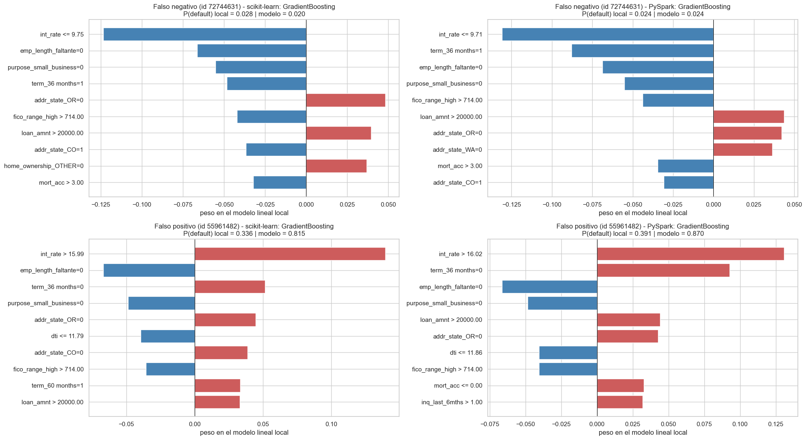
filas = []
for tipo in instancias:
for entorno, explicaciones in [('scikit-learn', explicaciones_sk), ('PySpark', explicaciones_sp)]:
exp = explicaciones[tipo]
for regla, peso in exp.as_list():
filas.append({'instancia': tipo, 'entorno': entorno, 'regla': regla, 'peso': peso})
filas.append({'instancia': tipo, 'entorno': entorno, 'regla': '(R² del modelo local)', 'peso': exp.score})
tabla_lime = pd.DataFrame(filas)
with pd.option_context('display.max_rows', 100):
display(tabla_lime.round(4))
| instancia | entorno | regla | peso | |
|---|---|---|---|---|
| 0 | Falso negativo | scikit-learn | int_rate <= 9.75 | -0.1236 |
| 1 | Falso negativo | scikit-learn | emp_length_faltante=0 | -0.0664 |
| 2 | Falso negativo | scikit-learn | purpose_small_business=0 | -0.0552 |
| 3 | Falso negativo | scikit-learn | term_36 months=1 | -0.0484 |
| 4 | Falso negativo | scikit-learn | addr_state_OR=0 | 0.0481 |
| 5 | Falso negativo | scikit-learn | fico_range_high > 714.00 | -0.0422 |
| 6 | Falso negativo | scikit-learn | loan_amnt > 20000.00 | 0.0394 |
| 7 | Falso negativo | scikit-learn | addr_state_CO=1 | -0.0368 |
| 8 | Falso negativo | scikit-learn | home_ownership_OTHER=0 | 0.0368 |
| 9 | Falso negativo | scikit-learn | mort_acc > 3.00 | -0.0321 |
| 10 | Falso negativo | scikit-learn | (R² del modelo local) | 0.4523 |
| 11 | Falso negativo | PySpark | int_rate <= 9.71 | -0.1310 |
| 12 | Falso negativo | PySpark | term_36 months=1 | -0.0879 |
| 13 | Falso negativo | PySpark | emp_length_faltante=0 | -0.0689 |
| 14 | Falso negativo | PySpark | purpose_small_business=0 | -0.0552 |
| 15 | Falso negativo | PySpark | fico_range_high > 714.00 | -0.0439 |
| 16 | Falso negativo | PySpark | loan_amnt > 20000.00 | 0.0436 |
| 17 | Falso negativo | PySpark | addr_state_OR=0 | 0.0422 |
| 18 | Falso negativo | PySpark | addr_state_WA=0 | 0.0365 |
| 19 | Falso negativo | PySpark | mort_acc > 3.00 | -0.0344 |
| 20 | Falso negativo | PySpark | addr_state_CO=1 | -0.0308 |
| 21 | Falso negativo | PySpark | (R² del modelo local) | 0.5085 |
| 22 | Falso positivo | scikit-learn | int_rate > 15.99 | 0.1393 |
| 23 | Falso positivo | scikit-learn | emp_length_faltante=0 | -0.0670 |
| 24 | Falso positivo | scikit-learn | term_36 months=0 | 0.0513 |
| 25 | Falso positivo | scikit-learn | purpose_small_business=0 | -0.0489 |
| 26 | Falso positivo | scikit-learn | addr_state_OR=0 | 0.0447 |
| 27 | Falso positivo | scikit-learn | dti <= 11.79 | -0.0396 |
| 28 | Falso positivo | scikit-learn | addr_state_CO=0 | 0.0387 |
| 29 | Falso positivo | scikit-learn | fico_range_high > 714.00 | -0.0356 |
| 30 | Falso positivo | scikit-learn | term_60 months=1 | 0.0332 |
| 31 | Falso positivo | scikit-learn | loan_amnt > 20000.00 | 0.0330 |
| 32 | Falso positivo | scikit-learn | (R² del modelo local) | 0.5311 |
| 33 | Falso positivo | PySpark | int_rate > 16.02 | 0.1307 |
| 34 | Falso positivo | PySpark | term_36 months=0 | 0.0928 |
| 35 | Falso positivo | PySpark | emp_length_faltante=0 | -0.0665 |
| 36 | Falso positivo | PySpark | purpose_small_business=0 | -0.0485 |
| 37 | Falso positivo | PySpark | loan_amnt > 20000.00 | 0.0442 |
| 38 | Falso positivo | PySpark | addr_state_OR=0 | 0.0426 |
| 39 | Falso positivo | PySpark | dti <= 11.86 | -0.0407 |
| 40 | Falso positivo | PySpark | fico_range_high > 714.00 | -0.0406 |
| 41 | Falso positivo | PySpark | mort_acc <= 0.00 | 0.0327 |
| 42 | Falso positivo | PySpark | inq_last_6mths > 1.00 | 0.0318 |
| 43 | Falso positivo | PySpark | (R² del modelo local) | 0.5252 |
Comentario de LIME.
En ambos entornos se explicó el GradientBoosting (el de mayor AUC con probabilidades: 0.7187 en sklearn y 0.7181 en Spark), sobre los mismos dos préstamos, mal clasificados por los dos modelos.
Falso negativo (id 72744631, cayó en default, P(default) ≈ 0.02 en ambos entornos). El modelo lo consideró de muy bajo riesgo:
la razón principal es una tasa de interés baja (≤ 9.75 %), que es la variable más asociada al default en el EDA;
le siguen el plazo de 36 meses, haber reportado la antigüedad laboral (
emp_length_faltante = 0), que el propósito no seasmall_business, un FICO > 714 y más de 3 hipotecas;solo el monto alto (> 20 000 USD) empuja hacia el default.
Es un perfil “prime” que igual cayó en default. La causa probablemente no está en los datos de la solicitud (pérdida de empleo, un evento médico…), y ningún modelo puede anticiparla con estas variables.
Falso positivo (id 55961482, se pagó, P(default) = 0.82 en sklearn y 0.87 en Spark):
pesan hacia el riesgo una tasa > 16 %, el plazo de 60 meses y el monto > 20 000 USD (en Spark también ninguna hipoteca y más de una consulta de crédito reciente);
a favor pesan el FICO > 714, un DTI bajo (≤ 11.8) y la antigüedad laboral reportada.
El prestatario pagó pese al perfil de riesgo.
Coherencia entre entornos: las variables y los signos de ambas explicaciones son casi los mismos (tasa, plazo, antigüedad laboral, propósito, FICO, monto). Los dos GBT aprendieron la misma relación, lo que es consistente con su AUC casi idéntico.
Limitaciones observadas:
El R² del modelo lineal local es solo 0.45-0.53, así que la aproximación lineal explica apenas la mitad del comportamiento local del modelo.
En el falso positivo, la predicción local (0.34-0.39) subestima mucho la del modelo (0.82-0.87): cerca de los extremos, un modelo lineal no reproduce bien las probabilidades.
Algunas reglas con dummies, como
addr_state_OR=0empujando hacia el default, son artefactos del muestreo de perturbaciones y no deben interpretarse como causas.Las explicaciones dependen de la discretización en cuartiles y de la semilla.
Limitaciones en el entorno distribuido:
Para Spark hubo que traer una muestra del 2 % del entrenamiento al driver, porque LIME trabaja en memoria local.
Hubo que pasar las 5 000 perturbaciones por un CSV intermedio, ya que los Python workers no funcionan en este equipo.
Cada explicación tardó 3-4 s en Spark frente a 0.1-0.2 s en scikit-learn, unas 20 veces más. Para explicar miles de préstamos, este costo sería prohibitivo en Spark, a menos que se use una versión distribuida de las explicaciones.
9.10.4.8. Comparación de Resultados#
Métricas de los seis modelos en ambos entornos (conjunto de prueba, umbral por defecto):
metricas_cols = ['AUC_cv', 'ROC_AUC', 'Accuracy', 'Precision', 'Recall', 'F1']
comparacion = pd.concat({'scikit-learn': tabla_resultados[metricas_cols].astype(float),
'PySpark': tabla_resultados_spark[metricas_cols].astype(float)}, axis=1)
comparacion = comparacion.swaplevel(axis=1).sort_index(axis=1, level=0)
comparacion = comparacion.reindex(nombres_modelos)
comparacion.round(4)
| AUC_cv | Accuracy | F1 | Precision | ROC_AUC | Recall | |||||||
|---|---|---|---|---|---|---|---|---|---|---|---|---|
| PySpark | scikit-learn | PySpark | scikit-learn | PySpark | scikit-learn | PySpark | scikit-learn | PySpark | scikit-learn | PySpark | scikit-learn | |
| LogisticRegression | 0.7112 | 0.7097 | 0.8021 | 0.8021 | 0.1449 | 0.1444 | 0.5273 | 0.5271 | 0.7113 | 0.7113 | 0.0840 | 0.0836 |
| DecisionTree | 0.6998 | 0.6967 | 0.8009 | 0.8009 | 0.1177 | 0.1194 | 0.5105 | 0.5104 | 0.6997 | 0.7028 | 0.0665 | 0.0676 |
| RandomForest | 0.7065 | 0.7117 | 0.8013 | 0.8027 | 0.0192 | 0.0712 | 0.6550 | 0.5904 | 0.7051 | 0.7150 | 0.0098 | 0.0379 |
| GradientBoosting | 0.7173 | 0.7148 | 0.8035 | 0.8039 | 0.1424 | 0.1310 | 0.5533 | 0.5670 | 0.7181 | 0.7187 | 0.0817 | 0.0740 |
| LinearSVC | 0.6511 | 0.5459 | 0.8004 | 0.8004 | 0.0000 | 0.0000 | 0.0000 | 0.0000 | 0.6675 | 0.4700 | 0.0000 | 0.0000 |
| GaussianNB | 0.6596 | 0.6579 | 0.6961 | 0.6973 | 0.3837 | 0.3829 | 0.3223 | 0.3229 | 0.6589 | 0.6587 | 0.4738 | 0.4704 |
fig, ax = plt.subplots(figsize=(12, 5))
aucs_comp = pd.DataFrame({'scikit-learn': pd.Series(aucs_sk), 'PySpark': pd.Series(aucs_sp)}).reindex(nombres_modelos)
aucs_comp.plot(kind='bar', ax=ax, color=['steelblue', 'darkorange'], width=0.75)
for cont in ax.containers:
ax.bar_label(cont, fmt='%.4f', fontsize=8)
ax.set_ylim(0.4, 0.75)
ax.set_ylabel('ROC AUC (test)')
ax.set_title('ROC AUC por modelo y entorno')
plt.xticks(rotation=0)
plt.show()
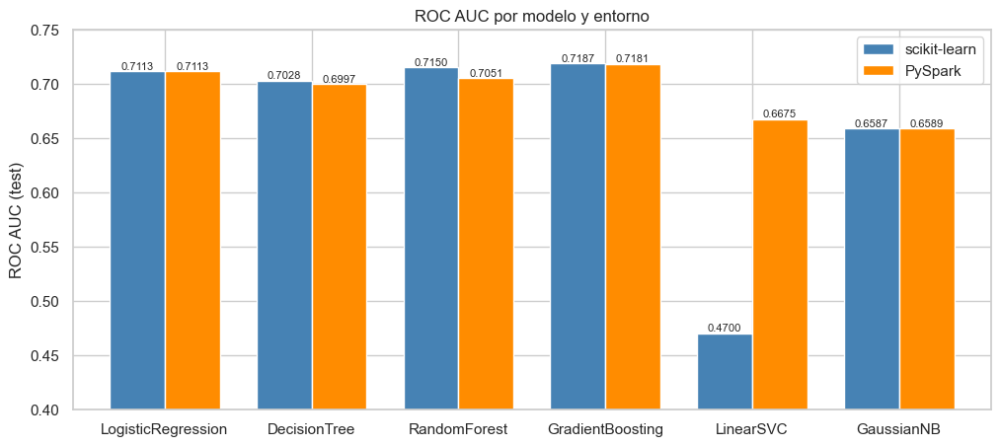
Tiempos de cómputo por modelo y por entorno.
Preprocesamiento:
pandas/scikit-learn: lectura del CSV completo, que en este cuaderno incluye los conteos del EDA, más partición, variables y transformadores;
PySpark: lectura, variables,
Pipeliney caché.
Entrenamiento: búsqueda con validación cruzada de 3 pliegues más el reentrenamiento final.
Predicción: sobre las 269 mil observaciones de prueba. En PySpark se reporta aparte la transferencia al driver de
id,defaulty la puntuación.
Recordatorio: scikit-learn usó 4 procesos en paralelo (n_jobs=4) y Spark usó los 12 núcleos lógicos (local[*]).
tiempos_prep = pd.DataFrame({'lectura del CSV (s)': [t_carga_pandas, t_carga_spark],
'resto del preprocesamiento (s)': [t_prep_sklearn, t_prep_spark - t_carga_spark]},
index=['scikit-learn (pandas)', 'PySpark'])
tiempos_prep['total (s)'] = tiempos_prep.sum(axis=1)
display(tiempos_prep.round(1))
tiempos = pd.DataFrame({
'entrenamiento sklearn (s)': tabla_resultados['t_entrenamiento_s'].astype(float),
'entrenamiento PySpark (s)': tabla_resultados_spark['t_entrenamiento_s'].astype(float),
'predicción sklearn (s)': tabla_resultados['t_prediccion_s'].astype(float),
'predicción PySpark (s)': tabla_resultados_spark['t_prediccion_s'].astype(float),
'transferencia PySpark (s)': tabla_resultados_spark['t_transferencia_s'].astype(float)}).reindex(nombres_modelos)
tiempos['entrenamiento: sklearn / PySpark'] = tiempos['entrenamiento sklearn (s)'] / tiempos['entrenamiento PySpark (s)']
tiempos.loc['TOTAL'] = tiempos.sum()
tiempos.loc['TOTAL', 'entrenamiento: sklearn / PySpark'] = (tiempos.loc['TOTAL', 'entrenamiento sklearn (s)']
/ tiempos.loc['TOTAL', 'entrenamiento PySpark (s)'])
tiempos.round(2)
| lectura del CSV (s) | resto del preprocesamiento (s) | total (s) | |
|---|---|---|---|
| scikit-learn (pandas) | 44.2 | 11.3 | 55.5 |
| PySpark | 16.5 | 223.4 | 239.9 |
| entrenamiento sklearn (s) | entrenamiento PySpark (s) | predicción sklearn (s) | predicción PySpark (s) | transferencia PySpark (s) | entrenamiento: sklearn / PySpark | |
|---|---|---|---|---|---|---|
| LogisticRegression | 65.00 | 328.10 | 0.20 | 24.86 | 1.72 | 0.20 |
| DecisionTree | 61.18 | 222.80 | 0.09 | 4.07 | 1.91 | 0.27 |
| RandomForest | 801.68 | 2051.15 | 9.90 | 39.17 | 4.32 | 0.39 |
| GradientBoosting | 6239.35 | 10435.48 | 2.01 | 28.32 | 1.97 | 0.60 |
| LinearSVC | 193.59 | 900.64 | 0.52 | 25.83 | 1.61 | 0.21 |
| GaussianNB | 6.19 | 87.38 | 1.42 | 24.03 | 1.98 | 0.07 |
| TOTAL | 7366.99 | 14025.55 | 14.14 | 146.28 | 13.51 | 0.53 |
fig, axes = plt.subplots(1, 2, figsize=(18, 5.5))
t_plot = tiempos.drop(index='TOTAL')
t_plot[['entrenamiento sklearn (s)', 'entrenamiento PySpark (s)']].plot(kind='bar', ax=axes[0], logy=True,
color=['steelblue', 'darkorange'], width=0.75)
axes[0].set_title('Tiempo de entrenamiento (CV + ajuste final), escala log')
axes[0].set_ylabel('segundos')
t_plot[['predicción sklearn (s)', 'predicción PySpark (s)']].plot(kind='bar', ax=axes[1], logy=True,
color=['steelblue', 'darkorange'], width=0.75)
axes[1].set_title('Tiempo de predicción sobre test, escala log')
for ax in axes:
ax.tick_params(axis='x', rotation=20)
plt.tight_layout()
plt.show()
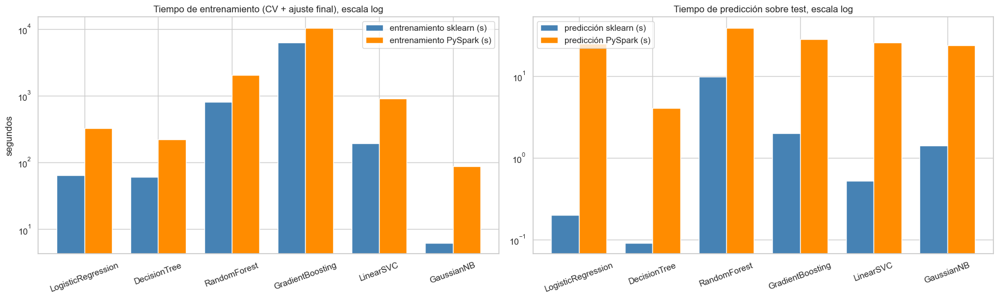
Curvas ROC (una figura por entorno, con los seis modelos superpuestos):
fig, axes = plt.subplots(1, 2, figsize=(18, 7.5))
for ax, (entorno, puntuaciones, aucs) in zip(axes, [('scikit-learn', score_sk, aucs_sk), ('PySpark', score_sp, aucs_sp)]):
for m in sorted(nombres_modelos, key=lambda m: -aucs[m]):
fpr, tpr, _ = roc_curve(y_comun, puntuaciones[m])
ax.plot(fpr, tpr, label=f'{m} (AUC = {aucs[m]:.4f})')
ax.plot([0, 1], [0, 1], 'k--', lw=1)
ax.set_title(f'Curvas ROC - {entorno}')
ax.set_xlabel('Tasa de falsos positivos')
ax.set_ylabel('Tasa de verdaderos positivos')
ax.legend(loc='lower right')
plt.tight_layout()
plt.show()
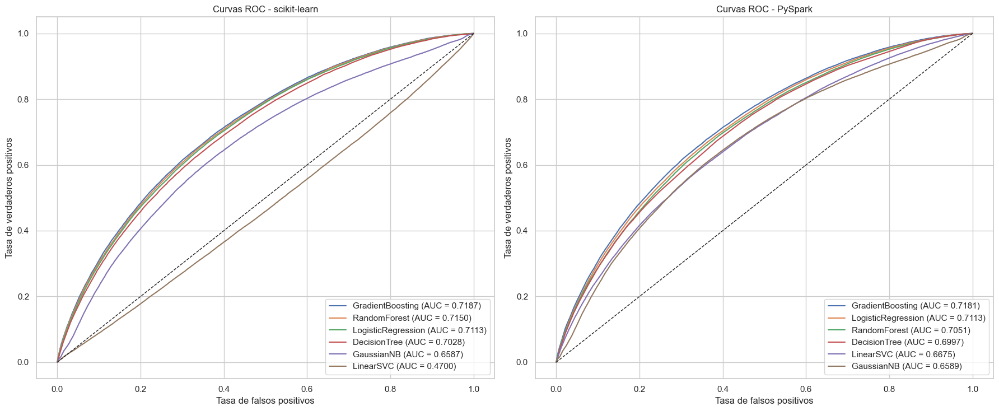
Resultados de la prueba de DeLong (AUC, IC del 95 % y p-value ajustado por Holm) y de las pruebas complementarias. Los mapas de calor por entorno están en 9.10.4.6.1. Aquí se añade el mapa de calor de las comparaciones entre entornos.
display(delong_entornos[['AUC_1', 'IC95_1', 'AUC_2', 'IC95_2', 'dif_AUC', 'IC95_dif', 'p_Holm',
'significativa', 'relevante']]
.rename(columns={'AUC_1': 'AUC sklearn', 'IC95_1': 'IC95 sklearn', 'AUC_2': 'AUC PySpark',
'IC95_2': 'IC95 PySpark'}).round(5))
fig, axes = plt.subplots(1, 2, figsize=(16, 4))
sns.heatmap(delong_entornos[['dif_AUC']].T, annot=True, fmt='.4f', cmap='coolwarm', center=0, ax=axes[0],
cbar_kws={'label': 'ΔAUC (sklearn - PySpark)'})
axes[0].set_title('DeLong entre entornos: ΔAUC')
sns.heatmap(delong_entornos[['p_Holm']].T, annot=True, fmt='.3g', cmap='RdYlGn_r', vmin=0, vmax=0.1, ax=axes[1],
cbar_kws={'label': 'p ajustado (Holm)'})
axes[1].set_title('DeLong entre entornos: p ajustado')
for ax in axes:
ax.tick_params(axis='x', rotation=20)
plt.tight_layout()
plt.show()
print('Resumen de las tres pruebas (DeLong, McNemar y bootstrap pareado):')
display(resumen_pruebas.drop(columns=['p DeLong']).round(5))
| AUC sklearn | IC95 sklearn | AUC PySpark | IC95 PySpark | dif_AUC | IC95_dif | p_Holm | significativa | relevante | |
|---|---|---|---|---|---|---|---|---|---|
| comparación | |||||||||
| LogisticRegression | 0.71131 | [0.7089, 0.7137] | 0.71130 | [0.7089, 0.7137] | 0.00001 | [-0.0000, 0.0000] | 0.41296 | no | no |
| DecisionTree | 0.70281 | [0.7004, 0.7052] | 0.69965 | [0.6972, 0.7021] | 0.00316 | [0.0022, 0.0041] | 0.00000 | sí | no |
| RandomForest | 0.71495 | [0.7126, 0.7173] | 0.70510 | [0.7027, 0.7075] | 0.00986 | [0.0093, 0.0104] | 0.00000 | sí | sí |
| GradientBoosting | 0.71873 | [0.7164, 0.7211] | 0.71812 | [0.7158, 0.7205] | 0.00061 | [0.0002, 0.0010] | 0.00649 | sí | no |
| LinearSVC | 0.46996 | [0.4672, 0.4727] | 0.66753 | [0.6650, 0.6701] | -0.19757 | [-0.2018, -0.1934] | 0.00000 | sí | sí |
| GaussianNB | 0.65870 | [0.6561, 0.6613] | 0.65893 | [0.6564, 0.6615] | -0.00024 | [-0.0003, -0.0002] | 0.00000 | sí | no |
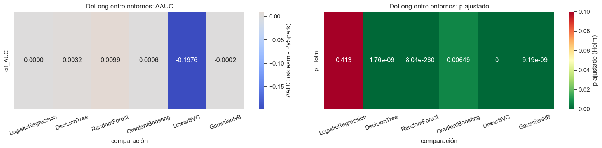
Resumen de las tres pruebas (DeLong, McNemar y bootstrap pareado):
| familia | ΔAUC DeLong | p DeLong (Holm) | DeLong signif. | bootstrap AUC: IC95 | bootstrap AUC evid. | coinciden (AUC) | McNemar b / c | p McNemar (Holm) | McNemar signif. | bootstrap AUC-PR: IC95 | bootstrap F1: IC95 | F1 evid. | |
|---|---|---|---|---|---|---|---|---|---|---|---|---|---|
| comparación | |||||||||||||
| LogisticRegression: sklearn vs PySpark | entre entornos | 0.00001 | 0.41296 | no | [-0.0000, 0.0000] | no | sí | 278 / 157 | 0.0 | sí | [-0.0001, -0.0000] | [-0.0001, 0.0003] | no |
| DecisionTree: sklearn vs PySpark | entre entornos | 0.00316 | 0.00000 | sí | [0.0021, 0.0041] | sí | sí | 20993 / 11316 | 0.0 | sí | [0.0024, 0.0061] | [0.0019, 0.0055] | sí |
| RandomForest: sklearn vs PySpark | entre entornos | 0.00986 | 0.00000 | sí | [0.0093, 0.0104] | sí | sí | 22287 / 6429 | 0.0 | sí | [0.0107, 0.0126] | [0.0012, 0.0049] | sí |
| GradientBoosting: sklearn vs PySpark | entre entornos | 0.00061 | 0.00649 | sí | [0.0002, 0.0010] | sí | sí | 7054 / 5437 | 0.0 | sí | [0.0009, 0.0028] | [-0.0012, 0.0011] | no |
| LinearSVC: sklearn vs PySpark | entre entornos | -0.19757 | 0.00000 | sí | [-0.2017, -0.1934] | sí | sí | 20622 / 131757 | 0.0 | sí | [-0.1436, -0.1363] | [-0.0653, -0.0606] | sí |
| GaussianNB: sklearn vs PySpark | entre entornos | -0.00024 | 0.00000 | sí | [-0.0003, -0.0002] | sí | sí | 1726 / 828 | 0.0 | sí | [-0.0012, -0.0010] | [-0.0004, 0.0005] | no |
| sklearn: GradientBoosting vs RandomForest | top-2 dentro del entorno | 0.00378 | 0.00000 | sí | [0.0032, 0.0044] | sí | sí | 7060 / 15483 | 0.0 | sí | [0.0051, 0.0075] | [0.0066, 0.0100] | sí |
| PySpark: GradientBoosting vs LogisticRegression | top-2 dentro del entorno | 0.00682 | 0.00000 | sí | [0.0060, 0.0075] | sí | sí | 12319 / 9760 | 0.0 | sí | [0.0099, 0.0132] | [0.0052, 0.0083] | sí |
Comentario de la comparación de resultados.
Precisión:
El mejor modelo en ambos entornos es GradientBoosting, con AUC de 0.7187 (sklearn) y 0.7181 (PySpark). La diferencia (0.0006) es estadísticamente significativa pero no relevante.
LogisticRegression y GaussianNB son prácticamente idénticos entre entornos, y DecisionTree difiere en 0.003.
Las diferencias relevantes están en RandomForest (+0.0099 para sklearn, por el grid reducido de Spark y la discretización) y en LinearSVC (+0.198 para Spark, por el colapso de la pérdida hinge en liblinear).
En términos de precisión, ningún entorno es claramente superior: con el mismo algoritmo y los mismos hiperparámetros, ambos producen modelos equivalentes.
Velocidad: en este equipo scikit-learn fue más rápido en todo, salvo en la lectura del CSV.
Etapa
scikit-learn
PySpark
Preprocesamiento
56 s
240 s
Entrenamiento de los 6 modelos
7 367 s (~2.0 h)
14 026 s (~3.9 h)
Predicción
14 s
146 s, más 14 s de transferencia al driver
Spark fue entre 1.7 y 14 veces más lento según el modelo. La diferencia más pequeña fue en gradient boosting (6 239 s frente a 10 435 s) y la mayor en Naive Bayes (6 s frente a 87 s).
Ojo: los tiempos de scikit-learn se midieron con
n_jobs=4y los de Spark con 12 núcleos, y ambos con el equipo cerca del límite de RAM.
Por qué PySpark no fue más rápido:
El dataset cabe en la memoria de un solo equipo. La matriz de entrenamiento ocupa 255 MB, así que scikit-learn trabaja directamente sobre arreglos de NumPy.
En modo local, Spark no tiene más recursos que scikit-learn, pero sí más costos fijos: planificar tareas en cada iteración, serializar datos entre la JVM y Python, y usar objetos Java por fila y por nodo.
El
CrossValidatorentrena las combinaciones una tras otra (parallelism=1).La memoria disponible obligó a usar 4 GB de heap y a paginar a disco.
Capacidad de cómputo insuficiente: varias decisiones del proyecto se deben a los límites del hardware (7.7 GB de RAM, un solo equipo):
n_jobs=4en scikit-learn;4 GB de heap y
maxMemoryInMB=32en Spark;temporales de Spark en otro disco;
la exclusión de RandomForest 50 × 15 y 100 × 15 en Spark, que habrían tomado unas 6 horas adicionales.
Con más memoria (o un clúster) el grid de Spark podría completarse, y la ventaja de Spark aparecería cuando los datos no cupieran en la memoria de un solo equipo. Estos puntos se retoman en la reflexión crítica del entregable.
train_final.unpersist()
test_final.unpersist()
spark.stop()
print('Sesión de Spark cerrada.')
Sesión de Spark cerrada.
9.10.5. Reflexión crítica#
1. ¿Qué entorno fue más rápido y por qué?
scikit-learn, en todas las etapas salvo la lectura del CSV:
Etapa |
scikit-learn |
PySpark |
|---|---|---|
Lectura del CSV |
44 s |
16.5 s |
Preprocesamiento completo |
56 s |
240 s |
Entrenamiento de los 6 modelos (CV + ajuste final) |
2.0 h |
3.9 h |
Predicción |
14 s |
146 s |
Las razones:
Tamaño del dataset: 1.3 millones de filas y 62 variables ocupan solo 255 MB. Caben de sobra en la memoria de un solo equipo, donde NumPy opera sin costos de coordinación.
Modo local: Spark no tiene más núcleos ni más memoria que scikit-learn. Además paga por planificar tareas en cada iteración, serializar datos entre la JVM y Python y representar filas y nodos de árboles como objetos Java.
Configuración de Spark: con las 400 particiones del enunciado, el entrenamiento fue de 3 a 6 veces más lento que con 48, porque cada partición quedaba con muy pocas filas.
en conclusion, la rapidez esperada de pyspark no se logro encontrar, sin embargo esto no se debe directamente a la potencia de pyspark sino por su configuracion y que la maquina donde se opero no permitio que este fuese utilizado a su maximo potencial. sin embargo probablemente esto no de problemas en un diferente entorno mas adaptado a Pyspark 2. ¿Cuál fue más preciso?
Ninguno de forma clara. El mejor modelo en ambos entornos fue gradient boosting (AUC 0.7187 en scikit-learn y 0.7181 en PySpark), con una diferencia estadísticamente significativa pero sin relevancia práctica. La regresión logística y Naive Bayes dieron prácticamente lo mismo.
scikit-learn fue mejor en RandomForest, porque Spark usó un grid reducido. PySpark fue mejor en LinearSVC, porque en scikit-learn ese modelo colapsa. Con el mismo algoritmo y los mismos hiperparámetros, los dos entornos producen modelos equivalentes.
3. ¿Qué diferencias de AUC fueron significativas tras la corrección de Holm y cuáles son relevantes en la práctica?
Con 269 mil observaciones de prueba casi todo es significativo, así que la relevancia se juzgó con el margen |ΔAUC| ≥ 0.005.
Entre entornos:
LogisticRegression no es significativa.
GradientBoosting (0.0006), DecisionTree (0.0032) y GaussianNB (0.0002) son significativas pero no relevantes.
RandomForest (0.0099) y LinearSVC (0.198) son relevantes.
Entre modelos, en scikit-learn: los 15 pares son significativos, pero no todos relevantes. GradientBoosting y RandomForest son equivalentes en la práctica (0.0038), igual que RandomForest y la regresión logística (0.0036). GradientBoosting sí supera de forma relevante a la regresión logística (0.0074).
Entre modelos, en PySpark: todas las diferencias son relevantes. GradientBoosting supera a la regresión logística por 0.0068.
4. ¿Qué diferencias de implementación explican las discrepancias?
Discretización: los árboles de Spark usan
maxBins=32en lugar de cortes exactos. Esto explica la ligera desventaja del árbol de decisión (0.003).Grid reducido de RandomForest en Spark: sin 50 × 15 ni 100 × 15 (ver punto 8). Es la causa principal de su diferencia.
LinearSVC: con pérdida hinge, 80 % de negativos y clases muy solapadas, el óptimo de liblinear es la solución trivial \(w \approx 0\). Spark no regulariza el intercepto, estandariza internamente las variables y se detiene a las 100 iteraciones, así que sí aprende (AUC 0.668).
Regularización: la equivalencia \(C = 1/(\text{regParam} \cdot n)\) es aproximada, pero con un millón de filas la regularización casi no influye (los tres valores dan el mismo AUC).
Detalles menores: Spark calcula las medianas de imputación de forma aproximada, y sus pliegues de validación cruzada no son los mismos que los de scikit-learn.
5. Limitaciones de DeLong y aporte de McNemar y el bootstrap. ¿Coinciden?
DeLong tiene tres limitaciones en este diseño:
solo mide la variabilidad del conjunto de prueba, no la del entrenamiento (semillas, pliegues, aleatoriedad del bosque);
supone observaciones independientes;
evalúa el AUC en todos los umbrales, no en el umbral que se usaría para decidir.
Las pruebas complementarias cubren esos huecos:
McNemar compara decisiones con un umbral fijo. Detectó diferencias hasta en modelos casi idénticos, por umbrales que diferían en milésimas, y trata todos los errores por igual. Por eso, en scikit-learn, favoreció al RandomForest sobre GradientBoosting: su umbral más alto predice menos defaults y acierta más con la clase mayoritaria, aunque tenga peor F1.
El bootstrap pareado coincidió con DeLong en el AUC en las 8 comparaciones, con intervalos prácticamente iguales, lo que confirma que la aproximación asintótica de DeLong es precisa con este \(n\). Además, mostró que en F1 no hay diferencia entre entornos para GradientBoosting ni para la regresión logística.
Las tres pruebas coinciden en las diferencias grandes y discrepan en las pequeñas, porque miden cosas distintas.
6. ¿A partir de qué volumen de datos PySpark supera a scikit-learn?
Con 1.3 millones de filas scikit-learn sigue siendo más rápido en todos los modelos, así que en este equipo el punto de cruce está por encima de este volumen. En modo local, en un solo equipo, es posible que no exista: Spark no dispone de más memoria que scikit-learn y además usa más memoria por objeto.
La ventaja de Spark aparece cuando los datos no caben en la memoria de un equipo, porque entonces scikit-learn simplemente no puede cargarlos, o cuando hay un clúster que suma memoria y núcleos. La única etapa en la que Spark ya fue más rápido es la lectura del CSV (2.7 veces), lo que sugiere que en tareas de entrada/salida y preprocesamiento masivo la ventaja llega antes.
7. ¿Qué aporta LIME y cuáles son sus limitaciones en entornos distribuidos?
Lo que aporta: explica predicciones individuales. En los dos préstamos mal clasificados mostró que los modelos de ambos entornos se apoyan en las mismas variables, con los mismos signos:
tasa de interés, plazo, antigüedad laboral reportada, propósito del préstamo y FICO;
estas variables coinciden con las que el EDA señaló como más asociadas al default;
el falso negativo tenía un perfil de bajo riesgo (tasa ≤ 9.75 %, 36 meses, FICO > 714), así que su default depende de información que no está en los datos.
Limitaciones generales:
el modelo lineal local explica solo la mitad del comportamiento local del modelo (R² de 0.45 a 0.53);
en predicciones extremas subestima la probabilidad (predijo 0.34 cuando el modelo daba 0.82);
las explicaciones dependen de la semilla y del muestreo de las perturbaciones.
Limitaciones en entornos distribuidos: LIME trabaja en memoria local, así que:
hubo que traer una muestra del 2 % del entrenamiento al driver;
las 5 000 perturbaciones tuvieron que pasar por un CSV intermedio para volver a Spark;
cada explicación tardó unas 20 veces más que en scikit-learn.
8. ¿Qué efecto tuvo cada condición obligatoria en el rendimiento?
Dataset completo, sin muestreo: fue la condición más exigente para el hardware.
scikit-learn: obligó a usar
n_jobs=4en lugar de-1; con 12 procesos se agotó la RAM.Spark: obligó a trabajar con 4 GB de heap y
maxMemoryInMB=32, porque sin ese ajuste los bosques agotaban la memoria de la JVM.
Partición común guardada en archivo: hizo posibles las pruebas pareadas. En Spark, el join con la partición dejó todos los datos en una sola partición, y hubo que reparticionar para no entrenar con un solo núcleo.
Prohibición de
.toPandas()y.collect(): obligó a calcular en Spark, mediante agregaciones, la matriz de confusión, los umbrales y las categorías raras. También limitó LIME a una muestra.Caché obligatorio: fue esencial para la velocidad de los modelos iterativos, pero lo que se derramó a disco llegó a llenar el disco
C:cuando se cayó una sesión. Hubo que mover los temporales de Spark a otro disco.CrossValidator+ParamGridBuildersin bucles: garantizó el mismo procedimiento que scikit-learn, pero ejecuta las combinaciones en serie.Configuración de Spark del enunciado:
8 GB de memoria no eran posibles con 7.7 GB de RAM;
las 400 particiones resultaron más lentas que 48 para este tamaño de datos;
memory.fractionse bajó a 0.6 para dejar espacio a los modelos.
Conclusión: capacidad de cómputo insuficiente.
Buena parte de las decisiones de este proyecto se deben a los límites de un solo equipo con 7.7 GB de RAM, más que a los métodos:
la exclusión de RandomForest 50 × 15 y 100 × 15 en Spark, que habrían tomado unas 6 horas adicionales;
la reducción de paralelismo;
los ajustes de memoria.
El proyecto completo necesitó unas 6 horas de cómputo para una sola ejecución. Con más memoria o con un clúster, el grid de Spark podría completarse y la comparación de tiempos sería más favorable para PySpark. Con los recursos disponibles, scikit-learn fue la herramienta más adecuada para este tamaño de datos, y PySpark ofreció la misma precisión a un costo de tiempo mayor.
Referencias#
DeLong, E. R., DeLong, D. M. y Clarke-Pearson, D. L. (1988). Comparing the areas under two or more correlated receiver operating characteristic curves: a nonparametric approach. Biometrics, 44(3), 837-845.
Sun, X. y Xu, W. (2014). Fast implementation of DeLong’s algorithm for comparing the areas under correlated receiver operating characteristic curves. IEEE Signal Processing Letters, 21(11), 1389-1393.
Holm, S. (1979). A simple sequentially rejective multiple test procedure. Scandinavian Journal of Statistics, 6(2), 65-70.
McNemar, Q. (1947). Note on the sampling error of the difference between correlated proportions or percentages. Psychometrika, 12(2), 153-157.
Dietterich, T. G. (1998). Approximate statistical tests for comparing supervised classification learning algorithms. Neural Computation, 10(7), 1895-1923.
Ribeiro, M. T., Singh, S. y Guestrin, C. (2016). “Why should I trust you?”: Explaining the predictions of any classifier. Proceedings of the 22nd ACM SIGKDD, 1135-1144.
Documentación de scikit-learn: https://scikit-learn.org/stable/
Documentación de Apache Spark MLlib: https://spark.apache.org/docs/latest/ml-guide.html
Rubio, L. Machine Learning, capítulo 9: Evaluación de modelos. https://lihkir.github.io/MachineLearning/model_evaluation.html